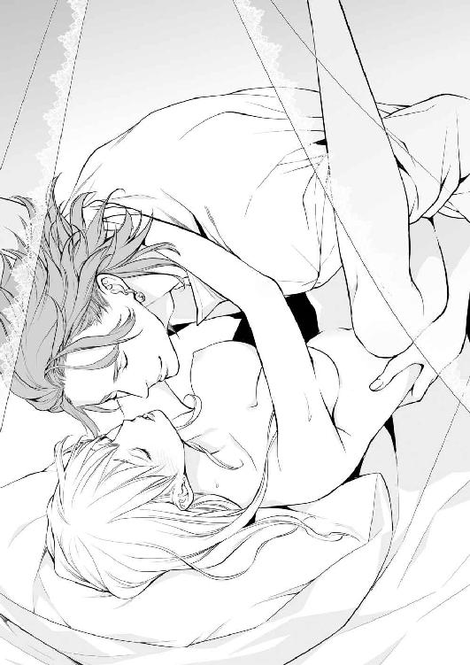
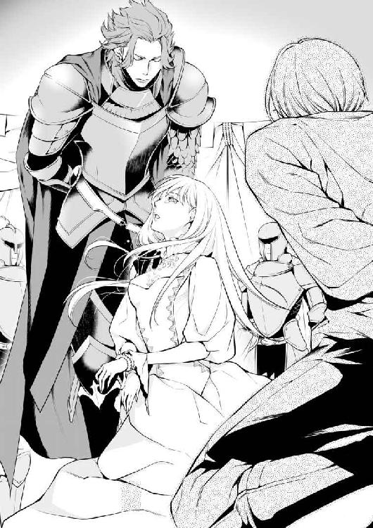
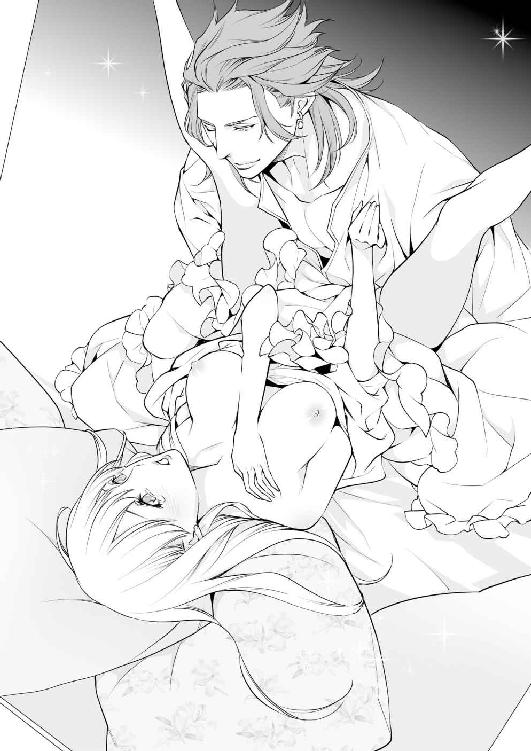
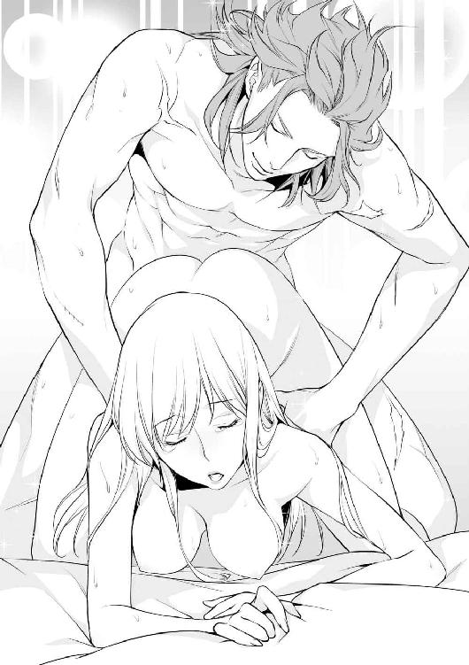
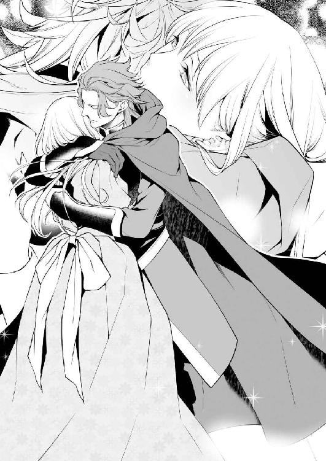
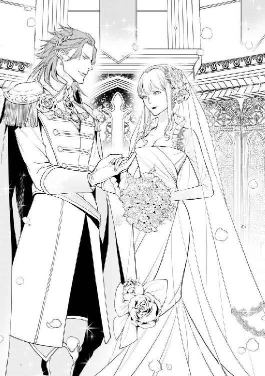
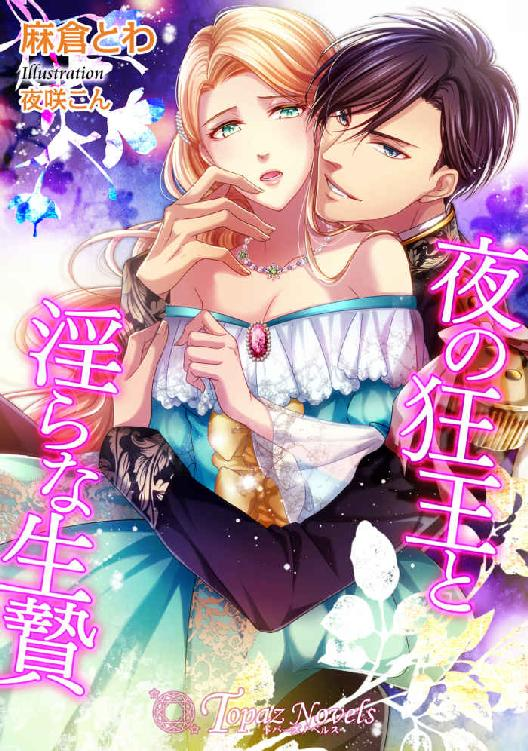
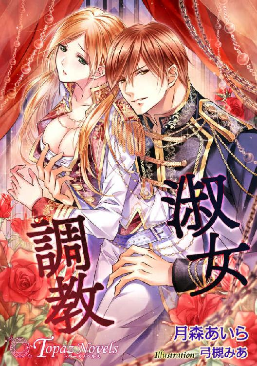

| 聖姫は獅子王の執愛に溺れて【書下ろし・イラスト7枚入り】 (トパーズノベルス) | |
| 茅原ゆみ | |
| アイデジタルパブリッシング (2017) | |
トパーズノベルス
聖姫は獅子王の執愛に溺れて
著作 茅原ゆみ
Illustration 小路龍流
この物語はフィクションであり、実在の人物・団体・事件とは一切関係ありません。
聖姫は獅子王の執愛に溺れて
プロローグ
すべてが純白で統一された寝室の、天蓋付きベッドから垂れるビロードだけ紺碧色だった。
大きな体躯に組み敷かれ、華奢なリリーシュの身体は壊れてしまいそうだ。節が太く、剣を握るために鍛えられた彼の指が、すべらかな肌を追う。
「あぁ、バルトハルト様。お許しください......」
「お前はまだ、俺のことをバルトハルトと呼ぶのか？」
深い琥珀色の瞳が、不機嫌そうに眇められた。
「バルトと呼べと言っているだろう？ 親しい者は皆、俺のことをバルトと呼ぶ」
「は、はい......。バルト......様？」
「そうだ。よく言えたな」
微笑んだ彼は、朝露に濡れたバラのようなリリーシュの唇に、肉厚なそれを近づけた。
「......んっ」
キスをされ、同時に綿モスリンで作られた夜着の上から胸を掴まれる。
「あぁ、や......っ」
温かくて大きな手のひらで捏ねられると、知らずと可憐な乳首が尖り出す。
「ひゃっ......あぁ......」
きゅっと先端を摘ままれて身体が跳ねた。指先で転がされてびくびくと反応する。ベッドがぎしりと音を立てた。
バルトハルトはリリーシュの肩から夜着を引き抜くと、露わになった乳房に口づける。
「だめ......バルト様」
白くて豊かな胸を、舌で舐め上げられた。ちらりと彼に視線を向けられ、これ以上ないほど頬が熱くなる。瞳を閉じて両手で顔を覆った。
太く整った高い鼻梁に、折りの深い二重の目。無駄なものがないすっきりとした頬に、しっかりした顎のライン。精悍で端正な面立ちをした彼は、野生の獣を彷彿とさせる風格がある。
しかし時折見せる笑顔は少年のようで、リリーシュの胸をときめかせた。
「んんっ、やぁ......」
尖らせた舌先で薄紅色の乳輪を辿られ、リリーシュは思わずバルトハルトの頭を抱いた。獅子の鬣を思わせる緋色の髪に指を埋め、逃げるように身体を捩じらせる。
「俺の頭を抱いたまま逃げようとするとは。悦んでいるのか嫌がっているのかわからないな」
クスクスと笑われて、リリーシュの顔はさらに赤くなった。耳たぶまで熱い。
しかし、心と身体が上手くかみ合わないのは仕方なかった。
リリーシュはまだ快感に慣れていない。気持ちがいいと思いながらも、時折怖くなる。底のない激しい快楽に、どこまでも落ちていきそうで......。
ちゅっと音を立てて、乳首を口に含まれた。甘く歯を立てられ、舌で転がされて、じわりと蜜が溢れ出す。もう片方の乳房も揉みしだかれ、布越しに与えられる焦れた感覚に、さらに彼の頭を抱き締めた。
「いや、いや......バルト様、身体が熱い......。身体の奥が......変になってしまいそうです」
紺碧の瞳に涙を浮かべ、左右に頭を振る。絹糸のような長い髪が、サラサラと枕から流れ落ちた。
じんじんと花芯が疼く。
子宮が切なく収縮して、彼が欲しいと訴える。
リリーシュははしたない自分が恥ずかしくて、とうとう眦から涙を零した。
ほんの数カ月前まで、この身体は異性を知らなかったのだ。こんな愉悦すら、一生知らずに終わる環境にいた。
それなのに、身も心も彼に作り変えられてしまった。バルトハルトがいなければ、切なさで死んでしまうほどに......。
「リリーシュ......」
顔を上げ、彼が耳元で囁く。
腰に響く心地よい低音が、さらに身体を火照らせた。
「泣くほど俺が欲しいか？」
見つめられ、羞恥よりも快感と愛しさが勝った。
「バルト様が、欲しい......。欲しいです......」
素直に頷くと、彼は意地悪く微笑んだ。
「ならば自分で夜着を脱いでみろ。俺に美しい裸体を見せるんだ」
「......っ！」
本当ならば、バルトハルトに夜着を脱がしてもらいたい。そして嵐のように抱きつぶしてほしい。しかし彼が望むのなら、なんでも応えたいと思った。
だって、この世で一番愛しい人なのだ。
自分の魂以上に大切な人。
下瞼に羞恥の涙を溜め、バルトハルトをそっと押し退ける。起き上がり、夜着の裾に手を掛けた。机に肘を突いた彼は、嬉しそうにこちらを眺めている。
「バ、バルト様の意地悪......っ」
口を衝いて出た言葉に、彼は苦笑する。
「お前が可愛いのがいけないんだ。だからいじめたくなる」
上半身を起こしたバルトハルトに口づけられて、うっとりと瞼を閉じた。
「一人で脱げるか？」
脱げと言っておいて、優しい目で心配するなんてずるい。
「ぬ、脱げます！」
強がると、リリーシュはそろそろと裾を捲り上げて、下着をつけていない裸体を晒した。
けれども羞恥は拭えず、両腕で胸を隠す。
縋るようにリリーシュは上目遣いで彼を見た。
「やはりお前は美しいな」
感嘆のため息を漏らしたバルトハルトは、肩を掴んでリリーシュをベッドに押し倒した。
胸を隠していた腕を解き、押さえつける。白い喉に鬱血の花を散らし、乳房を舐め、乳首を吸い上げる。いつしか指は秘裂を割り開き、すっかり硬くなった花芯を撫で擦った。
「あぁっ......」
背中を反らして、リリーシュは甘い刺激に耐えた。愛液を塗され、それはさらに激しくなった。クチュクチュといやらしい音が両腿の間から聞こえる。堪らなくなって腰を捻ると、秘筒に指が挿入された。
「ひ、ぅ......やぁ......っ」
激しく抜き差しされ、甘い熱が次々と生まれる。指をぐるりと回して中をかき混ぜられると、堪え切れない快感にひとりでに腰が跳ねた。
「いやぁ......あんっ......バルト、様ぁ」
ぐじゅぐじゅと蜜が溢れ出し、彼が欲しいと全身が求め出す。確かなもので満たしてもらいたくて、リリーシュは濡れた瞳で彼を見上げた。
「お願いです、もう、もう......」
しゃくりあげながら懇願すると、額に汗を浮かべた彼は口角を上げた。細い足を両肩に担ぎ、トラウザーズの前を寛げると、雄々しい屹立を掴み出す。その太さと長さに、毎回リリーシュは息を呑んだ。本当にあんな大きなものが、自分の中に入るのだろうか？ と。
しかし彼はひたりと切っ先を膣口に当てると、ゆっくり腰を押し進めてくる。
「あぁ......んっ」
待ち焦がれていたものに体内を支配され、リリーシュは胸を突き出して身体を撓らせた。
すべてを収めきった時、バルトハルトは乱れた緋色の髪を掻き上げる。そんな仕草ですら、野性味を帯びた彼にはよく似合った。
愛しい男の瞳が悦楽に濡れるのを見つめながら、リリーシュは深く口づける。
（獅子と称えられるバルト様に、身も心も本当に食べられてしまえばいいのに......）
そう願いながら、太くて逞しい彼の首に腕を回した。
愛は狂気にも似ているのだと、強く感じながら。

第一章 金獅子の王
燃え盛る炎の中、手を差し伸べられた。
「俺と来い！」
リリーシュは困惑の眼差しで男を見上げる。
「俺と来い、白百合の巫女！」
焼けた柱が二人の間に倒れ込む。
舞い散る火の粉と熱風に顔を覆った。リリーシュの頬も煤で汚れている。
「でも......」
この期に及んで躊躇うと、細い腕を掴まれた。
無理矢理引き上げられて、馬に乗せられる。背中越しに彼の逞しい胸を感じた。
「この神殿は間もなく焼け落ちる。急いで離れるぞ」
掴まっていろ！ 手綱を握ると、彼は馬の脇腹を蹴った。
嘶いた馬は火の海を疾走する。
間一髪のところで二人は外に出た。
漆黒の闇夜の中、リリーシュは髪を靡かせながら振り返る。
男の肩越しに、焔に包まれて崩れ落ちる神殿が見えた。
「あぁ、神様。なんということ......」
涙が滲む瞳に、火炎の赤が映り込んでいた。
目の前の出来事が、現実とは思えなかった。
＊＊＊
「リリーシュ様。朝のお勤めのお時間でございます」
「はい」
その日も穏やかにはじまった。定時に女官たちは現れ、リリーシュの身支度を整える。
寄宿舎の格子窓から朝の光が入り込み、それは神聖なほどだった。
鳥たちのさえずりは神を称える歌のように美しく、緑も煌めいている。
シリル国の第一王女であり、巫女であるリリーシュは、絹のベールを被り、同じく白絹に白糸で刺繍が施された儀式用のドレスに着替えた。
彼女がいる部屋はとても質素だ。レンガの壁に小楢の床。家具といえば小さな机に狭いベッド、そして数着のワンピースがしまわれたドレッサーだけ。
しかしこれでいい。俗世を離れ、純潔を守り、生涯神に仕えることを宿命づけられたシリル国の第一王女は、女官しかいないこの神殿で一生を終えるのだ。
贅沢をせず、生きていくために必要な食事と、最低限の身の回り品。
とても一国の王女の暮らしとは思えないが、三歳の頃から神殿で暮らしているリリーシュにとって、これが当たり前だった。
最奥部にある祭壇の前へ行くと、神の依り代である鏡の前に跪く。うしろには女官たちが整然と並び、皆で祈りを捧げた。祝詞をあげるリリーシュが願うのは、この国の繁栄と人々の幸せだけ。それ以外、願うことは何もない。
どうかどうか、兄王が治めるシリル国が永続的に平和で、実りある豊かな国でありますように。
けれども、リリーシュの願いは神に届かなかった。
数時間前に神殿は焼け落ち、国のいたるところで戦火が上がり、地獄のような光景の中を馬に乗せられ逃げてきた。
儀式用のドレスの裾は焦げ、煤で汚れている。靴は逃げる途中で落としてしまった。
腕に小さな火傷を負ったが、傷の手当てをしてくれているのは自国の看護師ではない。隣国ゲルシュナー王国の女性看護師だ。
本陣営の一角にあるテントの中、リリーシュは処置用のベッドに腰掛け、忙しく動き回る人々を茫然と眺めていた。
「傷の具合はどうだ？」
甲冑を纏い、金糸で縁取られた濃紺のマントを羽織った男が、リリーシュの腕を覗き込む。緋色の髪は先ほど見た燃え盛る炎を連想させた。
「火傷の程度も軽く、傷跡も残らないでしょう」
看護師の言葉に、男は短く微笑んだ。
「それは何より」
大きな身体に見合うだけの歩幅でテントを出ると、彼は部下らしき男たちに囲まれた。地図を片手に小声で話しはじめる。
「......わかった。王都に攻め込んでいる兵士たちをすぐに引き上げさせろ。無駄な血はもう流すな」
この命令に、部下たちは一斉に動き出す。リリーシュは彼を指揮官だと思った。
「あの方のお名前は？」
敵国の人間であっても、命の恩人の名前は知っておきたい。そう思い訊ねると、看護師はにこやかに教えてくれた。
「バルトハルト・ノイエ・ゲルシュナート陛下でございますわ。我がゲルシュナー王国の国王様であられます」
「えっ？」
「戦場での勇ましい姿から、『金獅子王』とも呼ばれてらっしゃるんですよ」
「金......獅子王」
愕然とした。
彼はこの国を火の海に変えた、ゲルシュナー王国の王だったのだ。
「なぜ、私など助けたのでしょう？」
声が震えた。この震えが怒りから来るのか、怯えから来るのかわからなかった。
「詳しくは存じませんが......。バルトハルト様は敵味方に関係なく、怪我をしている方がいらっしゃると、すぐに救護テントまで連れて来られます。ですからここには多くのシリル兵もおりますし、きっと燃える神殿を見て、リリーシュ様をお助けになったのではないかと」
「どうして私の名を？」
驚きに目を瞠ると、彼女は再び微笑んだ。
「シリル国の神殿には、代々『白百合の巫女』と呼ばれる王女様がいらっしゃることは知られております。王女様でありながら贅沢もなさらず、ご結婚もなさらず一生を神様に捧げる。その高潔なお姿は、世の女性の見本とされておりますわ」
「高潔だなんて」
世の中で自分がそんな風に思われているとは、まったく知らなかった。それも当然だ。俗世から隔離された世界でずっと生きてきたのだから。
「あの、女官たちは......？」
リリーシュはテントの中を見回した。これまで生活をともにし、身の回りの世話をしてくれた親愛なる彼女たちは、一体どこにいるのだろう？
看護師は首を横に振った。
「残念ながら、神殿の中で生き残られていたのはリリーシュ様だけだと」
「そんな......」
全身から力が抜け、ベッドに両手をつく。今にも意識が遠のいてしまいそうだ。
リリーシュは記憶を遡る。
今日も平和に一日がはじまった。
彼女たちと朝から儀式を行い、午後も慎ましやかに過ごして、夜の儀式の準備をしていた時だ。地鳴りのような爆発音が聞こえ、一瞬にして神殿は炎に包まれた。
周りを見れば、崩れた壁や柱の下敷きとなった女官たちが倒れていた。それでも息のある者がいて駆け寄ると、火焔の中から馬に乗ったバルトハルトが現れたのだ。
「お前はリリーシュ・メイ・シールリアだな？」
「はい」
女官を抱き起し、必死に名前を呼んでいた時だ。バルトハルトは腕の中の彼女に目をやると、悔しげに眉を顰めた。
「その者はもう助からない。リリーシュ、俺と来い！」
「で、でも......っ」
「お前が助かることが彼女たちへの弔いとなる！ さぁ早く！ 俺と来い！」
強く腕を掴まれたリリーシュは、うしろ髪を引かれる思いで神殿を後にした。
「ふっ、うぅ......」
止めどなく涙が溢れて、嗚咽が漏れる。
悲しくて、そして彼女たちを救えなかった自分が不甲斐なくて。
リリーシュは両手で顔を覆って泣き続けた。
そうしてどれぐらい泣いただろうか。
目元は赤く腫れ、思考が定まらないほど泣き疲れたリリーシュは、いつの間にか目の前に大きな男が立っていることに気づいた。
「少しは落ち着いたか？ 白百合の巫女」
「バルトハルト様？」
大きく無骨な手には、水の入ったクリスタルのコップが握られていた。
「飲むといい」
「ありがとうございます」
受け取ると、バルトハルトは隣に腰を下ろす。
「此度のことは残念だった。女官たちを救うことができず、申し訳なかった」
「............」
リリーシュは強く唇を噛んだ。戦争を起こしておいて謝られても、許せるはずがない。
「どうして......？」
コップを持つ手に力が入る。
「どうしてこんなことになったのですか？ どうして戦争なんて。どうして......どうして......」
再び涙が溢れ出し、ぱたぱたっと雫が落ちる。するとバルトハルトは、「わからない」と答えた。
「なぜこのような戦をシリルが仕掛けてきたのか、今調査中だ。そなたの兄上も先ほど城内で拘束された。取り調べを行うために護送中だ。まもなくここに到着するだろう」
「カインお兄様が？ この戦争は、カインお兄様が起こしたというのですか？」
「そうだ。四日前、宣戦布告の書状が届いた。それから間もなくして国境付近の街が襲われ、此度の戦に発展した」
指の間からコップが落ち、音を立てて割れた。焦げたドレスの裾を水が濡らす。
「お兄様が......あの優しかったお兄様が戦争なんて......」
ショックのあまり視界が狭くなった。
「リリーシュ！」
前のめりに倒れる寸前、バルトハルトに抱き留められた。
何度も名前を呼ばれる。
しかし瞼を開けることができなかった。
現実を受け止めきれなかった心が、限界を超えて緞帳を降ろしたようだった。
目が覚めると、そこは救護テントではなかった。テントよりも柱が太く、造りが丈夫でベッドも広く、壁面には獅子が描かれた国旗が飾られている。
「ここは......」
未だにぼんやりする頭で起き上がると、ベッドの縁にバルトハルトが座っていた。護衛のためか、入口には四人も兵士がいる。
「バルトハルト様」
大きな背中に声を掛けると、険しい顔で彼は振り返った。そして静かに訊ねる。
「兄王に会いたいか？」
思わずリリーシュは身を乗り出した。
「お兄様に会えるのですか？」
「短い時間だったら接見を許してもいい。どうする？」
「会いたいです！ お兄様に会いたいっ」
最後に兄に会ったのは、もう十五年も前だ。リリーシュは三歳で、兄王のカインは九歳だった。だから成長したお互いの顔はわからないだろう。
しかしリリーシュはずっとカインと文通をしていた。
日々のことや、面白かったこと。そして神殿の蔵書室で読んだ本の感想など、些細なことを手紙に書いた。
けれども先日届いた手紙には、戦争などというきな臭い文字は書かれていなかった。この戦いはリリーシュに教えられることなく、水面下で計画が進められていたのだ。
国王用だという立派なテントを出ると、両手首を兵士に縛られた。
「申し訳ない、白百合の巫女。そなたは今、捕虜という扱いになっている。しばらく我慢していただきたい」
「はい」
普通に考えればそういうことになるだろう。
リリーシュは世の中を知らない。
三歳の頃から神殿を出たことがない。
究極の世間知らずだ。
しかしそれを自覚しているからこそ、女官たちから外の話を聞いたり、蔵書室の本を貪るように読んだ。無知が自分を、窮地に追い込まないように。
その中には、戦争の歴史が書かれた本もいくつかあった。だから知識として知っていた。他国に捕まった者は捕虜になるらしいと。だからこれは納得の展開だ。
いくつも建てられた救護テントや食事をする場所。警備を行う者や、甲冑の音をさせて慌ただしく走る者。多くの物や人が雑多に動き回る中を、兵士に脇を固められてバルトハルトとともに進んだ。すると陣営の隅に粗末なテントが一つあって、周囲をぐるりと兵士が囲んでいた。
物々しさに、カインが中にいるのだとわかった。
思慕に震える胸に手を当てる。溢れそうになる涙を必死に堪えた。
そしてテントが開けられる。
武装を解かれたのか、白いシャツにトラウザーズを穿いた青年が中央に跪かされ、うしろ手に縛られていた。
「カインお兄様？」
震える声で名前を呼ぶと、力なく項垂れていた彼は虚ろな目をこちらに向けた。その目がみるみる開かれる。
「リリーシュ？ お前はリリーシュなのか？」
よく見れば、二人の面立ちはそっくりだった。プラチナブロンドの髪に、コバルトブルーの瞳。睫毛の長い目元はぱっちりと大きく、高い鼻梁は造りが繊細で、赤い唇は夜露を含んだバラのようだ。
肌の色は雪原を思わせるほど白く、手足の長いすらりとした身体付きは、きっとシールリア家の血なのだろう。
「お兄様......カインお兄様......っ」
駆け寄り、リリーシュは自由にならない手で縋りついた。愛おしさから声を上げて泣く。
「リリーシュ、リリーシュ......」
涙こそ流さなかったが、カインの声も溢れる感情で揺れていた。
しかし、二人の肩をバルトハルトが掴んだ。そしてゆっくりと引き離す。
「シリルの王よ、これが最後の情けだ。思い残すことは何もないな」
「最後の情けとは、なんですか？」
ショックのあまり言葉が耳を通り過ぎていく。リリーシュは困惑に眉を寄せながら、バルトハルトを見上げた。

「そのままの意味だ。これから兄王は斬首される」
「斬首......？」
リリーシュは愕然とした。
「いやです！ そんなっ！ いやっ！」
兄の罪はわかっている。この戦はシリルから仕掛けたものだ。そのせいで大勢の人が死傷し、多くの家屋が破壊された。
しかしやっと出会えた愛しい兄を処刑されたくなくて、リリーシュはカインのシャツを握り締めると大きく頭を振った。
彼は本当は優しい人なのだ。
花を愛し、動物を可愛がり、戦争を一番嫌っていた。
いつも手紙に書かれていた。
それなのに、それなのに......。
「お願いです、バルトハルト様！ 兄の罪は私の罪です。殺すなら私を殺してください！」
叫ぶとカインは音もなく泣いた。二人で頭を寄せ合い、今生の別れを惜しむ。
「お前に罪はない、白百合の巫女。さぁ、シリルの王から離れるんだ」
「いやぁ、お兄様！ お兄様ぁ！」
兵士に脇を抱えられ、易々とカインから剥がされてしまった。
「バルトハルト様、兄の罪が重いことは重々承知しております。けして許されることではありません。ですが命を奪うことだけは、どうか......どうかご容赦ください！」
乱れた髪も気にせず、涙で顔をグシャグシャにしながら懇願すると、琥珀色の瞳が静かにリリーシュを捉えた。そして冷たい眼差しがカインに向けられる。
「シリルの王よ。お前は、妹姫が他国の王に蹂躙されることに耐えられるか？」
彼の言葉に、カインとリリーシュは目を瞠った。
「そんなこと、耐えられるわけがない！」
逆上から声を上擦らせたカインに、バルトハルトは冷静に頷く。
「だろうな。私には妹はいないが、きっと妹がいたらそんな屈辱は耐えられない。自ら斬首を選ぶだろう」
一拍置くと、彼はリリーシュの細い身体を抱き寄せた。
「しかし、兄王の罪が自分の罪だというならば、そなたが我が妾となることで兄王の命は助けよう」
「妾......」
血の気がすーっと引いていくのがわかった。
実際に見たことがなくても、『妾』がどんなものかは知っている。
それは妃という正式な座を与えられることなく、一生慰み者にされる存在だ。
「どうする？ 白百合の巫女。そなたが選べ」
「だめだ、リリーシュ！ 妾などになってはいけない。自分の身も心も大事にするんだ！」
「お兄様......」
必死な兄の様子に、硬直していた心は一瞬で決まった。
しかし妹を守るため、カインは矜持を捨ててバルトハルトに頭を垂れる。
「ゲルシュナーの王よ、此度の戦争の責任はすべて私にある！ 妹に一切罪はない！ この命ならいくらでも差し出そう。だからリリーシュを凌辱することだけは......っ」
「お兄様。私はバルトハルト様の妾になります」
「リリーシュ......？」
青い瞳が絶望に見開かれた。
苦悶とも取れる表情を浮かべる兄に、清らかな気持ちで微笑む。
妾になることに迷いはなかった。
なぜなら兄は、十五年間文通しかしてこなかった自分を、こんなにも必死に守ってくれたのだ。
それだけでもう十分だった。兄の愛を痛いほど感じることができた。
神殿も焼け落ち、生活をともにしてきた女官たちも亡くなり、守るものはもう何もない。神への信仰心は強く残っているが、兄の命のためならばそれも捨てることができた。
純潔を失えば、巫女でいられなくなる。
しかし純潔を捨てることで兄が助かるのなら、リリーシュは喜んで妾になることを選んだ。
「お兄様、生きてください。私も生きます。だから二人で罪を償っていきましょう」
「リリーシュ......」
唇を噛み締めて項垂れた彼は、肩を震わせて大粒の涙を零した。
立ち上がる気力もないのか、引きずられるようにして兵士に連れて行かれる。
「お兄様......っ」
華奢な背中がより一層儚く見え、思わず後を追いかけようとした。けれどもバルトハルトに肩を掴まれる。
「安心しろ。そなたが妾になると決めた以上、兄王を手荒に扱ったりはしない。しばらく牢屋にはいてもらうがな」
「お願いです、バルトハルト様。兄の命は奪わないと約束してください。これ以上誰かの血が流れるのは見たくありません」
「わかった。約束しよう」
兄が連行された道を、リリーシュはいつまでも見つめていた。
朝日を受けて、地平線は紺青色に染まっている。
涙が乾いた頬を、早朝の清風が撫でていった。
爪が食い込むほど強く握り締めていた両手を、解すように開いていく。
綱で縛られた両手首は、今の心を表すかのように、擦れて血が滲んでいた。
＊＊＊
先に城へ帰ったバルトハルトから遅れること六日。
荒野の陣営に、金細工が施された可憐な馬車が停まっていた。リリーシュを迎えに来たのだ。
「初めまして、リリーシュ様。今日からお世話をさせていただきます、サーラです」
きりりとした眉に、利発そうな顔をした赤毛の侍女が、ドレスの裾を掴んで膝を折った。
「私はエマです。なんなりとご用をお申しつけくださいませ」
ブルネットの髪を高い位置で結わき、丸い眼鏡を掛けた侍女も微笑む。
「初めまして。サーラ、エマ。あの......私は自分で言うのもおかしいのですが、世間を知りません。ですのでいろいろ教えていただければ......」
「ご安心ください。リリーシュ様のご事情はすべて国王様からお聞きしております。お話の続きは馬車の中で」
サーラに促され、三人は馬車に乗り込んだ。
よく調教された四頭の馬は、滑るように走り出す。
見る見る景色は流れていった。
煤で汚れたドレスをいつまでも着ているわけにはいかないと、リリーシュは今、看護師の女性からもらった木綿のドレスを着ている。
もとは鮮やかなピンク色だったのかもしれないが、着古されたそれは色が暈け、デザインも古い。まとめただけの髪はほつれ、風呂にも入らず土埃が舞う陣営に滞在していたせいか、肌は汚れてすっかり黒くなっていた。
その姿はけして一国の王女には見えない。
侍女であるサーラやエマの方が高価な絹のドレスを着ている。
この様子に、向かいに座るエマは憐れみの表情を浮かべていた。
しかしリリーシュは彼女の視線にも気づかない。
車窓から見える、十五年振りの世界に心奪われていたというのもあるが、自分の身なりが粗末であることも、リリーシュは気にならなかった。
もともと贅沢とは無縁の生活を送ってきたのだ。神殿内では麻布のワンピースを着ていた。だから木綿のドレスを着られるだけでも贅沢だ。
それに拙いながらも看護師に教えてもらって怪我人の看病をしていたので、動きにくい儀式用のドレスよりも木綿のドレスの方が身軽だった。
「お城に着いたら、すぐにお風呂に入りましょうね。メイドたちに準備させますわ」
「ありがとう」
エマの言葉に素直に微笑む。
自分の姿が彼女の心を痛めているとも気づかずに。
それからリリーシュは、サーラからこの戦争に至った経緯と、兄の処遇を聞いた。
母国であるシリル国は内陸に位置する小さな農業国だ。
大きな川や湖はないものの、豊富な地下水のおかげで田畑を潤してきた。
しかし昨年起きた地震のせいで地殻が変動し、豊富だった地下水の湧出量は以前の半分以下になった。
このことはリリーシュも知っていた。女官から聞いていたからだ。けれども慎ましやかに暮らすリリーシュたちに大きな影響はなかった。
だが水を大量に使用する農家は違う。
畑は干上がり、水田は涸れ、穀物が一切育たなくなってしまった。小麦や米の値段は高騰し、餓死する者も出て暴動まで起きた。
それでもなんとか自国の水源だけで賄おうとしたカインだったが、臣下たちに押し切られてこの戦争に踏み切ったそうだ。戦争をしてもしなくても、隣国に水源を求めなければ国は滅んでしまうからだ。
しかし小国シリルと、軍事力では他の追随を許さない大国ゲルシュナーとの戦いは、数日で勝敗がついた。ゲルシュナー王国が圧倒的な兵力で勝利したのだ。
返り討ちにされたシリル国の臣下たちは処刑され、カインはリリーシュがバルトハルトの妾になることで、荒原の城に幽閉されることになった。
「......そうですか」
膝の上で手を握り締め、サーラの話を黙って聞いた。
国の繁栄と国民の幸せを願う巫女であったはずなのに、なんと自分は無力だったのだろうか。そして神はなんと無慈悲か。
何度も休憩を挟みながら、リリーシュたちは三日かけてゲルシュナー王国の都に着いた。
「ここが王都......」
リリーシュの瞳は驚きに見開かれた。
初めて目にする他国の王都は活気に満ちている。
大きな市場があり、店は軒を連ね、威勢の良い声がどこからか聞こえてくる。
馬車が通るのも難儀するほど、街には人が溢れていた。
窓にはりつき目を離せずにいると、笑顔でエマが教えてくれた。
「ゲルシュナー王国の王都は、『二十四時間眠らない街』として有名です。昼間は市場が賑わい、夜は飲食店が明け方まで営業していて、街から灯りが消えることはありません。警備兵も多いので治安はいいですし、落ち着いたら一度散策しましょうね」
「はい」
これまで触れたことのない人々の活力に、リリーシュは自分も興奮してくるようだった。眠っていた人間本来の生命力が呼び起こされ、心が奮い立つ。
衛兵が守る豪奢な鉄門をくぐると、その先は森のようになっていた。
まっすぐ伸びた石畳の道を進み、沿道に植えられた欅が途切れた頃、王城の広い馬車寄せが見えた。
「なんと立派なお城でしょう！」
知らずと感嘆の声が漏れた。
丘陵地を利用して作られた王城は、果てが見えないほどだった。石造りの外見に派手さはないが、歴史を感じさせる威厳がある。エマの話によると、床面積は近隣国で最大らしい。
リリーシュの身の丈の三倍はありそうな扉を抜けると、中はじつに豪華絢爛だった。
いたるところに黄金が使われ、無骨な外観からは想像もできないほど精緻な装飾が施されている。真っ白な漆喰の壁には傷一つなく、二階へ続く両翼の階段は手すりまで金で出来ていた。
品がありながらもまばゆい城内に、リリーシュの目はチカチカする。
歴代王の肖像画が飾られた長い廊下を歩く。
噴水が見える迷路庭園をぐるりと回り込み、さらに奥へ行くと女神の浮彫が施された扉があった。
「この先が国王様のハレムとなります。政務が行われている昼間は移動が制限されますが、夕方以降は自由に行き来できますので。どうぞお城の中を探検なさってくださいな」
彼女が片手を上げると、両脇にいた衛兵が扉を押し開けた。
すると景色はまた変わった。
ハレム内は女性が好みそうな淡い色調で纏められ、壁に嵌められた鏡の枚数も増えた。
たっぷり光が差し込むフレンチ窓からは大きな湖も見え、輝く水面と綺麗に刈られた芝が、一枚の絵画のようだ。
部屋の前に着くと、サーラとエマは二人で両開きの扉を開けた。
「わぁ......」
目の前に広がった光景に、リリーシュは長い睫毛を瞬かせる。
部屋はすべて白で統一されていた。
ファブリックに施された刺繍はすべて銀糸で、天蓋付きのベッドから垂れるビロードだけが紺碧色だった。
「とても素敵なお部屋でしょう？ 国王様がリリーシュ様をイメージして作らせたお部屋なんですよ」
我が事のように喜びながらサーラが教えてくれた。
「あんな強面ですけど、うちの国王様はロマンチストなんです」
こっそりエマも耳打ちしてくれる。
さぁさぁと腕を引っ張られて部屋に入ると、中央のテーブルにはお茶とお菓子が用意されていた。
しばらくするとメイドたちがやって来て、部屋に備えつけられた広いバスルームでリリーシュは沐浴させられた。湯船にはバラの花びらまで浮かんでいる。
風呂から出るとプラチナブロンドの髪を綺麗に梳かれ、リボンとレースがたっぷり着いた絹のドレスを着せられた。
「お綺麗ですわ、リリーシュ様」
「やはり一国の王女様だったんですねぇ」
鏡に映るリリーシュの姿に、サーラやエマが感嘆の息をつく。沐浴や着替えを手伝ってくれたメイドたちも、うっとりとリリーシュを眺めていた。
「あ、あの......」
上品なペールピンクのドレスを身に纏いながら、リリーシュは困惑していた。
儀式の時以外に絹のドレスなんて着たことはないし、レースや色がついた自分用のドレスなど、物心ついてから見たこともない。神殿にいる時はみな、麻で作った生成りのワンピースを着ていたからだ。
下ろした髪も毛先がクルクルと巻かれ、流行の品だという宝石の髪飾りは、頭が傾きそうなほど重い。
しまいには生まれて初めて化粧まで施されてしまって、リリーシュは大きなソファーに腰掛けながら、居心地悪く視線を彷徨わせることしかできなかった。
その後ハレム内を案内されたリリーシュは、二十人ほどいる先住の姫君たちに挨拶をし、豪華な夕食を振る舞われた。
日が暮れると、シリル国にはなかった電気というもので部屋は明るく照らされ、リリーシュは魔法にでもかけられたような気持ちになった。
ドレスを脱ぐと、綿モスリンでできた肌触りの良い夜着を着せられる。
「それではおやすみなさいませ。素敵な夢を」
サーラとエマが部屋を出て行くと、やっと一息つくことができた。
身の置きどころに困ってしまうほど大きなベッドに腰かけ、窓から月を眺める。
「神殿での暮らしが、遠い昔のようだわ」
目まぐるしく変わる日々に、心が追いついてこない。
こんなにも贅沢な生活が自分を待っていたなんて、想像したこともなかった。
しかし、リリーシュは兄のことが心配で仕方ない。
幽閉されている土地は、昼夜の寒暖差が激しいという。
もともと身体が強くないカインは、体調を崩したりしていないだろうか？
（お兄様に会いたい......）
ベッドに入り布団を被った。
滲んだ涙を枕に擦りつける。
新しい環境に身も心も疲れ果てていたリリーシュは、このあと夢も見ないほど深く眠った。
第二章 身に余る生活の中で
こうしてハレムでの生活ははじまった。
政務に追われているらしいバルトハルトとは、城に来てから一度も顔を合わせていない。
妾になるとすぐに純潔を奪われるのかと怯えていたが、ハレムでの生活が一週間も過ぎると警戒心も薄れた。
襟ぐりが大きく開いた可憐なドレスに身を包み、リリーシュは今、迷路庭園の真ん中にいる。
小さな陶製の噴水には質素な美しさがあり、小鳥たちが水を飲みに来る姿は、とても心が癒された。神殿にあった手水鉢を思い出させる。
初夏の日差しを受けながら、綺麗に刈りこまれた庭園の緑に目を遣る。その美しさに心から吐息した。
「神様、今日も平和な一日をありがとうございます」
天に向かって呟く。
しかしリリーシュはまだ本当の平穏を実感していなかった。
今でも朝晩の祈りは欠かさない。亡くなっていった者たちの冥福を祈り、そして二度と戦争が起きないよう、強く強く願っていた。
しかし軍事大国であるゲルシュナー王国が大陸一の栄華を極め、発展し、周辺国への影響力が絶大であることを考えれば、この世から戦争がなくなるのはずっと先のことかもしれない。
そう思って、暗い気持ちになった時だ。
「リリーシュ様～！ もうすぐご昼食のお時間ですよ～っ」
庭園を臨むハレムのベランダから、侍女のサーラが大きく手を振っていた。
彼女は今日も元気だ。元は軍隊の女剣士であったというサーラは、リリーシュの侍女であり、護衛でもある。
「わかりました。今戻ります！」
こちらも声を張り上げて笑顔で手を振った。
午前中の日課である散歩を終え、リリーシュは自室へ戻った。
ハレムでは日に三度着替えをする。
朝は爽やかな色合いのドレスを着て、昼食時には流行のドレスやジュエリーを身に着ける。そして夜は露出度の高い煌びやかなドレスを纏い、国王を囲んで食事するのだ。その場にバルトハルトが現れたことはないが......。
しかしエマやサーラは、夕食時よりも昼食時が大事だという。
もちろんハレムにいる以上、国王に美しい姿を見せることが最も重要だが、昼食時は姫君たちだけでテーブルを囲むので、目には見えない女同士の闘いが行われているそうだ。
サーラの言葉を借りれば、どれだけ流行のドレスやジュエリーを身に着けるかで、『マウントを取り合う』らしい。
『マウントを取り合う』という意味がリリーシュにはわからなかった。エマの補足によると、姫君たちの中で絶対的な優位に立つことだという。
絹のドレスを着ることができて、豪勢な食事を食べさせてもらって、十分すぎるほどふかふかなベッドで眠れる。
これだけ贅沢をさせてもらえることに、リリーシュは感謝していた。身に余る生活だ。それなのにさらに自分を飾り立て、優位に立とうなんて。
彼女たちの考えが今一つ理解できなかった。だから優劣なんてどうでもよかった。興味すらない。
むしろドレスをもっと質素にして、余ったお金で生活に困っている人たちに衣服を買い与えたかったし、食事の品数を少なくして、その分を困窮している子どもたちに分けたかった。
この話をすると、サーラとエマは優しい笑みをリリーシュに向ける。
「本当に欲のない方なんですね、リリーシュ様は。でもご安心ください。この国は生活水準が高いので、着ることや食べることに困っている人はほとんどいません。それに困っている少数の人には、国から補助が出ます。バルトハルト様の代になって、この救済法が定められました」
「そうなのですか」
エマの話に胸を撫で下ろしたのは、つい昨日のことだ。だからといって贅沢に慣れたわけではない。女同士で『マウントを取り合う』昼食時は毎日やってくるのだ。
「うーん、このドレスは少し地味じゃないかしら？」
リリーシュを前に、エマは首を傾げた。「そうね」とサーラはメイドを呼びつける。
「一昨日届いた臙脂色のドレスがあったでしょう？ あれを持ってきてちょうだい」
「あら、お昼から臙脂色なんてもっと地味だわ！ 白地に黄色い紗を重ねたドレスがあったでしょ？ あれにしましょう」
「じゃあ、ジュエリーはどれがいいかしら？」
「イエローダイヤモンドがついたチョーカーはどう？ そして髪はアップにして向日葵の髪飾りをつけるの！」
「素敵だわ！ それでいきましょう！」
胸の前で手を叩いたサーラは、メイドが持ってきた黄色いドレスをリリーシュに着せると、大粒のイエローダイヤモンドがついたチョーカーを首につけた。
「完璧ですわ、リリーシュ様」
化粧を施し、満足げにエマが頷く。サーラも両腰に手を当てて笑顔だ。
侍女たちも、自分が仕える姫君がどれだけハレムの上位にいるかで『マウントを取り合う』のだそうだ。だからサーラもエマも昼食時のドレス選びは気合が違う。
彼女たちの話によれば、リリーシュはハレムの中で一、二を競う美貌の持ち主らしい。
けれども慢心してはいけないという。
姫君たちは少しでもハレムの上位に入るため、日々流行を追いかけ、美容に時間を費やし、バルトハルトの目に留まろうと必死だからだ。
ドレスの裾を掴み、リリーシュは重たい気持ちで食堂室へ向かった。
姫君たちと食事をするのは気乗りしなかった。なぜだかわからないが、彼女たちの間にはぎすぎすした空気が流れているからだ。
せっかく同じハレムにいるのだから、みんな仲良くすればいいのに......と思うが、サーラやエマは首を横に振る。
「国王様の寵愛を得るためには、そんな甘い気持ちでいてはいけません。みんなライバルだと思っていただかなくては！」と。
広い食堂室のテーブルに着くと、リリーシュは銀食器に映る自分を見た。
確かにサーラやエマが苦心してコーディネートしてくれたおかげで、今の自分は夏の妖精のように華やかだ。
けれどもそれはとても空虚なものに思えた。
外見を飾り立てるのではなく、人は内面から輝けばいい。
リリーシュは女官たちからそう教わった。
しかし食堂室に現れた姫君たちは、頭に大きな羽根飾りをつけたり、宝石がちりばめられたドレスを着たりと、贅の限りを尽くしている。上品な紗のドレスを着たリリーシュは、目立たないほどだ。
この様子に、姫君たちは勝ち誇った笑みを浮かべた。美貌では勝てないリリーシュに、服装で勝利したからだ。
「シリル国のリリーシュ様は、ずいぶん慎ましやかな格好をされてますこと」
口元を扇子で隠した姫君たちが、クスクスと笑い出した。
「流行にはあまり敏感ではないようね」
「あら、仕方ないんじゃありません？ だってずーっと女ばかりの神殿で暮らしてらっしゃったのでしょう？」
女ばかりといえば、このハレムだって一緒だ。
けれどもあからさまな彼女たちの嫌味に、うしろに控えていたエマは顔を顰めた。サーラにおいては今にも飛びかかりそうだ。
けれども身なりに興味のないリリーシュには、彼女たちの嫌味は通用しなかった。なぜなら自分もそう思っていたからだろう。
サーラとエマが選んでくれたドレスとジュエリーは、リリーシュにとてもよく似合っていたが、けばけばしい彼女たちの中では目立たなかった。
それに自分自身はまったく流行に興味がないし、女官に囲まれて暮らしてきたのも本当だ。
姫君たちは何一つ嘘を言っていない。
だから素直に頷いた。
「確かに今日のドレスは控えめで、流行にも疎く、三歳の頃から神殿で女官とともに暮らしてきました。皆さんの言う通りです」
リリーシュの言葉に、彼女たちはざわめいた。嫌味を言われたリリーシュが、開き直ったと思われたのだ。
しかし鈍いところがあるリリーシュは、無邪気に話し続けた。
「神殿では儀式の時以外、絹のドレスなんて着られませんでした。ジュエリーを初めて身に着けたのもお城に来てからです。髪を綺麗に結ってもらって、お化粧もしてもらって、広いお部屋にふかふかのベッドがあって、毎日食べきれないほどのお食事が出て......。こんな贅沢をしてもいいのかしら？ って、毎日神様に問うてしまいます」
「そんなこと、お姫様なら当然なのに」
背後からエマの声が聞こえた。思わず漏れてしまったような呟きだった。
「しかも俗世から隔離された環境で育ったので、世間知らずもいいところです。湖も本で読んだことはありましたが、目にしたのはここへ来てからです。あんなに大きな水たまりがこの世にあるなんて、驚きでした。自分の経験の浅さが恥ずかしいです」
照れながら苦笑したリリーシュに、場の空気が一気に変わった。あんなにとげとげしかった姫君たちが、憐れみの表情を浮かべはじめたのだ。
「きっと皆さんは小さい時からいろんな世界を見て、たくさんの人と出会って、素敵な経験がおありなのでしょう。でも私には神殿の中で女官たちと過ごした経験しかありません。だから皆さんのことがとても羨ましいです。神に仕えていれば一生知ることのなかった劣等感を覚えます。私はがらんどうなのです」
「そんなことおっしゃらないで！ まだ若いんですもの。私たちと一緒にいろんな経験をしましょうよ」
「そうよ、やっと神殿の外に出られたんじゃない！ これから湖でも海でもいくらでも見に行けばいいわ」
ボートに乗りましょう！ いいえ、船に乗って世界一周旅行に行きましょう！ 姫君たちは口々に言い出した。
隣に座っていた派手な羽飾りをつけた姫君は、涙を浮かべてリリーシュの両手を握る。
「同じハレムにいるのも何かの縁だわ。国王様を巡ってはライバルだけど、お友達になってあげてもよくてよ」
「ありがとうございます」
にっこりと微笑むと、食堂室の空気が和んだ。
今日の昼食はじつに美味しかった。
明るい話題で盛り上がり、みんなで声を上げて笑った。
この様子に目を細めていたのはサーラとエマだ。
場の空気を明るく変えたリリーシュに、心動かされたようだ。
素直な言葉で人を惹きつけ、その無邪気さで虜にする。リリーシュ本人は気づいていない魅力に、彼女たちは気づいたのだ。
昼食後、生まれて初めてボートに乗った。姫君の一人が誘ってくれたのだ。
大きな水たまりだと思っていた湖は、底が見えるほど水が透明で美しい魚たちが泳いでいた。
他の姫君にはお茶に誘われ、リリーシュはそこでカードゲームというものをやった。
ルールが複雑でよくわからなかったけれど、勝負事には強いサーラの助けもあり、何度か勝つことができた。
こうして姫君たちと交流していると、あっという間に日は沈み、夕食の時間になった。
大きく肩の開いたイブニングドレスに着替え、ハレムから出て国王専用の食堂室へ向かう。けれどもリリーシュが城へ来てから、一度もバルトハルトは夕食の席に顔を見せていない。忙しい彼は政務に追われ、姫君たちとの夕食の時間に間に合わないというのが理由らしい。
しかしエマが教えてくれたところによると、バルトハルトは色恋事に興味がなく、ハレムの女性に関心が薄いので、夕食時にも顔を出さないそうだ。
だからこのハレムにいる姫君たちも、バルトハルトが好きで集めたわけではない。各国から政治的な戦略で婚姻を迫られ、仕方なく囲っているに過ぎないのだ。
「なので、お手付きの姫君はこのハレム内にはいないと思いますよ」
「『お手付き』とは？」
訊き返すと、エマは声を潜めて教えてくれた。
「肉体関係を持つことです」
「......そ、そうですか」
かぁっと頬が赤くなった。
しかし、政略結婚のために集められた姫君に関心を示さないということは、兄王の命と引き換えにこの城へやって来た自分には、もっと関心を示さないだろう。
シリル国の姫である自分は、ゲルシュナー王国に戦争を仕掛けた罪人にも等しい。
それなのにこれだけ恵まれた環境を与えてくれたのだから、むしろバルトハルトには感謝しなければならない。
ハレムへやって来てひと月も経つと、妾であることも忘れていた。
女性ばかりの環境で育ったリリーシュは、女の園であるハレムは居心地が良かった。男性の従者と廊下ですれ違ったりすると、緊張してしまうほどだ。
だからここでの生活は性に合っていた。
リリーシュ以外の姫君たちは、相変わらず『マウントを取り合う』ことに囚われ、派手なドレスとジュエリーで競い合っていたが。
「それでもリリーシュ様がいらっしゃる前と比べて、ずいぶんハレムの雰囲気は和やかになりましたよ」
「本当に。リリーシュ様が皆に愛される、可愛らしい性格をされているからですわ」
就寝の準備をしながら、サーラとエマが笑った。
「そんなことないわよ。私のような世間知らずを、姫君たちが相手にしないだけ」
食堂室での一件以来、リリーシュは姫君たちに可愛がられるようになった。
ハレムの中で一番年下というのもあるだろう。
世の中を知らない素直で無垢なリリーシュに、彼女たちはこぞって自国の話をしてくれた。
それは好奇心を掻き立て、見聞を広げてくれるものだった。
だからリリーシュは、姫君たちとおしゃべりができるお茶の時間が、待ち遠しくて仕方なかった。
「おやすみなさいませ、リリーシュ様」
「おやすみなさい。サーラ、エマ」
ぱたんと扉が閉められて、大きくてふかふかのベッドに入った。
今日も夕食時にバルトハルトは現れなかった。
背が高くて大きくて、緋色の髪は燃える炎のようだった。
いや、『金獅子王』と言われるくらいなのだから、獅子の鬣か。
けれども彼の顔はもうぼんやりとしか憶えていない。
このまま二度と会うことはないのではないか？ とすら思うようになっていた。
その時だ。扉が一つノックされて、リリーシュは身体を起こした。
ベッドサイドテーブルに置かれたスタンドライトを点ける。
きっとサーラかエマが忘れ物でも取りに来たのだろう。だから警戒心はまったくなかった。
「はい、どうぞ」
声をかけると、静かに扉が開けられる。
「............！」
長く伸びた影は女性の華奢なものではなく、逞しい男性の形をしていた。
「バ、バルトハルト様っ!?」
「しっ！ あまり大きな声を出すな。俺がハレムに来ていることがバレてしまう」
人差指を口元に当てると、彼は口角を上げて笑った。慌ててリリーシュは口を両手で覆う。
白いシャツに濃紺のトラウザーズというラフな格好をしたバルトハルトは、うしろ手に扉を閉めた。そしてゆったりとした足取りでベッドに近づいてくる。
「すまなかったな。本当はもう少し早くお前を訪ねようと思っていたのだが、先の戦争の後処理もあって、なかなか来られなかった」
「い、いえ......」
一気に襲ってきた緊張に身を固くすると、ベッドの縁に腰掛けた彼は、リリーシュを安心させるように微笑んだ。
「大丈夫だ。あの場では妾になれと言ったが、お前に手を出すつもりはない。今夜は儀礼的に部屋を訪ねただけだ」
「わ、わかっています。バルトハルト様は......恋愛に興味がないのですよね？」
「ん？」
首を傾げた彼に、エマが言っていたことをおずおずと口にする。
「その......バルトハルト様はお仕事がお好きで、あまり女性はお好きではないと侍女から聞きました」
この言葉に彼は声を上げて笑った。そして緋色の髪を掻き上げると、楽しそうにリリーシュを見る。
「確かに。俺は仕事人間で、このハレムにいる姫たちに興味はない。ここへ来るのも半年ぶりだ。だから俺がハレムにいることがバレるとまずいんだ。ほったらかしにしていた姫たちが、目くじらを立てて部屋に押しかけてくるかもしれないからな」
以前そういうことがあったと教えてくれた彼は、陣営で会った時のような堅苦しさを感じさせなかった。
リリーシュのことを『白百合の巫女』ではなく『お前』と呼ぶし、自分のことも『私』ではなく『俺』という。
「あの......」
「なんだ？」
久しぶりに会ったバルトハルトの端正な顔を見つめた。
忘れかけていた記憶が蘇る。
焔に包まれた神殿の中で見た、勇ましい姿を。
するとリリーシュの心臓は、トクトク......と鼓動を速めた。
誰かを思って心臓が逸るなど、初めての経験だ。
しかし薄暗い部屋の中で、男性と二人きりになっている状況に緊張しているのだと、自分を納得させた。
「あ、あの......ちゃんとしたお礼も言えずに申し訳ありませんでした。私の命を救っていただいただけでなく、兄のことも」
「それはもういい......というわけにはいかないが、お前が俺の妾となり、兄王は幽閉の身となった。とりあえず今回はこれで手打ちとなったんだ。だからもう掘り返すな」
「はい......」
小さな沈黙が訪れた。
リリーシュは男性と話したことがほとんどない。
バルトハルトも色恋事や姫君に興味がないと言っていた。
だから会話が続くはずなどない。
それなので儀礼的に部屋を訪ねてきた彼は、すぐに帰ると思っていた。
しかしバルトハルトは膝の上で軽く手を組むと、もう一度リリーシュを振り返る。
「花でも見るか？」
「花......ですか？」
唐突な申し出に、リリーシュは目を瞬かせた。
「あぁ。俺はさっきお前に言われた通り、あまり恋愛に関心がない。姫たちと愛を交わす時間があるなら、執務室で仕事をしていたい。だから女性が喜ぶような話を、一つもしてやれないんだ。......だが、ひと月もお前をほったらかしにしていたからな。挨拶だけして帰るなんて、そこまで無礼はしない。長い間待たせたお詫びに、一緒に温室でも見に行くか？」
「連れて行っていただけるのですか？」
思ってもいなかった彼の提案に、リリーシュは瞳を輝かせた。
「もちろん。お前が嫌でなければ」
「温室、行ってみたいです！」
「よし、では参るか。シリルの姫」
立ち上がると、彼は胸に手を当てて、仰々しいほど丁寧に頭を下げた。お道化た姿に、リリーシュは吹き出してしまう。武人らしい厳つい見た目とは裏腹に、バルトハルトはお茶目な性格をしているのかもしれない。
したり顔の彼の手を取ると、リリーシュはミュールを履いてハレムを出た。
庭へ続く扉をくぐると、明るい月光が二人を照らす。
「綺麗なお月様」
見上げて微笑むと、バルトハルトはリリーシュの横顔をしばし見つめた。それから細い手を取り歩きだす。足元が危ないからと。
石畳の小道を行くと、甘い芳香を漂わせるバラのアーチが続き、キラキラと月の光を反射させる噴水が見えた。
その奥に白い鉄筋の枠組みと、磨りガラスで作られた立派な建物がある。
「すごい......」
温室がどのようなものか、女官から聞いて知識はあったが、実物を目にするのは初めてだ。ガラスだけで作られたこんなに大きな建造物は、見たことがない。
「ここが温室ですか？」
「あぁ。初めて見るか？」
「はい！」
午前中は毎日庭を散歩しているが、バルトハルトが執務を行う敷地には入ったことがなかった。とても警備が厳重で、重々しい空気がしたからだ。
しかし夜は違う。気持ちのいい夜風がそうさせるのかもしれないが、解放感があり、穏やかな時間が流れていた。
温室の入り口を守っていた衛兵に、バルトハルトは扉を開けさせる。
すると瑞々しい花の香りが、一気にリリーシュを包み込んだ。
「なんて素敵なんでしょう......！」
人工的に造られた空間には、初めて目にする花木がたくさんあった。
中には池まであり、白やピンクの蓮華が咲いている。
あれもこれもと目移りさせながら、リリーシュは跳ねるように歩いた。
天井に着きそうなほど高い樹木を見上げて、「わぁっ！」と感嘆の声を上げる。極彩色の大輪の花に恐る恐る触れては、キャッキャと笑った。
はしゃぐリリーシュの姿に、バルトハルトは目を細めている。
「バルトハルト様、あのお花はなんという名前ですか？」
「それは胡蝶蘭だ」
「じゃあ、面白い形をしたこれは？」
「ウツボカズラだ。袋状になっているところに虫を落として食べる、食虫植物だ。気をつけないとお前の指も食われるぞ」
「た、食べられちゃうんですか!?」
驚いて飛び上がり、リリーシュはバルトハルトの腕にしがみついた。
すると腹を抱えて彼は笑い出す。
「ひ、ひどい！ 騙したのですか？」
「すまんすまん、お前があんまりにもはしゃぐから、ちょっとからかってみたくなったんだ」
「もうっ！」
頬を膨らませると、彼はまた目を細めた。
その眼差しがとても温かくて、リリーシュの鼓動は再び速まった。
（なんなのかしら、これは......？）
心の中で首を捻ったが、逸る鼓動とともに湧き上がる感情がなんなのか？ リリーシュには難解すぎて、今は考えることをやめた。
奥へ進むと池の真ん中に大きなガゼボがあり、橋を渡ってそこへ行く。
寝椅子付きのゆったりとしたソファーに腰を下ろすと、いつの間にかメイドがお茶とサンドウィッチを運んできてくれた。
「どうして私とバルトハルト様が、ここにいるとわかったのでしょう？」
紅茶に口をつけながら訊ねると、頭のうしろで腕を組み、寝椅子に転がったバルトハルトが答えた。
「きっと衛兵からメイド長に連絡が行ったんだろう。だからこうして夜食と紅茶が運ばれてきた」
「それではバルトハルト様が城内のどこにいるか、すぐにバレてしまいますわね」
冗談で言うと、彼は眉間に深く皺を寄せる。
「まったくだ。これでは息をつく暇もない。もう少し自由が欲しいものだ」
「バルトハルト様......」
この言葉に、リリーシュは感じるものがあった。
自分は戒律の厳しい神殿で育った。
最初、それは苦痛でしかなかったのを幼心に憶えている。
だからバルトハルトもまた、多くの人間に見守られて警護されることに、苦痛を感じているのだろう。
戒律と干渉は違うものだが、それでもリリーシュはなんとなく彼の気持ちがわかった。
「あぁ、そうだ。サーラとエマから聞いたぞ。お前の武勇伝を」
「武勇伝？」
なんのことを言われたのかわからず、首を傾げる。
「ライバル心剥き出しのハレムの姫たちを、一瞬にして手玉に取ったそうじゃないか」
「手玉だなんて！」
俗っぽい言い方をした彼に、手元にあったクッションを投げつけた。するとバルトハルトは笑いながらそれを受け取る。
「も......申し訳ありません！ 私ったらなんて無礼なことを！」
慌てて頭を下げると、彼は声を上げてさらに笑った。
「いや、いい。それぐらい元気があるほうが、見ていて微笑ましい」
一国の王に対して、こんな馴れ馴れしい態度を取ってはいけない。礼節を重んじなければならない。
しかし彼が纏うおおらかな空気が、自然とリリーシュを無邪気にさせた。素のままの自分でも、受け止めてくれたのだ。
出会ってまだ数回しか顔を合わせていないのに、二人はとても波長が合った。
「でも、すごいな。自分が優位に立つことしか考えていない姫たちに、ライバル視されることもなく可愛がられるなんて。しかもハレムの雰囲気まで明るく変えたそうじゃないか」
「別に私は何もしていません。育ってきた環境を、包み隠さず話しただけです」
「姫たちには新鮮だったんだよ。神殿でのお前の暮らしが、自分たちの想像を遥かに超える厳しさだったから」
「厳しさだなんて」
幼い頃から神殿で育ったリリーシュには、当たり前のことだった。
「でも、なんとなくわかる。俺もこの城や伝統あるしきたりに、時々息苦しさを感じる。干渉と戒律は違うだろうが、自分を縛るものがあるということが、どれだけ重苦しいか。少しだけわかる気がする」
「バルトハルト様？」
青い目を大きく瞠った。それはさっき、自分が感じたこととまったく一緒だったからだ。
リリーシュは瞬きを繰り返しながら彼を見た。バルトハルトもまた、リリーシュが投げたクッションを下に敷き、肘を突いた格好でこちらを見ている。
深い琥珀色の瞳が、心の奥まで見透かすようだった。
高い鼻梁に、男らしい骨格。
はっきりとした二重の目は濃い睫毛に縁取られ、捲られた袖から覗く腕は逞しい。きっと神話に出てくる美丈夫とは、彼のような人を言うのだろう。
リリーシュの心臓は、またドキドキと高鳴り出した。胸がきゅーっと苦しくなって、頬が熱い。これ以上彼と見つめ合っているとどうにかなってしまいそうで、ぱっと顔を逸らす。
「あの......こういうお話はご存知ですか？」
真っ赤になった顔を隠すように、幼い頃本で読んだ話を語り出す。
「昔、ある井戸の中にカエルがいたんです。赤いチョッキを着たカエルは、おたまじゃくしの頃から、井戸の中のお家を出たことがありません。大好きな食べ物はコオロギのパイと、コバエのプディング。母親ガエルは数年前、お買い物の途中で蛇に食べられてしまいました。兄弟ガエルたちはみな外に出て、畑を耕したり、靴を作ったりして生活しています。でも赤いチョッキのカエルだけは、穏やかな生活を望んで、井戸から出ようとしませんでした」
「へぇ、それで？」
童話に興味を示したのか、バルトハルトは身を乗り出して頬杖をついた。
「赤いチョッキのカエルは、広い世界を知りませんでした。ずーっと狭い井戸の中にいたからです。でも、友人の鳩は言いました。『もっと広い世界を見てごらん。たった一度の人生だ。大海を知らずに死んでしまうなんてもったいないよ』と」
そのあとカエルは意を決して井戸を出る。そして鳩の背に乗り世界中を旅し、夢を馳せた海も見る。
「けれども赤いチョッキのカエルは、結局井戸に戻ってしまうんです」
「なぜ？」
「広い世界を知って、人々の喜怒哀楽を見て、カエルはやっぱり井戸の中が一番だと思ったのです。それはけしてうしろ向きな考えではありません。広い世界を知ったからこそ、今の生活がもっと大事だと気づいたのです。カエルは穏やかな生活を望みながらも、心のどこかで退屈だと思っていました。でもその退屈こそが『平穏』で、狭い世界こそが『安住』だったのです」
「それで、お前は何が言いたいんだ？」
バルトハルトに穏やかに問われて、リリーシュは目の前に咲く木蓮の花を見た。
「私もバルトハルト様も、神殿やお城の生活が窮屈だと感じたことがあります。でもそれはじつは『平穏』で、『安住』なのではないかと」
俯くと、リリーシュは話を続けた。
「人は、生まれ育った環境を完全に捨てることはできません。これから先、どんなに長くお城で過ごしたとしても、私は神殿で学んだことや、躾けられたことを忘れないでしょう。それはきっと無意識に出てしまうものだと思うんです。だからバルトハルト様も......」
どんなに窮屈でも、生まれ育ったお城が『安住の地』なのではないか？ と言いかけた時だった。
「俺の母親は、この城で働いていたメイドだった」
「......えっ？」
陰のある笑みを浮かべたバルトハルトは、リリーシュの膝の上に頭を乗せた。
「しかし先代王の子を妊娠したとわかった時、母はメイドをやめて、城下にある実家のパン屋に帰った。王には正妻がいたし、ハレムにもたくさん妾がいる。メイドなどと身分の低い者が王の子を出産すれば、大問題になるからな。しかも正妻や妾から嫌がらせを受けるのも目に見えていた。だから母は、『安住の地』で子育てをすることを選んだんだ」
想像もしていなかったバルトハルトの出生に、リリーシュは言葉が出なかった。
「早くに母が亡くなり、祖父母に育てられた俺は、何も知らずに成長した。自分はただのパン屋の息子だと思っていたんだ。でも十歳の時、城から使者が来た。王が......父が重い病に罹り、余命少ないこと。そして父には俺以外に子どもがいなかったことから、世継ぎとしてこの城へ連れて来られた」
「バルトハルト様......」
「俺が城へ来ることによって、祖父母には大金が渡された。だから悪いことばかりじゃなかったが、パン屋の息子から国王の息子になった時、生活が百八十度変わったよ。城の生活に馴染み、帝王学を学ばされ、武術を叩き込まれた。傍から見れば優雅に見える王太子の生活も、俺にとっては血反吐を吐くような努力を強要されたんだ」
昔を思い出したのか、しばらく彼は黙り込んだ。
リリーシュは無意識のうちに、バルトハルトの頭を撫でていた。幼かった彼を思って痛む心が、自然とそうさせてたのだ。
「まぁ、この城に来て十六年も経つからな。今ではこの生活もどうってことはない。むしろ、この国を守ることができる立場にいられることに感謝する。きっとパン屋の息子のままだったら、戦争になってもこの国を守る力はなかったからな」
シリル国との戦いを言っているのか、それとも過去にあった戦いを言っているのかわからない。しかしリリーシュが知るだけでも、この十年の間、ゲルシュナー王国は三度の戦争で勝利している。
「『金獅子王』の誕生ですわね」
「よくその名を知ってるな」
肩を揺らして彼は笑った。
「陣営の看護師さんから聞きました。戦場での勇ましい姿から、バルトハルト様がそう呼ばれていると」
「獅子の鬣などと言われるこの髪は、母親譲りなんだ」
「お母様も、素敵な髪の色をなさっていたんですね」
弄ぶようにバルトハルトの髪を撫でると、不意に彼が身体を起こした。
「一緒だな」
「一緒？」
「俺もお前も、運命によってこの城に来た。自分が育ってきた環境を捨てて......『安住の地』から離れ、まったく別の世界に放り込まれたんだ」
長くて節の太い指が、そっとリリーシュの頬を撫でる。
「『退屈こそが平穏』だとカエルは言ったが、お前はどうだ？ 華やかなこの城へ来て、何を思った？」
まっすぐ向けられた瞳に、吸い込まれてしまいそうだった。
「私は、贅沢なこの生活に慣れるのに精いっぱいで、まだ答えは出せていません。でもバルトハルト様の妾になると覚悟を決めて、このお城へやってきました。だからどんな環境でも自分の『安住の地』として、『平穏』を手に入れたいです。例え、神殿での生活を捨てきれなかったとしても。過去があるから今があるのです。それが『私』なのですから」
「強いな、お前は」
武人が相手の力量を認めたように、精悍な目つきで口元を引き上げた彼は、リリーシュをソファーに押し倒した。
「気に入った。お前の意志の強い瞳と、その根性が」
「バ、バルトハルト様......？」
真上から男性に見下ろされるなんて初めてで、知らずと顔が熱くなる。
「お前に手を出すつもりは一切なかったが、気持ちが変わった。これからお前を抱く」
「......はっ？」
言葉の意味が理解できず、頭の中に一瞬空白ができた時だ。獣が餌に食らいつくように、バルトハルトに口づけられた。
「んっ、んんんんっ!?」
唇を塞がれ、コバルトブルーの瞳が大きく見開かれる。初めての経験にどうしたらいいのかわからず、逞しい胸を手で叩いた。しかし華奢なリリーシュの抵抗など、鍛えられた体躯を前になんの効果もない。
「ちょ、ちょっと、バルトハルト様！」
唇を解放されてさらに慌てた。白い夜着の裾から手を入れられたのだ。
「や......、いやっ！」
すべらかな足を大きな手が撫でる。その細さを楽しむように、肌の美しさを確かめるように。
「バルトハルト様っ！」
慌てて夜着の裾を押さえたが、彼の手はリリーシュの下着に掛けられた。
「いけません！ それ以上は......っ」
「俺のものになる覚悟が、できているのだろう？」
耳元で訊ねられて、はっとした。
そうだ、自分は彼の妾になるためにこの城へやって来たのだ。贅沢な生活をするためでも、彼と楽しくおしゃべりするためでもない。敗戦国の姫として、バルトハルトの慰み者になるために、ここへ連れて来られたのだ。
「......はい、覚悟はできております」
身体から力を抜き、リリーシュは一切の抵抗をやめた。
眦を一筋の涙が伝う。けれどもそれを彼に見られないよう、顔を逸らした。しかしバルトハルトは気づいたのだろう。白い首に唇を落としながら囁く。
「安心しろ、優しくする」
この言葉に、再び涙が零れた。リリーシュの胸は複雑に捩れる。この涙は純潔を失うことに対する絶望の涙だ。
しかし心のどこかで、純潔を捧げる相手として、バルトハルト以上の男性はいないとも思った。
彼の強さも優しさも、勇敢さも知っている。そして国を守るための厳しさも、冷酷さも......。
夜着の上から胸を掴まれ、身体が強張った。
耳のうしろに唇を落とされて、くすぐったさに身を捩る。
「あ......」
するりと肩から夜着が落ちた時だった。
再び唇を重ね合わされ、リリーシュは目を閉じた。
熱い舌が口腔に差し込まれ、大人しくそれを受け入れる。
キスの知識などない。
性行為の知識もまったくない。
リリーシュは一生処女でいるはずだった。
だからキスの仕方も男性の悦ばせ方も、誰も教えてくれなかった。
「ん......ぅ、は......んっ」
バルトハルトにされるがまま、リリーシュは大人しく従った。
舌を絡め取られ、きつく吸われる。
上顎を舐められて、肩がビクッと揺れた。
蔵書室にはたくさんの本があったが、性的なものを煽る本は一冊もなかった。ただ少ない恋愛小説の中で、男女は愛を語り合う時に、同じベッドに入るのだと知った。
しかし身体を使って、どうやって愛を語り合うのかわからない。妾という言葉も、慰み者という意味も感覚的にはわかる。でもそれが恥ずかしくて屈辱的だということ以外、具体的にはわかっていなかった。
処女を奪われるということも、じつはピンときていない。リリーシュにはまったくといっていいほど知識がなかったのだ。
だから恐怖を感じながらも、バルトハルトに大人しく従うしかなかった。
けれども彼が施すキスは、うっとりするほど優しい。唇を合わせる行為が、こんなにも心地いいなんて......。
肌の上を滑る指も、どこか手練を感じさせる。
ハレムにお手付きの姫君はいないと聞いたが、彼が女性を相手にするのが初めてではないと、本能的にわかった。
「あ......バルトハルト様......」
レースのついた下着を足から抜き取られ、両手で顔を覆った。耳たぶまで熱い。それでも夜着は着ているので、そこまで恥ずかしくはなかった。
しかし胸元を寛げられて、豊かな胸が外気に触れた途端、恐怖にも似た羞恥が襲ってきた。
「う......うぅ......」
本当は恥ずかしいと抵抗したい。
でもそれができない。
だから下唇を強く噛むことしかできなかった。
すると赤い唇はさらに赤くなり、痛々しいほどだ。
「噛むな。血が出る」
気づいたバルトハルトに親指で唇をなぞられた。
純潔を奪われる覚悟があるといっても、感情を切り離すことはできない。
リリーシュの固い決意とは裏腹に、涙が零れる。
「俺に抱かれるのがそんなに嫌か？」
寂しげに問われ、首を横に振った。
「違います。この涙は......少し怖いだけ」
「安心しろと言っただろう？ 世界で一番優しくする」
「あ......」
尖らせた舌先で桃色の頂を舐められ、柔らかなリリーシュの胸が揺れた。もう片方を大きく捏ねられて、両腕で目元を覆う。
「あぁ......んっ」
知らずと媚びるような声が漏れて戸惑った。
こんなはしたない声が自分から出るとは、思ってもいなかったのだ。
「バルトハルト......様ぁ」
赤く色づくほど舐められて、てらてら光る乳首を摘ままれる。そして指の腹で円を描くように転がされた。
「ふぁ......んっ、やぁ、あぁ」
じわじわと湧き上がるくすぐったい感覚に、なぜか下肢が熱くなった。足がもじもじと動く。太腿の先の......もっとも秘められた場所が切なく疼いた。
（なに、この感覚は......？）
初めての行為で自分の身体が変わっていくのを感じる。
その恐怖と彼から与えられる心地よさに、リリーシュはただただ困惑した。
呼吸も徐々に荒くなり、身体の芯が熱くなりはじめる。発散できない熱が、どんどん籠っていくようだ。
「やん、だめ......っ」
反射的に夜着の裾を押さえたが、口端を上げて微笑を浮かべたバルトハルトに、夜着を捲り上げられてしまう。
「............っ！」
リリーシュは羞恥から、再び顔を両手で覆った。夜着は臍まで捲られて、薄い下生えが露わになった。
「すごいな。お前は容貌だけでなく、身体のどこもかしこも美しい......」
感嘆の囁きに、リリーシュの身体はさらに熱くなった。恥ずかしくて死んでしまいそうなのに、それでも彼に美しいと褒められたことが嬉しい。
これまでだって容姿が整っていることを、賞賛されたことはある。しかしなぜかバルトハルトに言われた言葉が、これまでで一番嬉しかった。
彼が自分に満足してくれているのだと思うと、それだけで胸が熱くなる。
形のよい縦長の臍を擽り、括れた腰を撫でられて、臀部の手触りを確かめられた。
自分以外の人に触られたことのないところを散々弄られ、リリーシュの羞恥は今にも許容量を超えてしまいそうだ。
そして一瞬にして許容量を超えたのは、淫唇を指で割り開かれた時だった。
「いや、だめです！ バルトハルト様、そんなところを触られては......汚いっ！」
「汚くなんかないさ。ここをたっぷり可愛がってやらないと、身体を繋げる時に辛いぞ？」
額に口づけながら言った彼の言葉を、リリーシュは理解できなかった。
「あの......身体を繋げるとは、どういう意味ですか？」
頭の中が疑問符だらけになる。個体と個体である別々の身体を繋げるなんて、一体どうやるのだろう？ 磁石のようにぴったりくっついたりするのだろうか？
本気で意味がわからなくて首を傾げると、バルトハルトは目をまん丸くした。
「......お前、もしかして身体を繋げる意味もわからずに、ハレムにやってきたのか？」
「はい。純潔を奪われ、妾になるということはなんとなくわかります。感覚的に......。でも私は、処女でいることを宿命づけられてきました。なので殿方との交わりに関して、女官から何も学んでいません。知識はほとんどないのです」
「本当か？」
バルトハルトは信じられないといった表情でリリーシュを見た。この顔に、自分は何か悪いことでもしているような居たたまれなさを感じる。
これまでリリーシュは、たくさんの本を読んできた。無知が自分を窮地に追い込まないように。
しかし神殿の蔵書室にあった本は、神話や聖書や歴史の本など傾向に偏りがあった。それを補うため、女官たちから話を聞いていたのだが、彼女たちとは性的な話は一度もしたことがない。清廉な環境がリリーシュから卑猥な話を遠ざけていたのだろう。
「参ったな。じゃあお前は、心も身体も本当に無垢なんだな」
「自分ではよくわかりませんが、身体が無垢であることは確かです」
彼の瞳をまっすぐ見つめると、バルトハルトは苦笑する。
「わかった。じゃあ俺が教えてやる。身体を繋げるというのがどういうことか」
再び下生えに手を這わせると、バルトハルトは優しく秘裂を指で割り開いた。そして誰にも触れられたことのない花芯に指を当てる。
「あっ、あぁ......いやっ、いやです！ 変な気持ちになりますっ」
なぜこんなところを触られるのかもわからなかったが、彼の指が花芯を撫でる度に、莢を被ったそれは硬くなった。そしてさらに敏感になり、リリーシュの身体を熱くさせる。
「ひゃ......あん、あぁ、だめぇ......」
胸を突き出して身体を撓らせる。大きく足を開いて男性に陰部を弄られるなんて、想像しただけでもはしたなくて恥ずかしい。しかしこれが処女を失うことであって、妾になることなのかと頭の隅で思った。
散々弄られたそこはすっかり蜜で潤い、バルトハルトの太くて長い指が隘路に挿入された。
「ひっ......！ な、何をなさっているのですか？」
月のものがある時以外、まったく意識しなかった場所に指を挿れられて、リリーシュはパニックから逃げ出そうとする。
けれどもその身体をバルトハルトに押え込まれ、指の抽挿は激しくなった。
「あぁ、いやっ！ バルトハルト様、お許しください！ こんな、こんな......っ」
体内に何かが入っているなんて初めての感覚で、どうしていいのかわからない。しかしバルトハルトは口角を上げると、リリーシュの頬に口づけた。
「こんな程度のもので驚いていては、先に進めないぞ」
「まだ先があるのですか？」
秘筒に指を挿れられただけでもいっぱいいっぱいなのに、まだ先があるなんて......。考えただけでリリーシュはクラクラした。
潤んだ柔襞を擦られて、バルトハルトの腕の中で卑猥な声を上げ続ける。
「バ、バルトハルト様、なんだか足の間が濡れて......」
クチュクチュと水音を響かせる秘部に戸惑うと、ニヤリと彼は笑った。
「......あぁ。そろそろ挿れられそうだな」
よくわからないことを口にしたバルトハルトは、じわりと額に汗をかいていた。精悍な顔には汗すらも似合う。男らしい色気に、リリーシュの胸は激しく高鳴った。
指を引き抜いて一旦身体を離すと、バルトハルトはトラウザースの前立てに手をやった。
「？」
呼吸も整わない中、何をしているのか視線が行く。そして......。
初めて目にした雄々しい屹立に、思わず目が釘付けになった。
（あれは一体何かしら？）
バルトハルトについているのだから、男性のそれであることはさすがにわかった。しかし彫刻で目にするような、男性器とはまったく形が違う。
「あ、あの......それはなんですか？」
赤黒くて脈打つものに息を呑む。するとバルトハルトは豪快に笑った。
「俺とお前を繋げるものだ」
「えっ？」
言葉の意味がわからず瞬くと、大きく足を開かされた。
「きゃあ！」
驚いて両手で恥部を隠すと、ごくりとバルトハルトが喉を鳴らす。
「そんな挑発的な格好をするな。これでもかなり我慢しているんだ。お前の心も身体も傷付けないように」
髪を掻き上げると、彼はリリーシュの腰を両手で掴んだ。そして熱杭をゆっくりと押し進める。
「あぁっ、バルトハルト様......」
太い肉槍が、秘筒を隙間なく満たしていった。
引き攣るような痛みに唇を噛むと、「息を吐け」とあやすように頭を撫でられる。
「大丈夫だ、俺にすべてを委ねろ。身体の力を抜け」
微笑んだ彼があまりに優しくて、一粒だけ涙が零れた。
リリーシュはバルトハルトの首に腕を絡めると、息を吐いて力を抜く。途端、雄々しい屹立は膣内を進み、最奥まで貫いた。
「あぁぁっ！」
衝撃に目を見開く。
柔襞を擦られる度に、甘い疼きが全身を支配した。
これまで味わったことのない熱に、心も身体も困惑する。
しかし彼はどこまでも優しく、そして激しくリリーシュの身体を求めた。

「あぁ......ん、あぁ......バルトハルト......様ぁ」
悲しみの涙なのか、歓喜の涙なのかわからず、リリーシュはただただ頬を濡らした。
その涙を、バルトハルトは大きな手で拭ってくれる。
「リリーシュ......リリーシュ、泣くな。これからは俺がお前を守る。大事にする。だから泣かないでくれ」
心からの懇願に、何度も何度も頷いた。
するとバルトハルトは安心したように微笑み、抽挿を再開する。
「ひゃ......う、んっ、やぁ......あぁっ」
腰を揺すられる度に熱杭が膣内を甘く擦り、引き締まった下腹部がリリーシュの花芯を刺激した。
「ふ......ぁ、あぁ、あぁぁん」
揺れる視界の中、目映く光るものが身体の中から駆け上ってきて、一抹の恐怖を覚える。しかしそれはとても気持ちが良くて、彼と一つになることに悦びを感じさせてくれた。
（あぁ、これが身体を繋げるということなのね）
無知が自分を窮地に追い込まないよう、蔵書室の本はすべて読んだ。けれども知識としてあるものと、実際に経験するものではこんなに違う。
（なぜ赤いチョッキのカエルは、広い世界を知ってなお、井戸の中に戻ったのかしら？）
そう考えた時だった。駆け上る煌めきが目の前で弾けた。
「ひゃ、あぁぁぁっ！」
リリーシュは一際高い声を上げて、快感の果てを見た。
「くっ......」
自分の体内が収縮するのがわかり、バルトハルトをきつく食い締めてしまう。すると彼は眉間に皺を寄せ、熱杭を脈打たせながらリリーシュの中に精を放った。
「は、はぁ......はぁ......」
強張った身体を弛緩させていくと、指の背で頬を撫でられた。
「大丈夫か？ リリーシュ」
荒い息をつきながらも穏やかに問われ、こくんと頷く。
「まばゆいものが、目の前で白く弾けました......」
ずるりと体内から出て行った彼に言うと、クスクスと笑われた。
「それが果てるというものだ。気持ち良かったか？」
「はい......今まで味わったことのない感覚でした」
「そうか。ではこれからたくさん味わわせてやろう」
嬉しそうに目を細めた彼は、リリーシュに口づける。
途端眠気が襲ってきて、目を擦った。
「眠いか？」
「どうしたんでしょう......急に......瞼が重くなって......」
「初めてのことに身体が疲れたんだろう。このまま眠るといい。ベッドまで運んでやる」
「そんなこと......国王様にさせるわけには......」
「何を言っている。身体を繋げておいて、他人行儀なことは言うな」
「他人......行儀......？」
「あぁ、俺とお前はもう『特別』だ。お前を絶対に離さないぞ。覚悟しておけ」
精悍な顔に少年のような笑みを浮かべると、バルトハルトは再びリリーシュに口づけた。
笑顔に胸がきゅんとなる。
しかしもう眠くて眠くて、瞼を閉じた。
とろりと甘く満ち足りた気持ちは、リリーシュを心地のよい眠りへと誘った。
第三章 光り輝くもの
朝からサーラはご機嫌だった。
鼻歌を歌い、これからリリーシュが着るドレスを手にして、クルクルと踊っている。
「サーラ、早くドレスをちょうだい。リリーシュ様が風邪をひいてしまうわ」
ため息をつきながらエマが眼鏡を押し上げると、サーラは最高の笑顔をこちらに向けた。
「だって、侍女としてこんな誇らしいことはないでしょう！ リリーシュ様が、国王様に選ばれたなんて！」
「ちょ......！ サーラ！ 声が大きいわよ！」
慌てたエマは、開け放たれていた窓を急いで閉めた。
「さっきリリーシュ様も言っていたでしょう？ 正式にバルトハルト様が公表するまで、お二人のことは秘密だって」
「どうして秘密にしなければならないの？」
「あなた、リリーシュ様のお話を聞いてた？ リリーシュ様は、ハレムの姫君様たちにご配慮なさってるのよ。国王様に選ばれなかった姫君様たちが、落ち込まないように」
「配慮だなんて」
銀縁の鏡台の前に座り、レースがついたロングスリップを着たリリーシュは苦笑した。
「別に、他の姫君に配慮しているわけではないの。だた、これまで仲良くしてくださった皆さんが、私とバルトハルト様のことでお気を使われたり、明るくなったと言われるハレムの雰囲気が、またぎくしゃくするのが嫌なだけ」
「リリーシュ様、あなた様はどこまでお優しいんでしょう」
エマは胸の前で両手を握り、敬慕の眼差しでリリーシュを見る。
「優しくなんかないわ。これは保身。バルトハルト様のお手付きとなったことで、皆さんから嫌われることが怖いの。姫君たちとはこれまで通り仲良くしたいから」
「わかりました。此度のことは、リリーシュ様とエマと私の三人の秘密ということで」
「ありがとう、よろしくお願いします」
やっとドレスを手放したサーラとエマに微笑む。
昨夜、温室でバルトハルトに抱かれたリリーシュは、そのまま眠りに落ちてしまった。
そうして彼に寝室まで運ばれた後、バルトハルト自身がサーラとエマを呼び出したらしい。「リリーシュは俺のものになった」と。だから「嫉妬渦巻くハレムの中で、リリーシュを守ってやってほしい」と。
目が覚めて、満面の笑みを浮かべるサーラとエマが部屋にいた時はびっくりした。しかし、バルトハルト自身がリリーシュの純潔を奪ったと宣言したと聞いて、羞恥で再び布団にもぐった。
すると二人から無理矢理ベッドから引っ張り出され、現在にいたる。
けれども、リリーシュがサーラとエマに言ったことは本心だ。
これまで仲良くしてくれた姫君たちと、疎遠になることが何より寂しい。
だからできるだけバルトハルトとのことは知られたくなかった。
自分は妾の一人に過ぎない。
処女を奪われたといって、妃になれるわけでもない。
なぜなら自分は、敗戦国の姫なのだから......。
だから彼に抱かれても、何かが大きく変わることはないのだ。......リリーシュの気持ち以外は。
そうして身支度が終わった時だ。ドアをノックする者がいて、エマが扉を開けた。
「まぁ、フローリアン様！」
「バルトはいないか？」
「国王様はいらっしゃいませんよ」
「まったくあいつは。目を離すとすぐにいなくなる！」
背中の中ほどまで伸ばされた金色の髪を掻き上げ、すらりと長身の彼は、険しい皺を眉間に作った。けれどもその顔は、大理石から掘り出された天使のように美しい。苛立たしげな表情ですら絵になる。
数回しか会ったことはないが、彼は宰相フローリアンだ。バルトハルトの幼馴染みで、宰相でありながら国王のお守り役であると、サーラから聞いたことがある。
「これはリリーシュ姫、朝から麗しゅうございます」
長い足で近づいてくると、彼はリリーシュの手を取って頭を垂れた。
「おはようございます、フローリアン様」
社交界流の挨拶に、戸惑いながら膝を折る。
社交界デビューをしていないので、リリーシュはたまに貴族の習わしがわからない時がある。それでもなんとなく見よう見まねでここまで来た。
「国王様はまたいなくなられたんですか？」
エマの問いに、フローリアンは苦々しい表情を浮かべた。
エマはリリーシュ付きの侍女になるまで、バルトハルトの秘書をしていたという。だから彼の行動をよく把握しているのだろう。
「昨日の今日だから、リリーシュ様のところにいると思ったのだが......。仕方ない、他を探すか」
「昨日の今日って。もしかして国王様からお聞きになったんですか？」
目を丸くしたサーラに、フローリアンは意味ありげに微笑む。
「あいつも本気の色恋事となると、赤子同然だからな。今朝、僕に訊いてきたんだ。『リリーシュを喜ばせるにはどうしたらいい？』と」
「まぁ！」
サーラもエマも、口元に手をあてて驚く。
「で、フローリアン様はなんとお答えになったのですか？」
「愛の詩を書いて、花と一緒に送れと」
「さすが愛妻家のフローリアン様ですわ。女心がよくわかってらっしゃる」
上品に笑う侍女を眺めながら、不思議に思っていた。捕虜同然の妾である自分を喜ばせようなどと、バルトハルトも酔狂なところがあると......。
そしてリリーシュは、フローリアンにも「昨夜のことは口外なさらないでください」と口止めした。
「なぜ？ 国王のお手付きとなることは、大変誇らしいことなのに」
不思議そうに片眉を上げた彼に、自分は捕虜同然であること。そしてハレム内で姫君たちと仲良くしていきたいと伝えると、複雑そうではあったけれど頷いてくれた。
「わかりました。では、バルトハルトとリリーシュ様のことは我々だけの秘密ということで」
「お気を使わせて、申し訳ありません」
「いいえ、リリーシュ姫のお気持ちもわかります」
微笑むと、彼も笑顔を返してくれた。
「さて、あの問題児を探さなくては。失礼いたします」
胸に手を当てて睫毛を伏せると、彼は慌ただしく部屋を出て行った。
「ほんと、フローリアン様も心労が絶えませんわね」
笑ったサーラにリリーシュは訊ねた。
「バルトハルト様は、しょっちゅういなくなるのですか？」
「まぁ、この王城は広いですから。お散歩でもされているのでしょう。......国王であっても、一人の人間ですからね。たまには息抜きも必要です」
含みを持たせたエマの言葉に引っかかるものを感じたが、深くは詮索しなかった。
それより初めて抱かれた身体は重怠くて、リリーシュはこの城へ来てから、初めて午前中の散歩を諦めた。
＊＊＊
ハレムにはごく限られた男性しか入ることができない。
国王と宰相、そして数名の衛兵たち。
だから男性の声がハレムの部屋から聞こえることは少ない。それこそ、国王がお手付きの姫君の部屋を訪ねてくる時でなければ。
「──で、おじいさんのパンはどうなったんだ？」
夜、リリーシュの部屋には寛いだバリトンボイスが響いていた。
「コロコロ転がって、不思議な穴に落ちてしまいました」
「不思議な穴？」
「はい。おじいさんがパンを追いかけて穴に近づくと、底から歌が聞こえてきたのです。『まんまるパンが落ちてきた～。今日はいい日だ、パーティーだ～』」
「可愛い歌だな」
ベッドに座るリリーシュの膝に頭を乗せ、バルトハルトは警戒心もなく寝っ転がっていた。癖のないまっすぐなリリーシュの毛先を弄びながら。
部屋の中央に置かれたテーブルの上には、彼がくれたアマリリスの花束が生けてあった。毎晩部屋を訪ねてくるようになったバルトハルトは、何も言わずに花束をくれた。これはきっと、フローリアンのアドバイスを忠実に守っているのだろう。......さすがに愛の詩まではついてこなかったが。
それでもリリーシュは十分嬉しかった。
誰かから花をもらうことがこんなに嬉しいことだと、十八年間知らずに生きてきた。花は見ていても楽しいが、もらうと心をもっと豊かにしてくれる。
話の先を促されて、昔読んだ童話の続きを語った。
木こりの老人が昼食を取ろうとパンを食べようとした時、そのパンが斜面を転がり穴に落ちてしまうというものだ。
すると中から歌声が聞こえて、不思議に思った老人は再びパンを落とす。その時自分も誤って落ちてしまい、気がつくと可愛らしいネズミたちに囲まれていた。
老人はパンをくれたお礼として小さな麻袋をもらう。家に帰って開けてみると、中から金銀財宝が出てきた......というものだ。
「善良な行いをすると良いことがあるという、古典的な教えだな」
「はい。このお話には続きがあって、近所の意地悪なおじいさんが財宝目当てに同じことをして、ネズミたちから無理矢理麻袋を奪ってくるんです。すると袋から魑魅魍魎が出てきて、意地悪なおじいさんは呪い殺されてしまうんです」
「すごいな。童話とは、子どもたちに世の秩序を教えるためには有効だが、時に残酷なものが多い」
「そうですね」
クスクス笑うと、バルトハルトがくんっと毛先を引っ張った。
「なんですか？」
不思議に思って訊ねると、蕩けそうな眼差しで見つめられる。琥珀色の瞳が甘く輝いた。
「キスをしろ」
「えっ......？」
白百合のような頬は、一気にバラ色に染まった。
「ほら、早くしろ」
「でも、あの......」
「なんだ？ 俺とキスしたくないのか？」
「そういう......わけでは......」
神殿の蔵書室の本を読破したリリーシュは、世界各国の童話や神話に詳しい。そんな彼女に、毎夜話を聞かせろとバルトハルトはせがむ。
しかし困ったことに、彼は話を聞くだけでなく、子どものように甘えてくる。いつもリリーシュの膝の上に頭を乗せ、髪を撫でろと要求し、髪を梳きながら神話や童話を話してあげると、とても満ち足りた顔をした。
（もしかしたら、バルトハルト様は寂しがり屋なのかも？）
以前、母親を早くに亡くしたと言っていた。この城に来てからは血の滲むような努力をしたとも。だから誰かに心から甘える時間など、これまでなかったのかもしれない。
そう思うと切なくなって、ついついリリーシュは彼を甘やかしてしまった。
普段は獣のような鋭い空気を纏っているバルトハルトだが、この部屋にいる時は『金獅子王』も鳴りを潜め、長毛種の『猫王』といった感じだ。しかも喉をゴロゴロ鳴らしている。
この姿に笑ってしまうこともあるけれど、これでいいと思っていた。いつも政務に忙しい彼が、この部屋にいる時だけは寛ぐことができればと......。
サラサラの髪をもう一度くんっと引っ張って、目顔でキスを要求する彼にリリーシュは苦笑した。そして未だに慣れない初々しい仕草で、触れるだけのキスをする。
「きゃっ！」
するとバルトハルトに抱き締められ、一瞬にしてベッドに押し倒された。
「バルトハルト様!?」
「そんな驚いた顔をするな。俺たちはもう他人ではない。キスをすればこういう流れになるのは当然だ」
夜着の裾から手を差し入れてきたバルトハルトに、「いけません！」と慌てて制止をかけた。
「このお部屋にいる時は......こういう......いやらしいことはしない約束です！」
耳たぶまで真っ赤にしながら、リリーシュはバルトハルトを睨んだ。こうした彼女の懸命な表情すら、彼の胸をきゅんと疼かせることも知らずに。
「その約束は継続中なのか？」
拗ねた顔をされたが、ここは譲れないと頷く。
「もちろんです！ ハレムにいる時は、私を抱いてはいけません！」
深い深いため息が部屋に響いた。
「ここは俺のハレムだというのに、なぜ愛妾を抱いてはいけないんだ？」
確かに、ハレムとは国王の妾が生活し、そして夜になれば彼を待つ場所だ。
しかし他の姫君たちに内緒で逢瀬を重ねている二人は、この関係が周囲にばれないよう、大きな声が出てしまう行為はしないと決めていた。
これはリリーシュがバルトハルトの愛妾となった時に願い出たことで、「守っていただけないのなら二度と口を利きません！」と、強気なことまで言った。
ハレムなのに周囲の姫君を気遣って、国王に抱かれることを拒むなんて矛盾している。けれどもリリーシュは本気だった。
むしろサーラは、愛妾になったことを周囲に見せつけるべきだというが、『マウントを取る』ことに興味がなく、協調の輪を乱したくないリリーシュはこれを固辞した。
欲張りだと言われればそうかもしれない。姫君たちとの楽しい時間も、バルトハルトとの穏やかな時間も、両方手に入れたいなんて。
しかし今のリリーシュにはどちらも大切過ぎて、片方を選ぶなんてできなかった。
「仕方がない。じゃあ、誰にも邪魔されない場所に移動するか」
当たり前のように腕を掴んでベッドを降りたバルトハルトに、リリーシュは待ったをかける。
ハレムの部屋の壁はけして薄くない。むしろ分厚いぐらいだ。
これは交情の際に上がる声や淫音が他の部屋に聞こえないよう、配慮されているからだろう。
だからバルトハルトが部屋を訪ねてきても、話をするぐらいなら隣の部屋には聞こえない。しかしリリーシュは、時計を見遣ってから再び彼に視線を移した。
「あの、今夜はもう十二時を過ぎております。これ以上寝るのが遅くなると、明日の公務に響きますから、そろそろ就寝の準備をいたしましょう」
彼の身体を気遣って言ったのだが、バルトハルトは実に不満そうな顔をした。
「お前は俺のことがそんなに嫌いか？」
「......は？」
なぜそうなるのだろう？ 好感を持っているからこそ、彼の身体も、明日の公務も大事に思っているのに。
「嫌いではありません。ですが捕虜同然の私なんかと過ごすより、ゆっくり身体を休めて、明日のお仕事に臨んでいただきたいと......」
「私『なんか』と言うな。自分を卑下することは許さん」
「えっ？」
「それに俺は、お前を捕虜だとは思っていない。尊き歴史を持つシリル国の姫だと思っている。ここへ来た経緯はどうであれ、シリルの姫として堂々としていろ」
まっすぐ見据えられ、リリーシュは戸惑う。
確かに自分は長いこと王侯貴族の生活から離れていたせいで、一国の姫である自覚が薄い。
「......はい。わかりました」
いたらない点を指摘され、リリーシュは不甲斐なさに心が痛む。揺れる睫毛を伏せると、バルトハルトに強く抱き締められた。
「別にお前を責めたわけじゃない。しかしお前は自分に自信がなさすぎる。だからもっと堂々としてもらいたいだけだ」
「でも、私は自分が欠陥品であることを自覚しているので。他の姫君たちと同じように堂々とするのは難しいです」
「欠陥品？」
「知識ばかりで経験がなく、自分が話していることはすべて上滑りしている気がします。民を思い、国を思って毎日祈りを捧げていますが、『それじゃあ、どれだけ民の苦労や生活を知っているのか？』と訊かれれば答えられません。十五年の間に経験できなかったことは大きいです。他の姫君たちが世間の話をしていると、自分にないものを強く感じます」
彼女たちは民の生活を知らないにしても、この城へ来るまでにあらゆる経験をしてきた。旅行に行って世界を見てきた者。高名な教授陣に知恵を授けられた者。社交界デビューをし、舞踏会で華と称えられた者。
リリーシュにはどの経験もない。
別に華やかな世界でちやほやされたいわけではないが、せめて世間一般の......国民の生活を覗いてみたかった。彼らが一体何に不満を感じ、何に満たされているのか知りたかった。
もしかしたら、自分の祈りが無駄ではなかったと思いたいだけなのかもしれない。シリルとゲルシュナーの戦争で見た、地獄のような光景が神の思し召しではないと、心のどこかで否定したいのかもしれない。
すっかり黙り込んでしまったリリーシュを、バルトハルトは見つめた。そして彼女の額に唇を押し当てると、「今夜は帰る」と静かに言った。
「お泊りにならないのですか？」
ここ最近、彼はリリーシュの部屋で毎晩寝ている。そうして他の姫君に気づかれないよう、早朝自室へ戻るのだ。だからリリーシュは、今夜も彼は泊まっていくのだと思っていた。
「本当は同じベッドで眠りたいところだが、今は一人で考えたいことがあるんじゃないか？」
諦めたように微笑んだ彼に頭を撫でられ、心の内まで見透かされた気がした。
けれども今は、国民や神への思いを一人で振り返りたかった。これまで自分が信じてきたものが、本当に正しかったのかどうか。
愛おしそうにリリーシュの頬を撫でると、バルトハルトは部屋を出て行く。
本当なら、国王である彼に安らぎを与える時間なのに、自分の劣等感のせいで台無しにしてしまった。
「ごめんなさい、バルトハルト様」
スタンドライトの柔らかな光が零れる中、リリーシュの呟きは滲むようにして闇へ消えた。
＊＊＊
数日後、エマはメイドたちとリリーシュのドレスを整理していた。
日に三度も着替えるのだ。広い衣裳部屋も、三カ月しないうちにいっぱいになってしまう。
「リリーシュ様、このドレスは捨てても構いませんよね？」
応接間から続く衣裳部屋の扉越しに、エマは微笑んだ。その手にはくすんだピンク色の木綿のドレスがあった。
「いえ、看護師さんからいただいたドレスは取っておいてください。彼女の優しさが詰まった品物なので」
陣営で出会った看護師は、一着しか持っていなかったドレスをリリーシュにくれた。自分は白衣のまま国へ帰るからいいと。敗戦国とはいえお姫様なのだから、せめてドレスを着ていてくださいと。
なんの躊躇いもなくドレスをくれた彼女の思いが、ありがたくも申し訳なかった。
だから先日バルトハルトにお願いして、彼女を特定してもらった。そして同じピンク色の木綿のドレスをプレゼントしたのだ。色も鮮やかで、流行のスタイルの品を。
「では、このドレスは洗濯に出しておきますね」
「よろしくお願いします」
捨てられることを免れたドレスは、そのままリリーシュの衣裳部屋に掛けられた。
その日の晩、「今夜は部屋に行けない」とバルトハルトから伝言があった。童話や神話を話し聞かせて眠るようになってから、こんなことは初めてだ。理由は政務が忙しいからだという。
「お仕事ならば、仕方ないわよね」
いつの間にか彼がいる夜が当たり前になっていたので、リリーシュはベッドに入ってもなかなか寝付けなかった。バルトハルトの温もりがないことが落ち着かなかったのだ。
こんな自分が不思議だった。
一途に神だけに仕えていた頃は、人の温もりなど必要としなかった。誰かがいないと寂しくて眠れない夜などなかった。
しかし、数カ月で心まで変わってしまった。
この感情に上手く名前はつけられないが、バルトハルトがいないと寂しくなる。そしてバルトハルトが側にいると、鼓動が速まって胸がきゅうっと苦しくなる。腕枕をしてくれる彼の香りが大好きで、それだけで安心して眠たくなる。
リリーシュは、夜風に吹かれて乱れた前髪を掻き上げた。
今夜は眩しいほど月が明るい。だから余計に眠れないのだ。
華奢なミュールを履いて、リリーシュは今、夜の庭を散歩していた。
ベッドに入っていてもどうせ眠れない。
だったら夜風に当たっていたい。
甘い芳香を漂わせるバラのアーチをくぐり、噴水の脇を抜けて、温室に近づいた時だった。
物陰からガサッという音がして、リリーシュは飛び上がった。
（誰か、いるのかしら？）
恐怖に足を震わせながら、リリーシュは後退り、衛兵を呼ぼうと踵を返す。そして駆け出したところを、突然背後から抱き締められた。
「だ、誰か......っ」
助けて！ と叫ぼうとした時だ。
大きな手のひらが口を塞ぎ、訊き慣れた声で「静かに！」と囁かれた。
恐る恐る振り返ると、そこにはバルトハルトがいた。
「バルトハルト様！ どうしてこんなところに？ ご政務が忙しいのではなかったのですか？」
目を丸くして訊ねると、ばつが悪そうに彼は頭を掻いた。
「それはだな......」
バルトハルトが口を開いた時だ。ブーツが砂利を踏み締める音が聞こえて、リリーシュは腕を引かれて木の陰に隠れた。
見回りの衛兵をやり過ごし、再び彼は口を開く。
「散歩を......しようと思って」
「そのような格好で、お庭を散歩されるのですか？」
鋭いリリーシュの問いに、視線を斜め下にしてバルトハルトは黙り込む。
彼は今、木綿のシャツに薄汚れた細身のトラウザーズ。そして膝下の革のブーツに、中折れのつば広帽を目深に被っている。
「どう見ても、国王様がなさる格好とは......」
見習いの御者や庭師のような格好に、これは平民の服装であるとわかった。しかし、なぜバルトハルトはこんな服を着ているのだろう？
「まるで、これから街にでも行かれる服装ですわね」
他意もなく笑うと、ますます彼は気まずそうな顔をする。
「......黙っていてくれるか？」
「はい？」
珍しく弱々しい声で呟いたバルトハルトに、瞬きを繰り返す。
「フローリアンに知られるとうるさいんだ。だからこのことは黙っていてくれ。もちろん他の者にも」
「黙っているというのは、平民の格好でお庭を散歩されていることですか？」
「まぁ、そんなところだ」
「わかりました」
不審に思いながらも頷くと、彼はリリーシュにキスをして口角を上げた。そしてするすると木を登ると、城壁の上に設けられたロートアイアンを飛び越えて、城の外へ出てしまう。
「えっ？ ちょっと......バルトハルト様!?」
驚いたリリーシュは壁に駆け寄った。
しかし彼のものだと思われるブーツ音は走り去っていく。
「バ......ルトハルト様？」
目の前で何が起きたのか、リリーシュは理解できなかった。
翌日、部屋を訪ねてきたバルトハルトはいつもと変わらない様子だった。
昨夜のことを訊いてもいいのかどうか、リリーシュは躊躇う。
そのせいで表情は硬くなり、動きもぎくしゃくとぎこちない。
バルトハルトも、リリーシュの様子がおかしいことに気づいたのだろう。ゆったりとソファーに座ると、彼女を隣に呼んだ。
「もしかして、昨夜のことが気になっているのか？」
「......はい」
感情や考えていることが表に出やすいリリーシュは、昔から隠し事が苦手だ。だから素直に頷くと、バルトハルトに肩を抱かれた。
「昨日は、友人の結婚披露パーティーがあったんだ。だからどうしても出席したかった。小さい頃に一緒に遊んだ、悪ガキ仲間だからな」
「お友達ですか？」
「あぁ、パン屋の息子時代の」
含み笑いをした彼に、リリーシュは確信した。用意されていたと思しき平民の服と、城を抜け出す時の手際の良さから、バルトハルトは街へ繰り出すのが初めてではないと。
「王城に入られてからも、街にはよく行かれてたんですか？」
「うーん......」
「もしかして、あのお洋服もどこかに隠してらっしゃるとか？」
「それはだな......」
「どれぐらいの頻度で、城を抜け出していらっしゃるんですか？」
「あー......」
目を逸らし、歯切れの悪い返事しかしない彼に、リリーシュは痺れを切らした。彼の両頬を手で挟むと、ぐいっと自分の方を向かせる。そして目を合わせた。
「私も、連れて行ってください！」
「はぁ？」
男らしい眉を互い違いにして、バルトハルトは素っ頓狂な声を上げた。
「リリーシュ。お前、何言って......」
呆れのため息をついた彼に必死に食い下がる。
「一度でもいいから、民の生活を間近で見てみたいと思っていたのです。私に欠けているものは経験だと、以前お話しましたよね」
「あぁ」
「だからぜひ、私の欠けている部分を埋めると思って、街へ連れて行ってください！」
このことは昨夜からずっと考えていた。手慣れたバルトハルトの行動から、何度も城を抜け出しているのではないか？ と感じた時からだ。
「............」
彼は答えない。ただ目を逸らして難しい顔をしている。王城を抜け出すことがいいことではないと、彼も自覚しているのだろう。だからリリーシュを巻き込むことに、躊躇いがあるのだ。
しかしハレムにいるリリーシュには、勝手に街を散策する自由はない。
侍女たちが一緒ならばきっと許されるだろう。けれどもそれでは意味がないのだ。お姫様として特別扱いされながら街を歩くのではなく、彼らと同じ目線で生活がしたかった。苦労を知りたかった。
「連れていって！」と懇願するリリーシュに、バルトハルトはだんまりを決め込む。
膠着状態は十分も続いた。
この状況に、最後の手段とばかりにリリーシュはある言葉を口にした。
「......フローリアン様に言っちゃいますよ？」
上目遣いのリリーシュに、バルトハルトは苦々しい表情を浮かべる。
「......お前というやつは、一度ならず二度までも国王を脅すのか？」
一度目は、ハレムで情を交わさないと約束させた時のことを言っているのだろう。「二度と口を利かない」などと、強気なことをあの時はよく言えたものだ。国王の機嫌を損ねれば愛妾でも斬首されるというのに。
しかし彼は非道なことをしないとわかっていた。なぜなら敵国の兵士でも助け出し、治療を受けさせるほど優しいのだから。
なのでリリーシュは、彼の優しさにつけ込んでいると言っていい。その自覚もある。申し訳ないと思いながらも。
青い瞳でじっと見つめ続けると、大きなため息とともにバルトハルトは髪を掻き上げた。
「フローリアンには絶対言わないって約束できるか？」
「はい！」
「サーラやエマにも内緒だぞ」
「わかりました！」
力強く頷くと、バルトハルトは小さく吹き出す。
「お前という人間は本当に面白いな。普段はおっとりしているくせに、突然王城の外に連れ出せと突飛なことを言う。国王を脅すだけの根性も持ち合わせているし、強い信念も持っている」
顎を捕えると、彼はリリーシュを上向かせた。
「ただの箱入り巫女かと思えば博識で、俺が知らない話をたくさんしてくれる」
親指は唇を辿り、いつの間にか眼差しは艶やかなものに変わっていた。
「言葉一つでハレムの雰囲気を明るく変え、素直な性格で皆に愛されて。本当にお前は不思議な娘だ」
「バルトハルト様......」
ゆっくりと口づけられて、大人しくリリーシュは目を閉じた。
温かくて柔らかな感触に胸がときめく。
唇の隙間から舌を差し入れられて、抵抗することなく受け入れた。
「......んっ」
舌先を絡め取られ、きゅっと強く吸われる。
同時に腰も抱き締められて、身体の密着具合が増した。
「はぁ......んっ、ふぁ......」
上顎を舐められて、口角を甘く擽られる。
リリーシュの白い歯列を辿ると、バルトハルトの唇は当たり前のように喉へ滑り落ちた。
「い、いけませんわ！ ハレムではこのようなことはしないと......」
腕の中から逃れようとしたが、強く抱き込まれる。
再び口づけられて、甘い舌技に抵抗すら封じられてしまった。
「んんっ......」
角度を変えて何度も何度も唇を貪られた。
互いの唾液を交換し合い、とろとろと意識が蕩めき出す。
（バルトハルト様のキスは、お菓子よりも甘いわ......）
赤く濡れた唇は、銀糸を引いて離れていった。
「あぁ......」
激しいキスに、身体を支えることもできなくなって身を委ねると、ふんわりと微笑まれた。
「二度と口を利いてもらえなくなるのは困るからな。今日はこれで我慢しておく。しかし次はわからないぞ？」
からかう言葉と熱い眼差しは相反していた。
しかし、彼は本当に誠実な人だと思う。自分から脅しておいてこういうのも変だが、彼はちゃんと約束を守ってくれる。互いの身体がこんなにも熱くなっているというのに。
ベッドに入り、リリーシュは二日ぶりにバルトハルトの腕枕で眠った。
（安心する......）
無意識のうちに彼の胸に頬を擦りつけると、額に唇が落とされた。そして側臥した彼に抱き締められる。
「お前と一緒に眠るといい夢が見られる。不思議だな」
「私も、素敵な夢が見られます」
これまで夢なんてほとんど見なかったのに、バルトハルトとともに眠るようになってからは、幸せな夢ばかり見るようになった。
顔はもう思い出せないが、母親に花冠を作ってもらった思い出や、父親に肩車してもらったこと。そして優しいカインに手を引かれ、一緒に遊んだ景色。
神殿暮らしですっかり忘れていた家族の温もりを、バルトハルトは思い出させてくれた。
その腕で、その胸で。
彼はリリーシュの心まで温かく包み込んでくれる。
＊＊＊
リリーシュは木登りが得意ではない。というか運動自体苦手だ。早い話が鈍臭いのだ。しかしバルトハルトが引っ張り上げてくれたおかげで、易々と塀を越えることができた。
「わぁ......」
途端、目の前に別世界が広がる。
夜ということもあり歩道にはガス灯が点けられ、オレンジ色の光が石畳に反射し、幻想的な雰囲気を醸し出していた。
しかし、街はけして静かではない。
笑い声やかしましい話し声が聞こえてきて、それだけでリリーシュは緊張と興奮に震えた。
「大丈夫か？」
城から抜け出した後、一歩も前へ進まず立ち尽くすリリーシュに、バルトハルトは心配そうに声をかけた。初めての城下の空気に、当てられてしまったのではないかと。
「すごいです！」
青い瞳を突然キラキラと輝かせ、リリーシュは胸の前で両手を握った。
「これが、国民が暮らす『街』というものなのですね」
ゲルシュナー王国に着いた時、馬車の車窓から昼間の街は見たことがあった。だが、夜の九時を過ぎてもゲルシュナーの王都は活気に満ちている。エマが『二十四時間眠らない街』と称していたのがよくわかった。
「行くぞ」
「はい！」
バルトハルトに手を繋がれ、リリーシュはブーツの音を響かせて歩き出した。
リリーシュは今、看護師にもらった木綿のドレスを着ている。髪はハーフアップに結わき、質素なリボンをつけていた。靴も普段履いているハイヒールではなく、歩きやすいショートブーツだ。これも看護師からもらったものだ。
こうした格好をしていると、どこにでもいる町娘に見える。絹のドレスを着て街を歩くより、ずっと自然に溶け込むことができた。
「いらっしゃい」
歩いて二十分ほどのところに、バルトハルトの行きつけだという飲み屋はあった。
店内は活気に満ちていて、客の男たちは陽気に笑い、給仕の女性たちは快活に仕事をしていた。
この光景だけでも、リリーシュの胸は熱くなる。遠い世界だと思っていた民の生活が、こんなにも間近に感じられるなんて。
「ご注文は？」
カウンターの中からナッツの入った小皿を出してきた男は、この店の店主だという。
恰幅の良い中年男性は、バルトハルトが小さい頃からの知り合いらしい。だから国王になってからもお忍びでやってくる彼を迎え入れ、バルトハルトの生い立ちを知っているからこそ、国王であることを周囲に黙っていてくれた。
「親父さん、俺はいつもの。リリーシュにはシードルを」
戸惑いつつも、バルトハルトに倣ってカウンターのスツールに腰掛ける。
「なんだい、今日はずいぶんと美人を連れてるじゃねぇか」
「まぁな」
目深に被っていた帽子を脱ぎ、彼は小さく笑う。
しばらくするとバルトハルトには黒い発泡酒と、リリーシュの前には綺麗な琥珀色の飲み物が出された。
「美味しい！」
「だろ。それは林檎から作られてる酒だ、だから甘くて飲みやすい。初めて酒を飲むお前にはぴったりだ」
彼が飲んでいた発泡酒にも興味を持ったリリーシュは、一口だけ飲ませてもらった。ブラックビールと呼ばれたそれは、黒糖のような風味と苦味があって大人な味がした。
城では食べたことのないアペタイザーや美味い酒に、すっかりリリーシュは夢中だ。
ふっと周囲を見渡せば、先ほどよりも店内は賑やかになっている。居酒屋とは、夜が深まれば深まるほど繁盛するらしい。
「店長！ 今日は女の子が二人も休みだから手が回らないよ。どっかから手伝いの子、連れてきて！」
威勢のいい声でカウンターまでやって来た金髪の女性は、木製のトレーを手に口を尖らせた。
「そんなこと言われても、この時間じゃどこの店も人手不足だよ」
「まったくもう、この忙しい時に......」
腰に手を当ててため息をつくと、彼女はシードルを飲んでいたリリーシュに目を止めた。
「ねぇ、あなた！ 店が混む時間だけ一緒に働いてくれない？」
「えぇっ!?」
想像もしていなかった突然の申し出に、思わず固まってしまう。
「でも......私、働いたことがなくて......」
ビクビクしながら断ると、そばかす顔に笑みを浮かべた彼女は、リリーシュの腕を引っ張った。
「大丈夫よ。客が言ったことをメモして、厨房のコックに渡せば注文品が出てくるから。そしたらまた客のテーブルに持って行けばいいだけ」
「そんな簡単に......っ」
助けを求めてバルトハルトを振り返ると、片肘をついて頬杖をしていた彼は微笑んだ。
「せっかくだから手伝ってこい。国民の苦労や生活を、肌で感じたかったんだろ？」
「えぇーっ！」
助けてくれると思った彼に「行って来い」と言われ、リリーシュは給仕の女性に店の奥まで連れて行かれた。
数分後。白いエプロンを身に着けて、メモを片手に立つリリーシュの姿があった。
「い......いらっしゃいませ！ ご注文はなんですか？」
緊張と不安から身体はガチガチだ。声も小さく震えて、ごくりと唾を飲む。
「おっ、ずいぶん可愛いウエートレスがきたもんだ！」
客の男たちは豪快に笑う。しかしそれはからかいではなく、親しみがこもっていた。
「本当だ。まるでどっかのお姫様みたいに上品だ」
もう一人の客が鋭いことを言うので、思わずドキリとしてしまう。しかし彼らは特に気にする様子もなく、初心者のリリーシュに丁寧に注文をしてくれた。そのおかげで間違えずに酒と料理を運ぶことができ、リリーシュはほっと安堵の息をつく。
「おーい、プラチナブロンドのおねーさん！ こっちもオーダー頼むよ」
「は、はい！」
けれども休む暇などなく、次から次へと注文が入る。
最初こそ勝手がわからずおどおどしていたが、しばらくすると様になってきた。料理の皿を両手にテーブルの間をすり抜け、笑顔で客と会話する。注文を聞いては声を張り上げ厨房に伝え、他の給仕の女性とも談笑した。
「──いい子じゃねぇか。バルト」
おかわりのブラックビールを出しながら、店主はリリーシュに目を遣りながら言った。
「まぁな。俺が見初めた女だから」
「本当かい。とうとう腹を括ったってわけだ。この色男が」
目を細めてリリーシュを見ながら、バルトハルトはビールを一口飲む。
「腹を括るっていうか......運命かもな。あいつと結ばれるのは」
「珍しくロマンチックだな。でも、そういう方がいいかもしれねぇぞ。一目惚れした女ほど長続きするって聞いたぜ」
「じゃあ、きっと俺たちは長続きするな。俺の一目惚れだ」
「どこで出会ったんだい？」
「燃え盛る炎の中だよ。可憐な白百合が、自分の命も顧みずに人を助けようとしていた。その姿に惚れたんだ」
「へぇ」
店主はあまり深入りすることなく頷いた。
国王であるが故に、彼が幾多の戦場に立っていることを知っているからだろう。リリーシュとも戦禍の中で出会ったと察したのだ。
「バルトハルト様～っ！」
店の奥からリリーシュが笑顔で大きく手を振っていた。彼女の頬は紅潮していて、興奮しているのだとわかる。きっと新しいことに出会えた感動と充実に、胸を高鳴らせているのだろう。
「王族の生まれのくせに、国民の苦労が知りたいなんて。ほんとに変わった娘だよ、あいつは」
小さく手を振り返すバルトハルトの表情は、限りなく優しい。
「でも、そこがいいんだ。他の世界を知ろうとする謙虚な気持ちが、あいつを輝かせる」
呟いたバルトハルトに、店主は他の客にワインを注ぎながら微笑んだ。
「いい顔するようになったじゃねぇか、パン屋の息子。きっと天国の母さんも喜んでるぜ」
＊＊＊
「ひどい雨......」
宿の窓にそっと指を置きながら、リリーシュは外を見た。
時刻は夕方の四時だ。
しかし重たい雨雲は夜のように街を覆っている。遠くからは雷鳴も聞こえた。
「まぁ、こんな日もあるさ。雨が止むまで大人しくしていよう」
椅子に腰掛けてバルトハルトは濡れたブーツを脱いだ。その声はひどくのんきだ。
「でも、これじゃあお城に帰れませんわ」
振り向いたリリーシュの長い髪も濡れている。色の暈けたワンピースには、ところどころに雨雫の染みが出来ていた。
「それじゃあ帰らなきゃいい。一日ぐらい俺たちがいなくても城は機能する。なんせ宰相フローリアンがいるからな」
笑った彼に、頬をぷくっと膨らませる。
「もう！ バルトハルト様ったら。他人任せすぎなんじゃないですか？」
詰め寄ると、彼は眉間に深い皺を寄せた。
「なんだ。お前はまだ俺のことをバルトハルトと呼ぶのか？」
「えっ？」
思ってもいなかった返答に、睫毛を瞬かせた。
「親しい者はみな俺のことをバルトと呼ぶ。だからお前もバルトと呼べと言っただろう？」
「そうでした。バルト様......」
愛称で呼ぶのが気恥ずかしくて頬を染めると、満足そうに彼は微笑んだ。
リリーシュとバルトハルトは、今街外れの宿にいた。退役軍人だというバルトハルトの友人が経営しているもので、お忍びで外出している二人も、安心して利用することができた。
今日は朝早くから城を抜け出し、郊外にあるワイナリーへ行った。そこでリリーシュは村娘たちに混ざり、『葡萄踏み』という作業を手伝った。
浴槽の倍以上はありそうな大きな樽の中に、摘みたての白葡萄をたっぷりと入れ、それを素足で踏むという作業だ。
白ワインがどうやってできるのか、リリーシュも知識としては知っていた。これは『破砕』という工程で、足で葡萄の実を踏みつけることで、果汁を出やすくするのだ。
しかもこの作業は、若い処女の女性しか行ってはいけない。しかしバルトハルトは知り合いだというワイナリーのオーナーに、しれっとした顔でリリーシュを差し出した。
「こいつにも作業を手伝わせてやってくれ」
素足で食べ物を踏みつける行為に最初は罪悪感を感じたが、同い年の女の子たちと一緒に葡萄を踏みつけていると、だんだん楽しくなってきた。
美しい太腿が見えることも構わず、ドレスを大きく捲り上げて上下に足を動かす。そうして果汁が飛び散る中、彼女たちときゃあきゃあ言い合いながら破砕した。
その後もワイナリーの奥にあるレストランで、彼女たちと食事をした。会話は弾み、「バルトとはどういう関係なの？」と興味津々に訊かれたが、答えることができなかった。
自分と彼は国王と愛妾で、恋人同士でも、ましてや夫婦でもない。この関係をなんと言ったらいいのか？
戸惑いながら悩んでいると、バルトハルトに「帰るぞ」と声をかけられ、ワイナリーを後にした。また必ず遊びに来る約束をして。
それからいつものように馬に乗せられ、城へ帰る途中だった。遠くの方に見えた灰色の雲がどんどん近づいてきて、バケツをひっくり返したような雨が降り出したのだ。
「もうすぐ知り合いの宿がある。そこまで我慢しろ！」
激しい雨の中、自分が被っていた帽子をリリーシュに被らせると、バルトハルトは馬を疾走させた。そして宿に着き、強面の主人と優しい女将に出迎えられて現在にいたる。
「身体が冷えただろう。先に風呂に入って来い」
「えっ？」
さも当然と言ったバルトハルトに、リリーシュは目を瞠る。
「なんだ。一人で入れないっていうなら一緒に入ってやるが。どうする？」
からかう眼差しを向けられて、顔を真っ赤にしながら首を横に振った。
「だ、大丈夫です！ 一人で入れます！」
備えつけられた浴室に飛び込み、うしろ手に扉を閉める。
確かに身体は冷えていた。季節は七月と暖かいが、厚い雨雲のせいで気温はぐっと下がっている。
（そうよ、お風呂に入って身体を温めて、雨が上がったらすぐにお城へ帰ればいいんだわ）
なかなか帰城できない状況に焦りを感じたが、大きく息を吐き出すと己を納得させた。
手頃なバスタブで湯あみを済ませ、身体を拭く。しかしドレスは濡れていて、これを着たら温まった身体が冷えてしまいそうだ。
（どうしようかしら？）
一糸纏わぬ姿で悩んでいると、突然浴室の扉が開けられた。
「きゃあっ！」
驚いて身体を隠すと、バルトハルトは平然とリリーシュを横抱きに抱え上げる。
「バ、バルト様？ 一体何を......っ」
戸惑いと羞恥で混乱していると、シーツがピンと張られたベッドに下ろされた。そうして布団をかけられる。
「濡れたドレスを着るよりも、裸のまま布団に入っている方が温かい。雨が止むまでベッドにいろ」
「は、はい......」
彼がシャワーを浴びる音を聞きながら、リリーシュはとても不思議な気持ちになっていた。
女官に囲まれてずっと神殿で暮らしてきた自分が、馬に乗って遠い村まで行き、白ワインの製造を手伝って、できたばかりの友人と食事まで取った。
しかもその帰りに宿というものに初めて入り、全裸でベッドに横たわりながら、男性が入浴している音を聞いている。
（とても現実だと思えないわ）
城を抜け出すようになってから、リリーシュはバルトハルトにいろいろな経験をさせてもらった。居酒屋でのウエートレスからはじまり、市場でりんご売りを手伝ったり、城下の夏祭りにも参加した。
海沿いの市場で食材を買い、城の厨房で白身魚のパイも作った。お茶の時間に姫君たちに振る舞うと、本当に美味しそうに食べてくれた。自分の料理をこんなにも褒めてもらったのは初めてだ。
また、先日はバルトハルトの実家でパンを焼かせてもらった。
バルトハルトの祖父は彼とそっくりな容姿をしていて、寡黙な性格だった。祖母は明るく陽気で、リリーシュにたくさん世間話を聞かせてくれた。バルトハルトの小さい頃の話も。
きっとこれらの経験は、神殿の中にいたら一生することはできなかっただろう。それに伴う「嬉しい」という感情や、「楽しい」という思いも。
リリーシュは毎日民の幸せを祈りながらも、本当の民の生活を知らなかった。しかも勝手な先入観から、彼らは常に苦難を抱えていると思っていた。
しかしそんなことはなかった。
いや、誰だって悩みは抱えているだろう。
生活だってけして贅沢なものではない。
けれども彼らの日々はとても輝いていた。
生命力に溢れ、日々の苦労も笑顔で乗り切り、少しでもより良い生活を送るために工夫して、煌めくような日々を送っていた。
リリーシュは知らなかったのだ。民の......彼らの生活がこんなにも眩しくて、光り輝くものだと。
大粒の雨は、相変わらず窓ガラスを叩いていた。
当分やみそうにない......と嘆息した時だ。鍛え抜かれた身体を晒して、バルトハルトが浴室から出てきた。
「............っ」
バルトハルトはまったく気にしていない様子だったが、リリーシュは耳まで熱くなってしまう。男性の全裸など、生まれて初めて見たからだ。
「お前がベッドを温めてくれたおかげで、ちょうどいい温度になっている。心地がいい」
大きく布団を捲って隣に寝転んだ彼に、心臓のドキドキが止まらない。
「それは、よかったです......」
寛いだ表情を見せる彼に、視線を逸らしながら微笑む。
彼の愛妾となってからも、他の姫君や彼の体調を慮って、これまで身体を繋げたことはない。あの温室での交わり以外、リリーシュとバルトハルトは肌を重ねていないのだ。
それなのに全裸でこんな至近距離にいて、動揺するなという方が無理だろう。
しかも初めて身体を繋げた時だって、彼は服をすべて脱がなかった。だからバルトハルトの全裸を見るのは初めてだ。
頭のうしろで腕を組み、目を閉じている彼にちらちらと視線がいく。その時、リリーシュはあることに気づいた。
「あの......これは？」
左の二の腕に、引き攣れた大きな傷痕があった。
「あぁ。これは初陣の時、敵方の兵士に切りつけられた痕だ」
「えっ......？ じゃあ、肩の傷は？」
「これは矢で射貫かれた」
「こっちは？」
「他の兵士に気を取られている間に、槍で突かれた」
「............」
クスクスと笑いながら話してくれた彼は、よく見れば傷だらけだった。逞しく鍛えられた身体の表面には、これまでの激戦を表すような古傷が何十とある。
「驚いたか？」
「......少し。いえ、かなり」
「だろうな。でも前線に立って戦っていれば、これぐらい当たり前だ。父王の身体にも無数の傷があった」
「そうなんですか」
リリーシュは、彼の古傷を指先で辿った。
ケロイド状に盛り上がったそれは、完治していても痛々しい。自分が撫でただけで傷跡が消えるわけではないが、リリーシュは一つ一つ指でなぞった。
「これも戦の傷ですか？」
「あぁ、でもいつついたものかはもう忘れた」
「これも？」
「それは小さい時に木登りをしていて、落ちた時のものだ」
「そんな傷もあるんですね」
吹き出しながらも、リリーシュは上から下へと順に傷跡を数えていった。そして......。
「お前は結構大胆だな」
笑われてはっと気づいた。いつの間にか布団を捲り、バルトハルトの臍の下まで傷跡を追っていたのだ。
「す、すみません！」
慌てて布団をかけ直したが、細い手首を掴まれてベッドに押し倒された。
「あの、バルトハルト様？」
真上からまっすぐ見据えられて、胸の鼓動が一気に速まる。何も隔てるもののないお互いの肌が、ぴったりと重なり合った。
「リリーシュ......」
彼の瞳に浮かんだ熱が何を表しているのか、処女ではないリリーシュにはわかった。
肌が熱い。
普段よりぐっと上がった体温は、一体どちらのものなのか？
「い、いけません......バルトハルト様」
「どうして？ ここは城のハレムではないぞ？」
「ですが......」
「お前は俺の愛妾だ。拒むことはできまい」
「う......っ」
正論を言われて反論できずにいると、微笑んだ彼に唇を奪われた。
「ん......ぅ、ふ......っ」
熱い舌に口内を徐々に暴かれていく。歯列を辿られ、口を開けるように促された。すると歯裏を舐められ、歯茎を擽られ、舌先を絡め取られる。
「ふぅ......ん、んっ、あ......」
ぴちゃぴちゃと濡れた音をさせながら、互いのそれを絡ませ合った。表面を擦り合わせて軽く吸い、また絡ませては唾液を交換するように深く唇を重ねる。
「バルトハルト......様ぁ」
とろりと潤んだ瞳で見上げると、同じく蕩けた瞳で見つめ返される。
「だから、バルトと呼べと言っているだろう？ 可愛い白百合」
「バルト......様」
「そうだ、よく言えたな」
頭を一撫でされて、再び口づけられた。
その唇はリリーシュの顎を辿り、細い喉を滑り、鎖骨を舐め上げ、何ものにも隠されていない頂に触れた。
「あっ......！」
反射的に手で隠そうとすると、両手をベッドに縫い留められる。
「だめ......バルト様」
乳首を優しく舌先で転がされ、きゅっと吸いつかれた。
「あぁ......んっ」
喉を反らせながら、甘い刺激に必死に耐えた。
もう片方の乳首も指の腹で摘ままれて、捏ねるように弄られる。
「んっんっ......いやぁ......」
口と指で敏感な場所を刺激され、眦に涙が浮かんだ。
「だめっ、バルト様」
「『だめ』とか『いや』じゃないだろう？ こういう時はなんて言うんだ？」
「なんて......言う？」
浅く息をつきながら、首を傾げた。
「こうされて、お前はどう感じる？」
「あぁぁん」
一際強く頂を吸われて、桜色の尖りを指先で引っ張られた。
「気持ちいい......気持ちいいです」
「そうだ。ならば素直に『気持ちいい』と言え」
「ですが......」
「はしたないと思うか？」
「はい......」
素直に頷くと、涙を拭われた。
「でも、この部屋には俺とお前しかいない。お前の言動をはしたないと言う者は誰もいない」
「バルト様は、こんなはしたない私を嫌いにならないのですか？」
それが一番怖かった。快感に乱れて、あられもない自分に彼が嫌悪を示すのではないかと。
「バカな奴だな。俺はどんなお前でも構わない。むしろ『いやだ』とか『やめて』と言われるより、『気持ちいい』と積極的なことを言われる方が燃える」
「そうなの......ですか？」
口角を上げた彼に、戸惑いの眼差しを向ける。
しかし、会話を交わす余裕があったのはここまでだった。
「あぁっ、バルト様......っ」
大きな手のひらで豊かな胸を包み込まれ、円を描くように揉みしだかれた。
身体の曲線を楽しむように脇腹を撫でられて、臀部を掴まれて臍に唇を落とされる。
「ひゃっ！ そ、そこはいけません！」
膝裏に手を入れられたかと思うと、柔らかな下生えに隠された秘裂を凝視される。
彼の熱い眼差しは痛いほどで、蜜が溢れたリリーシュの恥丘はさらに濡れ出した。
「あぁ、いやっ！ おやめください......」
あまりの恥ずかしさに両手で顔を覆うと、ぬるりとした温かなものが花襞に触れた。
「えっ？ あぁっ、バルト様！ いけませんっ！ そんなところを舐められては......っ」
緋色の髪を掴んで引き離そうとしたが、次の瞬間指先から力が抜ける。
「ひ......っ、やあぁ」
莢を被った花芯を舐められ、電流のような快感が背筋を駆け抜けた。
「お許しを......お許しください、バルト様ぁ」
強すぎる刺激にリリーシュは左右に頭を振る。
生乾きの髪が頬にかかって、ひどく煽情的だった。
「気持ちよくないか？」
訊ねた彼の吐息が淫唇にかかり、それだけで身体が震える。
「き......もちいい、です......」
「ならば素直に『気持ちいい』と言え。そして乱れるといい」
「ですが、こんな私は......」
「『こんな私』が見たいんだ。今日は俺が欲しいと懇願するまで許さないぞ」
「あぁぁんっ」
再び口淫がはじまり、リリーシュは背中を仰け反らせて耐えた。いつしか淫核は硬くなり、莢も剥け、蜜がとめどなく溢れ出す。
「やぁ......バルト様、気持ちいい......気持ちいいです」
引き剥がそうと彼の髪を掴んでいた両手は、快楽を求めるようにまさぐるものに変わる。自ら足を広げて、赤く色付いた乳首を振るわせ、リリーシュは覚えたての快感に酔いしれた。
「......リリーシュ、お前は本当に美しい。零れる蜜すら甘美だ」
「ひゃ......うん」
舌先で膣口を舐め上げられ、すっかり潤ったそこに太い指が挿入された。
「あっ、あっ、あっ、あぁっ......」
浅いところで出入りしていた指は徐々に奥まで沈められ、柔襞を確かめるように動き出す。
「ふぁ......あぁ、いや......ん、身体が、おかしいです......」
「どんな風におかしいんだ？」
指を動かしたまま訊ねられ、愉悦に濡れた瞳で答える。
「身体の奥が疼いて、もっともっとバルト様が欲しくなります」
「そうか。それはいい反応だ」
何かを堪えるように眉間に皺を寄せた彼は、ほんの少しだけ白い歯を見せた。
グチュグチュと淫音が部屋に響き、リリーシュの隘路は潤んでいく。
指を増やされて、奥深くまで探られてはまた引き抜かれる。浅い場所を突き上げるように弄られると、一人でに腰が跳ねた。
「ひぃ......っ」
強すぎる快感に、目を見開く。涙が頬を伝い、身体はますます彼が欲しいと訴えた。
「バルト様......バルト様ぁ......」
「限界か？」
「はい......もう、もう......」
逞しい首に両腕を回して懇願すると、荒い息をつきながら彼は指を引き抜いた。そしてリリーシュの身体をうつ伏せにさせる。
「な、何を？」
戸惑うリリーシュの華奢な背中に、彼はキスの雨を降らせた。
「今日はうしろから愛してやろう」
「えっ？」
言われていることがわからずに振り返ると、腰を高く持ち上げられた。
「い、いやです、いやっ！ こんな恥ずかしい格好は......っ」
陰部が彼に丸見えだった。しかも会陰を指で撫でられて、さらに「ひっ！」と腰が跳ねる。
「あぁ、あぁぁ......」
濡れた感触とともに、硬い肉槍の先端を蜜口に感じた。入ろうとしては出て行き、そしてまた入ろうとすると出て行く。
繰り返されるそれに、リリーシュは焦らされているのだとわかった。
「やだぁ、バルト様ぁ......。もう、いじめないで......。早くあなたの熱を私の中に挿れてくださいっ」
「いいだろう、たっぷりと味わえ」
「あぁぁっ！」
ゆっくりと......けれど奥深くまで肉塊を埋められ、リリーシュは胸を突き出して身体を撓らせた。
「んんっ、あぁ、気持ちいい......気持ちいいです......」
身体を繋げるのは二度目だというのに、こんなにも激しく彼を求めてしまう自分が恥ずかしかった。
しかしバルトハルトは、リリーシュが乱れれば乱れるほど興奮していく。

細い腰を両手で掴まれ、背後からの抽挿が激しくなった。
互いの呼吸が同じ速さで上がっていく。
鼓動すら呼応しているようだった。
「リリーシュ......リリーシュ......」
肉のぶつかる音がさらに官能を引き出す。震える胸がシーツに擦れて、そこからも快感が生まれた。
「ひ......んっ、あぁっ、もう......もう、だめぇ......」
悦楽の涙がとめどなく零れ、リリーシュはバルトハルトを振り返った。
すると彼はリリーシュの顎を捕えて口づける。
「んんっ、んー......！」
もう片方の手で花芯を一撫でされた時だ。溜まっていた快感が一瞬にして弾け飛んだ。
「あぁ......、あぁ......んっ！」
果てを見て力が抜けた身体を、バルトハルトは揺さ振り続ける。
そうして息を詰めたかと思うと、リリーシュの体内に熱を迸らせた。
「......リリーシュ、大丈夫か？」
荒い息で肩に口づけられて、こくこくと頷いた。
「ごめんなさい......こんなに乱れてしまって」
目元を赤く染めると、小さく笑われた。
「気にすることはない。今日のお前は美しかった。......いや、いつも美しいが」
臆面もなく褒めると、彼はリリーシュから出ていく。そして細い身体を抱き締めると、額に唇を押し当てた。
「お前といると本当に幸せを感じる。こんな気持ちは、もう何年も忘れていた」
「バルト様......」
あまりに実感のこもった声に、なぜかリリーシュの胸は切なくなった。
もっと彼を幸せにしてあげたい。
自分のもとで安らぎを覚えるというのなら、ずっと側にいたい。
しかし自分はただの妾だ。
バルトハルトが妃を娶れば、捨てられるかもしれない存在だ。
けれど彼と同じぐらい......いや、それ以上に自分はバルトハルトを求めている。
永遠をともにしたい。心の中で強く願った。
名前のつかない感情が、今明らかになった。
これはきっと『恋』というものだ。
第四章 傷付いた世界で
翌朝は晴天だった。昨夜の豪雨は嘘のように去り、瑞々しい草木の香りがした。
リリーシュはバルトハルトが引く馬に乗せられて、のんびりと城へ帰った。道中、二人でくだらないことを言い合ってはたくさん笑った。
しかし国王である彼が、なんの連絡もせずに城を空けたことは大問題となっており、バルトハルトを探して皆が混乱していた。一番悩乱していたのが宰相フローリアンで、あの天使のような顔がげっそりとやつれている。
「バルト！ お前というやつは二十四時間も城を離れて、何をしていた！」
鬼の形相で詰め寄る彼に、バルトハルトはうんざり顔で答える。
「知り合いのワイナリーまで行ったら、雨に降られたんだよ。だから友人が経営する宿で一泊してきた。ただそれだけのことだ」
「それだけのこと？ ふざけるなよ、お前は仮にも国王なんだぞ？ 何かあったらどうするつもりだった！」
「宰相フローリアンがいれば、どんな状況でもなんとかなるだろう？」
「お前というやつは......。昔っから言うことを聞かない人間だったが、とうとう一晩中城を空けるとは」
苦悩の表情で額に手を当て、「今後は城下へ遊びに行くのは禁止だな」と呟いたフローリアンに、慌てて口を開く。
「あの、城下へ連れて行ってほしいとお願いしたのは私です。ですからどうかバルト様を責めないでください。悪いのは私です」
胸に手を当てて必死に訴えると、フローリアンは微笑んだ。
「そうですか。ですがあなたが訴えたとしても、聞き入れるか聞き入れないかはバルトの責任だ。あなたは何も悪くない」
やっと普段の美しさを取り戻したフローリアンに微笑まれ、意味もなく赤面する。
するとエマに肩を抱かれた。
「さぁ、リリーシュ様。あとは国王様とフローリアン様にお任せして、お部屋に戻りましょう」
「はい......」
ここが国王の寝室であったことを思い出し、二人の侍女と部屋を後にする。その時、バルトハルトに呼び止められて振り返った。
「申し訳ないが、今夜からしばらくお前の部屋に行けなくなる。寂しい思いをさせるが我慢してくれ」
「かしこまりました」
微笑んだ彼に胸が切なくなる。数日会えないと思っただけで落胆するほど、自分はバルトハルトを好きになっていた。
サーラとエマとともに長い廊下を歩き、リリーシュは重たい気持ちで吐息した。昨夜はあんなに濃密な時間を過ごしたというのに、今夜からバルトハルトに会えなくなるなんて......。
何度もため息をつくリリーシュに、エマが心配そうに声をかける。
「落ち込まないでくださいませ。ほんの数日ですわ。すぐに国王様は戻ってらっしゃいます」
「えぇ」
無理矢理笑みを作ったのだが、その笑顔にサーラは切なげに眉を下げた。
「リリーシュ様は、そこまで国王様を好きになられたのですね」
「えっ？」
一瞬にして頬が熱くなった。こんなあからさまな反応をしては、サーラの言葉を肯定したも同然だ。
なんと答えていいのかわからず、リリーシュは小さく頷いた。するとサーラとエマは安堵したように顔を見合わせる。
「よかったですわ。国王様の片想いではあまりにも悲しすぎますから」
「片想い......ですか？」
首を傾げると、エマが驚いたように目を瞠った。
「あら、リリーシュ様は気づかれていなかったのですか？ 毎夜花束を手にお部屋に通い、一夜をともに過ごされてお部屋へ帰られる......。色恋事に興味のなかった国王様が、ここまでなさるなんて。私たちはとっくに気づいてましたよ」
「えぇっ！」
恋愛初心者であるリリーシュは、彼の気持ちにまったく気づいていなかった。ただの気まぐれで処女を奪われたと思っていたのだ。
だからバルトハルトが部屋へやって来るのも、リリーシュの昔話や神話が聞きたいだけだと考えていた。
「バルト様が、私を好き......？」
そう思ったら、世界ががらりと変わった気がした。
すべてが鮮やかな色彩で輝き出す。
自分が大好きな人が、自分を好きでいてくれる奇跡。
リリーシュの胸は、今にも張り裂けそうだった。
愛しさで鼓動が煩いぐらいだ。
「バルト様は、今夜からどちらに？」
さっき別れたばかりだというのにもう会いたくなって、ドレスの胸元をぎゅっと握った。
彼がどこへ行こうと、妾である自分は待つだけの身。だから訊いても仕方がないのに......。
「どうしたのですか？」
サーラとエマは目配せすると、何か言い難そうに俯く。不審なものを感じて二人の顔を覗き込むと、重たい口をサーラが開いた。
「私もエマも、このことをリリーシュ様にお伝えするか悩んだんですが......。でもこれはリリーシュ様にも関係のあることですし、黙っておくのはよくないんじゃないかって」
「ですが、国王様には口止めされたんですよ。余計な心配はさせたくないと」
「なぁに？ どんなことを聞かされても驚かないわ。だから教えてちょうだい」
躊躇う彼女たちから話を聞いた瞬間、リリーシュはドレスの裾を掴んで走り出していた。
「リリーシュ様！ お待ちください！」
背後から呼び止められたが、無我夢中だったリリーシュには届かなかった。
「バルト様！」
ノックもせずに彼の寝室の扉を開ける。
「どうした、そんなに慌てて。何があった？」
驚くバルトハルトの胸に取り縋る。
「どうかお願いです！ 此度の視察に私も連れて行ってください！」
目を瞬かせた彼に、必死に懇願する。
「けして足手まといになるようなことはいたしません！ ですからどうかシリル国の......母国の様子を私にも見せてください！」
「リリーシュ......」
彼はひどく困惑しているようだった。バルトハルトの背後にいたフローリアンも、当惑している。二人ともリリーシュが母国を思う気持ちはわかっているのだろう。だからこそ、侍女に口止めしたのだ。
「リリーシュ嬢。どんなことがあっても、遠方の視察に姫君を同行させることはできません」
「なぜですか？」
フローリアンに視線を向けると、彼は残念そうに眉を下げた。
「情勢が不安定な場所では想定しないことが起きるからです。そんな危ない場所に、姫君をお連れするわけにはいきません」
「わかっています。ですから遠くからでいいのです。今ある母国の姿を見せてください。これは国を守ることができなかった、姫巫女の責任でもあるのです」
双眸に涙を溜めて訴える姿に、バルトハルトは大きく息を吐き出した。
「俺の側を離れないと約束できるか？」
「おい、バルト！ お前、リリーシュ嬢を連れて行く気か？」
バルトハルトの言葉に、フローリアンは一歩踏み出す。
「お前は少し黙っていろ。どうだ、リリーシュ。この約束をちゃんと守れるか？」
「はい！」
「有事の際は、大人しく城へ帰ることも約束しろ」
「わかりました」
強い眼差しで頷くと、バルトハルトはリリーシュの頭をくしゃっと撫でた。
「では今すぐ出立の準備をしろ。荷物は最小限だ。フローリアン、リリーシュのために男性用の衣服を用意してやってくれ。ドレスでは長時間馬に乗ることができない」
「わかった」
諦めたように肩を竦めると、フローリアンは部屋を出て行こうとした。
「申し訳ありません、フローリアン様」
脇を通り抜ける彼に声をかけると、苦笑で返された。
「あなたのお気持ちはよくわかります。自分があなたの立場だったら同じことをしたでしょう。でもどんな状況を目にしても、お気持ちはしっかりとお持ちください。きっとあなたの想像を超える光景が待っています」
「はい」
自分が我が儘を言っている自覚はあった。周りに迷惑をかけたくないと思いながらも、今回はその感情すら抑えることができなかった。
太陽が真上に昇った頃。
青地に金糸の刺繍が施された上着に、白いトラウザーズと膝下のブーツを穿いたリリーシュがいた。
長い隊列の中にはリリーシュ用の馬が用意され、慣れないながらも跨った。
馬を引くのは軍服姿のサーラだ。もとは軍隊に所属していた彼女は、今回リリーシュの護衛として同行する。
「行ってらっしゃいませ、リリーシュ様」
留守を預かるエマに見送られ、四カ月ぶりにシリル国へ向かった。
手綱を握る手は、不安と緊張と思慕で僅かに震えていた。
＊＊＊
ゲルシュナー王国の国境の街は、八割方復興していた。
リリーシュは三日かけてこの街に辿り着いた。こんなにも長い間馬に乗ったのは初めてで、全身が筋肉痛だ。
しかし、そんな痛みも街壁から母国を見下ろせば一気に吹き飛んだ。
「なんてひどい......」
泣くこともできずにリリーシュは佇んだ。
プラチナブロンドの髪が高所の風に靡く。
隣に立つサーラの赤毛も靡いていた。
「此度の戦で、シリルの四割が燃えたそうです」
「四割も......」
黒く焦げた街に、胸が押し潰されそうだった。
唇を噛み、両手を強く握る。
記憶にあるシリル国は緑豊かで、赤い瓦屋根が美しい街だった。皆が農業に従事し、慎ましやかに生活をし、その中でも生きる喜びや楽しみを見い出して、日々を送っていた。リリーシュが見てきた、ゲルシュナー王国の人々のように。
それなのに、彼らの平穏は一瞬にして壊されたのだ。戦争という残酷な行いのせいで。
「さぁ、行きましょうか。国王様もお待ちですわ」
「はい」
街壁の階段を降りながら、リリーシュはやっと現実を呑み込むことができた。
途端、熱いものがこみ上げてきて目元を拭う。
しかし涙は止まらない。
「リリーシュ様......」
美しかった母国の惨状が目に焼きついて、嗚咽が漏れそうになるのを必死に堪えた。
痛ましい表情をしながら、サーラがそっと肩を抱いてくれた。
高所から見下ろした時はわからなかったが、街の中は瓦礫が片づけられていた。しかも簡易ながらも市場ができ、何軒か店も開いている。路上で暮らす人の姿もなく、治安も想像以上にいい。
「街壁から見た時よりも、街は復興しているのですね」
ゆったりと並走する馬上のバルトハルトに訊ねると、彼は前を向いたまま答える。
「現在シリルは、ゲルシュナーの管理下にある。ならば放っておくわけにはいくまい。治安の管理も、家を失った人への援助も、すべて滞ることなく進むよう指示してある。うちの兵士は有能だ。命令が下ればすぐに動く」
「そうですか」
威勢のいい声が響く街を、リリーシュは見渡す。
確かに人々は活気に満ち、復興へ歩み出していた。
しかしそれと同時に、自分の無力さを痛感する。
本来ならば、この国の王女である自分が彼らを救わなければならないのに、その力もなく戦勝国ゲルシュナーの世話になっているのだ。
「バルトハルト様は、このままシリルを併合なさるおつもりですか？」
「わからん。状況次第だな」
「............」
彼の横顔を見つめながら、母国がなくなるかもしれないという悲しみを覚えた。
ずっと神殿暮らしだったとはいえ、この国の水も、空気も、緑も、風も、すべてが自分を作ってくれたものだ。
だから国がなくなるということは、半身を失うにも等しい。
心配していた以上に情勢が安定していることに胸を撫で下ろし、母国を離れた。
しかし復興しているといっても、水不足は解消されていない。
このままでは、シリル国が再び農耕で発展するのは難しいだろう。
帰りの馬上で、リリーシュはため息が止まらなかった。
現実を見たからこそ安心したこと。
また現実を知ったからこそ見えてきた問題点。
すべてが波のようにリリーシュに襲いかかってきた。
だから気づいていなかったのだ。
隊列が行きとは別の方角へ進んでいることに。
「サーラ。この列は一体どこへ向かっているの？」
泊った宿で訊ねると、彼女はリリーシュの寝支度を整えながら微笑んだ。
「それは言えません。国王様に黙っているように言われたので」
「そう......」
行き先が気にはなったけれど、リリーシュは翌日も大人しく馬に揺られた。
すると景色はだんだん寂しくなり、木々の数は減り、気温もぐっと下がった。どうやらゲルシュナー王国の中でも、寒冷地に向かっているらしい。
防寒用のマントを羽織り、さらに進むと、隊列は蔦の這う石造りの城に着いた。
「ここは......？」
同じ石造りの王城と比べると、本当に小さな城だった。
しかも人が住んでいるのか？ と思うほどひっそりとしている。
「リリーシュ、来い」
馬を降りたバルトハルトに呼ばれ、彼の後を追った。
すると城の扉が軋みを上げて開く。
「これはこれは国王様。よくお越しくださいました」
執事らしき老年の男に出迎えられ、リリーシュはバルトハルトとサーラとともに城へ入った。
城内は静かで閑散としており、その上寒かった。夏だというのに暖炉に薪をくべたいほどだ。使用人も少ないのか、城の中には執事と三人の靴音だけが響く。
そして最奥の部屋に通された時、リリーシュの目は大きく見開かれた。
「......お兄様？」
質素なソファーに座り、窓越しに庭を眺めていたカインが振り返った。
「リリーシュ？」
「お兄様、お兄様っ！」
考えるより先に駆け出していた。
「どうしてお前がここに？ しかも男装なんかして」
立ち上がった彼は抱きついたリリーシュを受け止める。端正な顔には戸惑いが浮かんでいた。
「バルト様が、シリルを視察なさると聞いてついてきたの。そうしたらここにも連れてきてくださって......」
二人してバルトハルトを振り返ると、彼は冷静な眼差しをこちらに向けた。
「シリルの王......いや、もう王ではないな。カイン殿」
「あぁ、私はもう王ではない。かつて王だった男の抜け殻だ」
再会した時以上に覇気のない兄に、リリーシュの胸は痛んだ。頬もこけ、抱きつく服の下の身体は細い。
「今日はカイン殿とリリーシュに確かめたいことがあって、こちらに寄らせてもらった」
「確かめたいこと？」
「あぁ、今後のシリルの行方だ。本来ならば力尽くで我が国の領土としてもいい。しかし、私はそういうことが好きではない。だからかつて王であったカイン殿とリリーシュに問いたい。二人はこれからのシリルをどうしたい？」
こちらを見据える彼に、何も言うことができなかった。
今、シリルには統べる者がいない。ゲルシュナー王国が撤退すれば、国内は混乱し、困窮する人も増えるだろう。もしかしたら内戦にまで発展するかもしれない。
俯き、カインも悩んでいた。赤い唇を噛み締めて、一言も言葉を発しない。
きっと、リリーシュ同様現実を......そして自分の不甲斐なさを噛みしめているのだろう。
振り子時計の規則的な音が響く中、どれぐらい兄を見つめていただろうか。
それはとても長かったかもしれない。いや、短かったかもしれない。
しかし彼は決意したように顔を上げると、リリーシュの身体を離した。
「ゲルシュナーの王よ。私はもうシリルの王ではない。だから国をどうするかは戦勝国であるゲルシュナーに任せる。しかしシリルの人々に水を与え、どうか助けてやってほしい」
「お兄様......」
両手を握り締めて前を向く彼は、民を思い、行動する王の顔だった。
「私はどうなっても構わない。しかし民だけは......人々の生活だけは守ってくれ。平和を与えてやってくれ」
「わかった。貴殿の気持ち、しかと受け止めた」
淀みない瞳で見つめ返すバルトハルトもまた、王の顔をしていた。
「さぁ、行くぞ。カイン殿に別れをするといい」
マントを翻すと彼は部屋を出て行く。後に続いたサーラは、気遣うようにそっと扉を閉めた。
「リリーシュ。本当に辛い目に合わせてすまない」
扉が閉まるのと同時に、再びカインに抱き締められた。
「そんなことないわ。私、バルト様にとても大事にされているの。ハレムの皆様もいい方ばかりで。だから何も心配なさらないで」
「よかった。お前が今、少しでも幸せで......」
兄の涙に、リリーシュも唇が戦慄き出す。
本当は話したいことがたくさんあった。
伝えたいことも。
訊きたいことだって星の数ほどあったはずなのに、すべてが涙と一緒に流れていく。
「リリーシュ様、そろそろご出立のお時間でございます」
「......はい」
サーラの呼びかけに涙を拭い、兄の華奢な体躯を離す。
「お兄様、お身体を大事になさってくださいね。またお手紙を書きます」
「あぁ、リリーシュも元気で......」
名残惜しい気持ちで歩き出した。そして絡めていた指が離れるまで彼を見つめ、指先が離れたところで背を向ける。
夏でも冷える荒原の中、隊列は王都を目指して歩き出した。
「バルト様はなぜ、私と兄を会わせてくださったのですか？」
呟くような小さな問いに、隣の彼は答えてくれた。
「俺には兄妹がいない。故にカイン殿とお前の絆の深さがわからない。だからだろうな、そなたたちが羨ましく思える」
しばらく置いて、バルトハルトは言葉を続けた。
「それにカイン殿の気持ちも痛いほどわかる。戦争はけして許される行為ではないが、地下水が湧かなくなれば国民は死に絶える。それならば負け戦とわかっていても、他国に水源を求めるだろう」
曇天の下、意志の強さを表すように前方を見つめる彼に、リリーシュは睫毛を伏せた。
「......私はバルト様が羨ましいです」
「なぜ？」
粉雪が舞い出した空を見上げ、リリーシュは白い息を吐く。
「私はシリル国の王女であったにも関わらず、此度のことで何もできませんでした。水源を求めることも、戦争から民を守ることも、幽閉された兄を救い出すことも」
乾いた涙が再び視界を滲ませた。馬が少しでも大きく揺れれば、下瞼から零れてしまうだろう。
しかしそれを覚られたくなくて、灰色の空を見上げ続けた。
「では、我が妻となるか？」
「えっ？」
蹄の音に混じって聞こえた言葉に彼を見る。
「今、なんて......？」
「だから、我が妻となり、兄王もシリルも救うかと訊いたんだ」
「妻......？」
「あぁ。お前がゲルシュナーの王妃になれば、出身国であるシリルとは友好国になれる。そうすればカイン殿には恩赦が与えられるし、国境付近の水源も提供できる」
どうする？ 真摯な瞳で見つめられ、リリーシュの胸はこれ以上ないほど逸った。
「あの......私なんかでよろしいんですか？」
「私『なんか』と言うな。俺の大事な女を卑下することは、お前でも許さないぞ」
笑う彼に、さらに鼓動が速まった。
下瞼の涙がぼろりと零れた。
リリーシュには、断る理由なんて一つもなかった。
第五章 運命の妃
カーテンの隙間から差し込む朝日は、今日も優しい。
リリーシュは微睡む意識の中、温かくて逞しい胸に額を擦りつけた。
「......ん」
瞼を開けると、そこには愛しい男の顔があった。
「おはよう、リリーシュ。よく眠っていたな」
「バルト様......」
額に口づけられて、気恥ずかしくて再び胸に顔を埋める。
昨夜はもっと激しいことをしたというのに、明るい中でキスをされるとまだ恥ずかしい。
バルトハルトはリリーシュを抱き締め直すと、彼女の髪に鼻先を埋めて眠り出してしまった。
「バルト様......朝ですよー......」
小さな声で言ってみたが、彼は一瞬にして眠りに落ちたようだ。
頬のラインを指で辿っても、起きようとしない。
これまでにない幸せを、リリーシュは感じていた。
愛している人がいるというだけで胸は高鳴るのに、愛している人が自分を愛し、しかも妻として娶ってくれるという。この世にこれ以上の幸せがあるだろうか？
胸元まで布団を引き上げて、そろそろ起きようかと上半身を起こした時だった。
「リリーシュ様！ おはようございます！」
両開きの扉を勢いよく開け、サーラとエマが寝室にやって来た。朝の身支度を手伝うためだ。しかし彼女たちは目の前の光景にぴしりと固まる。
なぜならば、これまでハレムでそういうことをしなかったリリーシュとバルトハルトが、同じベッドに裸で入っていたからだ。
「し、失礼いたしました！」
目を瞬かせながら硬直しているリリーシュに、二人はささっと部屋を出て行く。
（サーラとエマに見られてしまったわっ！）
あからさまな行為の後を侍女に目撃された事実に、リリーシュの全身は真っ赤に染まる。
羞恥から逃げるように、再びバルトハルトの腕の中に戻った。
妃になると決まった者は、国王の寝室の隣に部屋を与えられる。早い話が扱いが特別なものになり、ハレムを出て行くということだ。だからバルトハルトは、姫君たちに二人の関係が知られてもいいだろうと、リリーシュをハレムの部屋で抱いたのだ。
必死に声を殺したけれど、淫音が部屋中に響いて居たたまれない気持ちでいっぱいになった。しかし小さな胸は幸福に満たされて、それは涙となって眦から零れた。
目覚めたバルトハルトは、姫君たちが歩く廊下を平然と闊歩しながら仕事へと向かった。ざわめきを背中越しに聞きながら。
「国王様は公務に行かれましたか？」
「えぇ、もう大丈夫よ」
夜着を纏うと、恐る恐る部屋に入ってきたサーラとエマに微笑んだ。その笑顔は幸せと羞恥が入り混じったものだった。
昨夜視察から帰ってきたリリーシュは、バルトハルトに手を引かれ、そのまま部屋にこもって身体を繋げてしまった。だから二人の侍女も気づかなかったのだ。バルトハルトが朝までリリーシュの部屋にいたことに。
「本当に驚きましたわ。国王様がリリーシュ様と一緒のお布団にいるんですもの」
「ごめんなさいね、驚かせてしまって」
「いいえ、私たちも嬉しいですわ。これでお二人は公認の仲ですわね」
「ありがとう」
鏡台の前に座り、尻がモジモジするような嬉しさを覚える。
サーラやエマだけでなく、メイドたちもどこか浮き足立っていた。
「それじゃあ、今日はとびきり綺麗なドレスを着ないといけませんわね。公式の仲になったからには、国王様と同じ食堂室で三食召し上がるんですから」
「そうなのですか？」
「はい。ご結婚後はお茶の時間も国王様と一緒ですよ」
「では、ハレムの皆様とお茶ができなくなるのですか？」
驚いて振り返ったリリーシュに、エマも目を丸くする。
「ご正妻となればハレムを出ますから......。もしお話相手が必要ならば、フローリアン様の奥方様や、他の貴族の奥様方たちと召し上がることになるかと」
「知りませんでした」
寂しいものを感じた。あんなにも自分によくしてくれた姫君たちと、離れなければならないなんて......。
しかし国王専用の食堂室でバルトハルトと食べる朝食も、また素敵だった。誰にも邪魔されることなく、愛を語り合えたからだ。
けれども幸せいっぱいな二人に、待ったをかける者がいた。
「バルト。リリーシュ嬢を正妻にするというのは本気か？」
朝食後、バルトハルトとリリーシュはフローリアンに呼ばれた。
「だったらなんだ。リリーシュは一国の姫だ。なんの問題もあるまい？」
執務室でどっかりとソファーに座るバルトハルトの横で、二人の会話を大人しく聞く。
「お前、忘れたんじゃないだろうな。許嫁がいることを」
呆れ顔のフローリアンに耳を疑った。
「あの......バルト様には許嫁がいらっしゃるんですか？」
訊ねた声は不安に揺れていた。
「リリーシュ嬢はご存じなかったのか？」
目を剥くフローリアンに、バルトハルトは面倒臭そうに口を開いた。
「黙っていたわけじゃない。この話はとっくの昔に破棄されたから言わなかっただけだ」
「お前がそう思っていても、周囲はどう考えているかわからないぞ！」
身を乗り出したフローリアンに、彼は眉間の皺を深くする。
「親同士が勝手に決めた結婚だ。軍事力に不安のあった十年前ならいざ知らず、今は他国に頼らなくとも国を守れる。だからこの結婚は無意味だと、数年前に断りの書状を送っただろう」
「しかし、アメルハウザー皇国から明確な返事は来ていない。ヨゼフィーネ皇女はなんとお考えか」
マントルピースに寄りかかり、フローリアンは短くため息をついた。
あまりのショックに茫然とする。二人の会話が遠くに聞こえた。
しかしいくつか聞き取れた単語の中に、アメルハウザー皇国とあった。
確かアメルハウザー皇国は、大陸一の面積を誇る国だ。ゲルシュナー王国が台頭するまで、軍事力では右に出る者はいないと言われていた。昔女官から聞いたことがある。
「そんなに心配するな、リリーシュ。アメルハウザーの皇女とは結婚しない。する理由もない。だから俺の妻となるのはお前だけだ」
「バルト様......」
強く手を握られ、穏やかに微笑まれる。
フローリアンは二人の様子に肩を竦めた。
「仕方がないな。とりあえず近隣国に二人の婚約を伝達するよ。そういう習わしだからな」
「頼むよ、フローリアン。......そんな難しい顔をしないでくれ。幼馴染みの結婚を祝福してくれよ」
「祝福してるさ、パン屋の息子」
にやりと口角を上げると、「忙しくなるなぁ」と伸びをしながら、フローリアンは部屋を出て行った。
この時、リリーシュはヨゼフィーネという皇女に一生会うことはないと思っていた。
リリーシュは、シリル国とゲルシュナー王国しか知らない。この二国から出たこともない。だから大陸一の皇国、アメルハウザーはとても遠い国に思えた。
バルトハルトとの婚約が近隣国に通達された数日後、サーラが血相を変えて走ってきた。
「リリーシュ様！ リリーシュ様、大変です！」
「どうしたの？ そんなに息せき切って」
婚約後も「リリーシュがお妃様なら仕方ないわね」と、態度を変えることなく接してくれる姫君たちと、庭でお茶を飲んでいた時だった。
「アメルハウザー皇国の皇女様が......ヨゼフィーネ様が、侍女やメイドを引き連れてやってきました！」
「えぇっ!?」
どよめいたのは姫君たちだった。リリーシュは何が起きたのか理解できない。
「なぜ、ヨゼフィーネ様はお越しになったのでしょう？」
のんきに首を傾げると、隣にいた姫君が教えてくれる。
「もちろん、国王様とリリーシュの結婚を阻止するために決まってるでしょう！」
「なぜ阻止されるのですか？」
すると逆隣にいた姫君も答えてくれた。
「きっと皇女様は、自分が国王様のフィアンセだとずっと思っていたのよ。なのに今回の結婚が決まったから、不服に思って乗り込んで来たんだわ！」
「でもバルト様は心配するなと......」
のんびりした口調で言いかけた時だった。何人もの侍女を引き連れ、上品なシャンパンゴールドのドレスに身を包んだ女性がこちらへやって来た。
「あなたがシリル国のリリーシュ嬢ね」
両腰に手を当て、椅子に座るリリーシュを見下ろす。
「はい」
返事をしながらも、彼女の端正な容姿に目を奪われた。
（なんてお綺麗な方なのかしら）
高い鼻梁に大きな翡翠の瞳。繊細な造りをした唇に豊満な胸。髪はウェーブのかかったストロベリーブロンドでウエストも細く、誰もが守りたくなる美しさを持った人だった。
しかし、そんな可憐な容姿に似合わず、彼女は勝気な瞳でリリーシュを睨みつけた。
「私はアメルハウザー皇国の第一皇女、ヨゼフィーネです。此度のバルト様との結婚、絶対に認めませんから」
「えっ？」
目を瞠ると、周囲はざわつきはじめた。
「敗戦国の姫のくせにバルト様の妻になろうなんて、どれだけ身の程知らずなのかしら。とにかく今日から私もこのお城に住みます。私はバルト様の許嫁なのですから」
蔑むように鼻を鳴らした彼女は、完全にリリーシュを嫌っているようだった。
「あ、あの......」
「なに？ 文句があって？」
「いえ......」
リリーシュは小さくなって俯いた。
ハレムに来た時もいろいろあったが、ここまで剥き出しの敵意を向けられたのは生まれて初めてだった。
ゲルシュナーの王城に、嵐が吹き荒れる予感がした。
＊＊＊
このことを知ったバルトハルトは、すぐに国へ帰るようヨゼフィーネに命令した。しかし彼女はまったく聞く耳を持たなかった。それどころか強制的に国に帰すようなことがあれば、父皇に頼んで国交を断絶するとまで言ってきた。
一国の皇帝が、娘の我が儘で友好国と縁を切ることはないだろう。けれどもごたごたと揉める二国間の状況に、リリーシュが耐えられなくなった。
このままではよからぬ方向に発展して、大事になるのではないかと。シリルとゲルシュナーのようになってはいけないと......。
「バルト様、大丈夫ですわ。私たちが結婚すれば、きっとヨゼフィーネ様も納得してお国へ帰られます。ですからヨゼフィーネ様の気が済むまで、お城に滞在させてあげてください」
公務に忙しいバルトハルトの手を煩わせてはいけないと、リリーシュは明るく微笑んだ。その笑顔はどこまでも健気だ。
「申し訳ない、リリーシュ。少しだけ我慢してくれ。なんとかしてアメルハウザーの皇帝を説得して、ヨゼフィーネを引き取ってもらう。だからしばらくの間......」
「はい！ 私、ヨゼフィーネ様と仲良くします！」
けれども現実は甘くなかった。
リリーシュは少しでもヨゼフィーネと交流を図ろうと、毎日話しかけた。廊下ですれ違えば気さくに声をかけ、午後は姫君たちの輪に入ろうとしない彼女をお茶に誘った。
しかしヨゼフィーネは蔑むようにこちらを見ると、ぷいっと無視して去ってしまう。
それでも、人は話し合えばわかりあえるはずだと何度も話しかけたが、ヨゼフィーネとリリーシュの溝はどんどん広がっていくばかりだった。
無意識にため息をつきつつ、気晴らしに音楽室へ向かっていた時だ。
「あっ！ ヨゼフィーネ様」
進行方向から取り巻きを引き連れて歩いてくる彼女が見え、リリーシュは笑顔で駆け寄った。
広い心で接し続ければ、きっとヨゼフィーネとも仲良くなれる。今でも本気でそう思っていた。
けれども屈託のない純粋な思いさえ、ヨゼフィーネは無残にも踏み躙る。
「きゃっ！」
「あら、ごめんなさい」
回廊の床に、リリーシュはしたたか膝を打ちつけて転んだ。ヨゼフィーネに足を引っかけられたのだ。
「なんという無礼を！」
慌ててサーラが駆け寄ってくる。そしてヨゼフィーネ一行を睨みつけた。
「まぁ、怖い顔。さすが敗戦国の姫なだけあって、侍女も野蛮ねぇ」
からかうヨゼフィーネの言葉に、取り巻きの女性たちも笑う。
「いくらアメルハウザーの皇女様でも、リリーシュ様を侮辱することは許しませんよ！」
温厚なエマも珍しく声を荒げる。けれども彼女たちはどこ吹く風だ。
「敗戦国の姫のくせに、堂々と廊下の真ん中を歩くからよ。敗戦国の姫なら敗戦国の姫らしく、廊下の隅をこそこそと歩けばいいものを。なのに身の程知らずな行動を取るから、私が教えてあげたんじゃない。バルト様に可愛がられてるからっていい気になるんじゃないわよ。所詮あなたは捕虜なんだから。ゲルシュナー王国の王妃になれるわけがないでしょう？」
侮蔑の眼差しをリリーシュに投げつけると、ヨゼフィーネはふんっと鼻を鳴らして去ってしまった。
「大丈夫ですか？ リリーシュ様」
「だ、大丈夫。少し膝を打っただけだから」
無理矢理浮かべた笑みは、きっとショックで歪んでいただろう。リリーシュも驚いたのだ。こんなあからさまな嫌がらせを受けるなんて、想像もしていなかったから。
「まったく、なんて性格の悪い皇女様なのかしら！」
苦々しい表情を浮かべながら、サーラはリリーシュを抱き起してくれた。
「ありがとう。でも、ヨゼフィーネ様が言うことには一理ありますわ。私は敗戦国の姫ですし、捕虜も同然です。そんな身分で勝戦国の王と結婚しようなどと、確かに身の程知らずなのかもしれません」
「そんなことありませんわ！ リリーシュ様は歴史あるシリル国の王女様です。あんな嫌味に屈しないで、堂々と胸をお張りください」
両手を握られ、エマにも勇気付けられた。
「どんなことがあっても、私たちはリリーシュ様の味方です。リリーシュ様をお守りいたします」
「ありがとう。サーラとエマがいてくれて本当によかったわ」
心から微笑んだリリーシュに、二人は力強く頷いてくれる。
（そうよ、私は一人じゃない。心配して、優しくしてくれる人がいる）
しかしヨゼフィーネからの執拗ないじめは毎日のように続いた。
廊下ですれ違う度に嫌味を言われるのはいつものことで、リリーシュは部屋から出るのが憂鬱になった。しかも仲のよい姫君たちとお茶をしていても、遠くからあからさまな嘲りが聞こえてくる。
一番ショックだったことは、ドレスを傷付けられたことだ。
どうやって忍び込んだのかはわからないが、衣装室に掛けられたドレスが刃物のようなもので引き裂かれていた。
「一体誰がこんなことを......！」
この光景に、サーラとエマも動くことができなかった。
青い顔で駆け出し、リリーシュは一枚のドレスを手に取る。
「なんということを......」
美しい顔が悲しみに歪んだ。
陣営の看護師からもらった大事な木綿のドレスも、無残に切り裂かれていたからだ。
「ひどい......」
堪え切れなくなって、涙とともにドレスを抱き締めた。
このドレスには看護師の思いやりや優しさ、そしてバルトハルトとの思い出がたくさん詰まっている。それなのに......。
この日を境に、リリーシュは部屋に閉じこもるようになった。
どんなに心を開いても、ヨゼフィーネは敵対してこちらを蔑む。距離は縮むどころか、むしろ遠くなっていた。
バルトハルトも策を講じてくれるのだが、アメルハウザー皇国の皇帝が、未だにヨゼフィーネとの結婚を求めていることもあり、強く出られない。というか、バルトハルトは相当怒っているのだが、それをフローリアンが宥めている状態だった。
国同士が結んだ婚姻を無理矢理破棄すれば、友好国とはいえ大事になることもある。だから今は耐えろと、毎日言い聞かせているのだ。
笑顔が減っていくリリーシュに、バルトハルトも胸を痛めていた。
だからだろうか。毎夜の行為はさらに激しくなり、リリーシュの身体にたくさんの愛を刻んでくれた。まるで自分を信じてくれと言わんばかりに。
今はバルトハルトの愛だけが支えだった。
彼の妻になれると思えば、辛いことも我慢できる。
その声も、温もりも、優しさも。
すべてがリリーシュを元気にさせてくれた。
それから半月後。リボンのかかった箱がいくつも部屋に運ばれ、リリーシュは目をぱちくりさせた。
「これは一体なんですか？」
「建国を祝う舞踏会で、リリーシュ様がお召しになるドレスですわ」
「建国を祝う舞踏会？」
サーラの言葉にさらに瞬く。すると箱を開けながらエマが教えてくれた。
「今週末に王城の大広間で行われるんです。国内外からお客様が来られて、それはそれは華やかな舞踏会ですよ。もちろんリリーシュ様には、国王様のフィアンセとして出席していただきます」
「舞踏会、ですか......」
リリーシュはブルーデイジーを思わせる、可愛らしい青のドレスを手に取った。大きく肩の開いたそれは、高価な紗が幾重にも重ねられ、裾がふんわりと広がっている。胸元とスカート部分には菫を象った造花が散りばめられ、銀糸で細やかな刺繍が施されたドレスは、一目で高級品とわかった。
しかし舞踏会などと華やかな世界から縁遠い場所で育ったリリーシュは、社交界デビューをしていない。そんな姫はきっとこの大陸で自分だけだろう。
けれども好奇心旺盛なリリーシュは、一度舞踏会というものに参加してみたかった。
「きっと素敵な催しなのでしょうね」
神殿にあった本には、『舞踏会とは男女が踊り、軽やかなワルツが流れ、まるで夢のような時間だ』と書いてあった。夢のような時間とは一体どんなものなのだろう？ 想像するだけでワクワクする。
「リリーシュ様はお美しいから、きっとたくさんの方にダンスに誘われますわ」
「私、ダンスが踊れないの。でも舞踏会はとっても楽しみです」
その日の夜、部屋を訪ねてきたバルトハルトに、リリーシュは無邪気に微笑んだ。舞踏会が待ち遠しいと。
「それはよかった。俺のフィアンセであるリリーシュには、晩餐会にも出席してもらう。大丈夫か？」
「はい！ 晩餐会も初めてなので、とっても興味があります」
久々に見せる明るい笑顔に、彼も安堵したようだ。
バルトハルトはリリーシュを抱き寄せると、向かい合うようにして膝の上に座らせた。
「俺がプレゼントしたドレスとジュエリーは、気に入ってくれたか？」
「あのドレスは、バルト様のプレゼントだったのですか？」
「あぁ。この国には舞踏会用のドレスを、夫がプレゼントする習わしがある。それに倣った」
唇が間近に迫ってきて、触れるだけのキスをされた。
「きっとお前によく似合う。コバルトブルーの瞳に映える色だ」
「ありがとうございます」
磁石が引かれ合うようにもう一度唇を重ねると、熱い舌で口内を探られた。リリーシュも夢中で彼の唇を貪り、緋色の頭を抱き締める。
この時は、本当に舞踏会が楽しみだった。
しかも夢のような時間を、愛しい彼と過ごせるのだ。
だから輪をかけて楽しいに違いないと、心の底から思っていた。
ゲルシュナー王国の大広間は、近隣国の中でも最大の広さを持つ。
天井には神話を基にした精緻な絵が描かれ、いたるところに金細工が施され、大理石の床はシャンデリアの光を受けて輝いている。
紳士淑女が談笑する中、室内楽団の演奏に合わせて皆が踊っていた。
そんな華やかな会場に、リリーシュの姿はない。
バルトハルトの隣に立つのはヨゼフィーネだ。
各国の貴顕から挨拶をされているバルトハルトは、国王として完璧に振る舞っている。その姿は堂々として気品に溢れ、いつもリリーシュに見せる寛いだ彼とはまったく違う。
彼は今、公務を行っているのだ。ここは外交の場である。
そのことにリリーシュは気づかなかった。晩餐会も舞踏会も、祭りのように考えていたのだ。
きっとみんなで美味しいものを食べ、愉快な話をし、ワインもほどよく回ったところでダンスに興じるのだと、勝手に思い込んでいた。
しかし、晩餐会も舞踏会も公式な外交行事だった。
そうなれば国王のフィアンセであるリリーシュは、ホスト役として国内外の来賓をもてなさなければならない。それなのにリリーシュは、大きな失態を犯してしまったのだ。
晩餐会はよかった。無邪気で明るい性格のリリーシュは、両隣に座る貴顕と話を弾ませ、楽しい時間を過ごすことができた。本人は気づいていなかったが、それはホスト役のレディーとしては上出来な対応だった。
舞踏会会場へ移動してからも、緊張はしたものの、国王のフィアンセとして振るまうことができた。列を成して挨拶にくる賓客に、明るい笑顔で応えることができたのだ。
けれどもこの後、リリーシュは絶対にしてはいけないことをしてしまった。
「リリーシュ姫、私と一緒に踊っていただけませんか？」
ワインを片手に婦人たちと談笑していた時だった。白い髭を蓄えた年配の男性にダンスに誘われ、リリーシュはにっこりと微笑んだ。
「申し訳ありません。私は神殿暮らしが長かったので、ダンスを踊ることができないのです。ですからお応えすることができません」
他意もなく口にしたこの言葉が、周囲の空気を凍りつかせた。
将来の妃ともあろう者が、ダンス一つ踊れないことに驚いたというのもあるが、社交界のルールでは、ダンスの誘いはけして断ってはいけない。しかしそんなルールを知らないリリーシュは、彼の......隣接する国の王の誘いを断ってしまったのだ。
これは国王のプライドを大きく傷つけた。顔を真っ赤にして怒りに打ち震える彼を前に、どうしたのだろうと困惑するばかりだ。
「リリーシュ！」
皆が白い目で見る中、異変に気づいたバルトハルトが近づいて来た。
その時、国王の手を取る白い指が見えた。
「国王様。リリーシュ嬢に代わって、私がダンスのお相手をさせていただきますわ」
「おぉ、あなたはアメルハウザー皇国のヨゼフィーネ皇女！」
「お久しぶりです」
面識があるらしい二人は笑顔で挨拶を交わす。すると国王の怒りも治まり、ダンスを踊るために会場の中央へと移動していった。
「リリーシュ、大丈夫か？」
「バルト様......」
何が起こったのかわからないリリーシュに、彼は躊躇いながら肩を叩いた。
「もう今日は疲れただろう？ 部屋に帰って休むといい」
「えっ？」
どうしてそんなことを言われたのかわからなかった。しかしダンスを終えて戻ってきたヨゼフィーネは、勝ち誇ったようにリリーシュを見下す。
「仕方ないですわ。神殿で巫女としてお勤めをされていたリリーシュ嬢が、社交界のルールを知らなくても」
笑みは浮かべているものの、ヨゼフィーネの言葉には棘があった。
「さぁ、バルト様。皆がバルト様とダンスを踊りたくてお待ちですわ。ご安心ください、ダンスが苦手なリリーシュ嬢に代わって、私がホスト役を務めさせていただきますから」
「......あぁ」
渋々といった感じだったが、バルトハルトはヨゼフィーネに腕を引かれ、人並みへと消えていった。
リリーシュは、そのうしろ姿を茫然と見送ることしかできなかった。
自分の無知が、大きな失態に繋がってしまったのだ。
「申し訳ございません！ リリーシュ様。私どもがちゃんとお教えしなかったばっかりに......」
「まったくだ！ なんのための侍女だ！ 世事に疎いリリーシュの教育係として、お前たちは存在しているんだぞ？ それなのに......っ」
「バルト様、もうサーラとエマを叱らないでください。悪いのは世間知らずな私なのです」
「しかし......」
舞踏会終了後、バルトハルトは物凄い剣幕で二人の侍女を叱った。なぜ社交界のルールをリリーシュに教えなかったのかと。そのせいで彼女は恥をかいたのだと。
リリーシュの恥は、国王バルトハルトの恥でもある。それを彼は気にしている風ではなかったが、たった一つのミスが舞踏会を台無しにするところだった。ヨゼフィーネが現れてくれなければ......。
「本当に申し訳ございません」
項垂れるサーラとエマに、リリーシュの胸は痛んだ。
先に部屋へ帰るようバルトハルトが促したのも、リリーシュを思ってのことだった。これ以上リリーシュが白い目で見られないように、配慮してくれたのだ。
しかし些細なことと思われたこの出来事は、俄に波紋を呼んだ。
舞踏会を境に、王城内では「ヨゼフィーネを妃にするべきだ」という声が上がったのだ。噂に過ぎなかったのだが、宰相フローリアンもそのことを望んでいると聞かされた時は、目の前が真っ暗になった。
気落ちしてしまったリリーシュは、再び部屋から出なくなった。
重たいため息をつき、窓越しに中庭を眺める。
バルトハルトは、どんなことがあってもリリーシュを妃にすると公言していたが、すっかり自信をなくしてしまった。
（こんな世間知らずな私は、バルト様の妃にふさわしくないわ。いいえ、むしろこれ以上一緒にいれば、もっとバルト様に恥をかかせてしまうかもしれない）
こんな日に限って、窓の外は冷たい雨だった。
リリーシュの落ち込む心に拍車をかける。
世間知らずぶりを痛感させ、不出来を責められている気持ちになった。そんな彼女を二人の侍女も心配している。
口数も減り、元来の明るさも鳴りを潜め、最近ではバルトハルトさえ拒む。そのせいで彼はイライラし、城の雰囲気はこれ以上ないほど悪い。
こんな時はよくないことが重なるもので、リリーシュのもとに北方から使者が来た。
「えっ？ お兄様がご病気に？」
「はい。お医者様によると風邪だということですが、拗らせてしまって、高熱が何日も続いています」
「高熱が？」
兄のカインはもともと身体が丈夫ではない。
リリーシュの中を一抹の不安が駆け抜ける。
居ても立ってもいられなくなり、リリーシュは渋るバルトハルトから無理矢理許可をもらうと、北方にある荒原へと向かった。
「どうぞリリーシュ様。中にお入りください」
相変わらず静かな石造りの城で、執事に迎え入れられた。
「お兄様のご容体は？」
馬車を降りてフード付きのマントを脱ぎながら訊ねると、執事は難しい顔をした。
「あまりよろしくありません。こちらの城にいらしてからは食も細くなりがちで......。病気に打ち勝つだけの体力がないのかと」
「そんな......」
執事の言葉に愕然とした。
以前、抱き締めた時の兄の身体の細さを思い出す。
確かに、あの細さでは病を乗り越えるだけの力はないのかもしれない。
兄の寝室へ向かうと、静かに扉を開けた。
「お兄様」
呼びかけながら、カインが眠るベッドにそっと近づく。
彼は白い顔を赤く上気させ、荒い呼吸をついていた。熱のせいできっと呼吸が苦しいのだろう。
「お兄様......」
痛々しい兄の様子に、知らずと唇を噛む。
サイドテーブルに置かれた銀製の桶からタオルを取ると、汗の浮かんだカインの顔を拭いた。
「......リリーシュ......」
冷たさで気がついたのか。長い睫毛を振るわせて、うっすらと彼が目を開けた。
「どうして、お前がここに......？」
「バルト様に許可をいただいて飛んでまいりました。もう大丈夫ですよ、私が来たからにはお兄様のご病気はよくなります」
溢れそうになる涙を堪えて気丈に微笑むと、カインも小さく口角を上げた。
「そうだな。リリーシュが来てくれたからには、元気にならないとな......」
「はい。ご病気が治ったら一緒にお茶をいたしましょう。お兄様にお話ししたいことも、お訊きしたいこともいっぱいあるんです」
もう一度兄の顔をタオルで拭うと、カインは安堵したように目を閉じた。ほんの少しだけ彼の呼吸が穏やかになった気がして、リリーシュも小さな笑みをこぼす。
しかし握ったその手は、細く心許ないものだった。
＊＊＊
一時は命も危ぶまれたが、リリーシュの献身的な看病もあり、カインは回復した。今ではサンルーフでお茶が飲めるほど元気だ。
季節はすっかり夏になり、北方の土地にも緑が芽吹きはじめている。質素な花壇には花が咲き、木々も青々としていた。
寂しい城内への、せめてもの気遣いなのか。毎日執事が手入れしている植木鉢がサンルーフには置かれている。
その瑞々しい花の芳香を感じながら、リリーシュは兄と同じテーブルで紅茶を飲んでいた。
「ゲルシュナーの城には、帰らなくていいのか？」
自分と瓜二つの顔をしたカインに訊かれ、リリーシュの手はふっと止まる。
「はい。バルト様とはお手紙でやり取りをしてますが、このお城に滞在する許可をいただきました。なのでお兄様がもう少し元気になるまで、ここにいさせてもらえればと思います」
実際バルトハルトとは使者を使って手紙のやり取りをしていた。
彼はカインが元気になったら、すぐに王城へ帰って来いと何度も手紙に書いていた。寂しいと。リリーシュの笑顔が見たいと。
けれども、ヨゼフィーネが滞在している王城に帰る気にはなれなかった。
「それは構わないが。バルトハルト殿とは結婚が近いのではないか？ それなのに花嫁がこんな幽閉の地にいては......」
「大丈夫です。その点についてもご理解いただいてます」
リリーシュはにっこりと微笑んだ。
カインにはバルトハルトからプロポーズされたことは話していた。いつまでも妹が他国の王の愛妾だと、心配させたくなかったからだ。
しかしヨゼフィーネの存在は話していなかった。話が複雑な上に、彼に余計な懸念を与えたくなかったからだ。
しかも、自分は社交界で失態を犯した。
城内には次の妃にヨゼフィーネを推す声も聞こえる。
優しい侍女や、仲の良い姫君たちがいる王城には愛着を感じるが、もともと静かで、質素な環境で育ってきたリリーシュにとって、王城の華やかな生活は疲れるものでもあった。
（このお城は時間の流れが穏やかで、落ち着くわ）
久しぶりに都会の喧騒から離れ、兄と必要最小限の使用人と暮らすここでの生活は、リリーシュに心の平穏を取り戻させた。神殿での清廉な生活を思い出させる。
けして王都が嫌いなわけではない。
王城が恋しくないわけではない。
ただ自分を嫌悪するヨゼフィーネの顔を思い出すと、憂鬱になるのだ。
「どうした、リリーシュ？ 浮かない顔をして。悩みでもあるのか？」
長い間離れていたとはいえ、やはり兄の勘は鋭い。妹であるリリーシュの異変を、彼は敏感に感じ取った。
「ううん、なんでもないの。ただ、ここの時間は神殿での流れと似ていて......。落ち着くなって思って」
「そうか。バルトハルト様がお許しをくれるなら、好きなだけいるといい」
「ありがとう。お兄様」
スコーンを口に運ぶカインに笑みを返しながらも、リリーシュは舞踏会を思い出す。他国の王と知らずにダンスを断り、バルトハルトの面目を潰しかけたあの時を......。
（私みたいな世間知らずが妃になるより、社交界デビューもしたヨゼフィーネ様の方が、ゲルシュナーの王妃には向いているかもしれない）
バルトハルトを好きな気持ちは絶対に揺るがない。
恋敵がどんな人であろうと、譲る気持ちはないと勝気なことすら思う。
しかし現実がそれを許さないのならば、自分は諦めなければならないのかもしれない。国王であるバルトハルトにふさわしい妃がどちらなのか......。
彼を愛しているからこそ、決断を下さなければならないのではないかと、ぼんやり考えるようになっていた。
第六章 真実の愛を胸に
車窓の景色はどんどん賑やかになっていった。
緑が増え、気温も上がり、民家も増えてきた。王都に近づいている証拠だ。
白地に金細工が施された自分専用の豪奢な馬車に乗り、リリーシュは外を眺めていた。
しかし、十五年振りに俗世へ出た時のような感動はもうない。それだけ自分は世間に慣れてしまったのだろう。
バルトハルトにはいろんな場所に連れて行ってもらった。彼の行きつけの居酒屋からはじまり、夏祭りや彼の実家、りんご売りにワイナリー。宿というものにも初めて泊まった。バルトハルトと一緒に......。
けれどもよく考えれば、今回カインの城へ向かったのは自分一人だけだった。いつも一緒のサーラとエマは王城に置いてきた。
本当は二人もついて行くと言ってくれたのだが、もしかしたらカインの命が尽きるかもしれないと思った時、嘆き悲しむ姿を大事な侍女に見られたくなくて、一人で兄のもとへ向かった。
（私、一人で城の外に出られるほど強くなったのね）
嘲笑が浮かぶ。数カ月前の自分なら考えられなかったことだ。何も知らずに、ただ民の平和を祈って、神殿で暮らしていた時は......。
（ずっと神殿にいたら、こんな切ない気持ちを知ることもなかったのに......）
リリーシュは、兄の城に滞在している間に、バルトハルトからもらった手紙を読み返していた。
そこには赤面するほど愛の言葉が散りばめられている。
会いたいと、お前の笑顔が見たいと。
声を聞かせてくれ、俺の知らない話をまたしてくれ。
城下に一緒に遊びに行こう。
馬に乗って散歩をしよう。
今すぐ抱きしめたい、キスしたい、愛している......。
達筆で男性的な文字で書かれたその手紙を、胸にぎゅっと抱き締めた。
「バルト様、私も会いたい......」
けれども、愛を強く感じれば感じるほど不安になった。
舞踏会の夜、軽やかに踊り、バルトハルトの隣でそつなくホストを務めていたヨゼフィーネを思い出す。
やはり彼女とは生まれも育ちも違う。彼女からは滲み出る品位がある。それを痛感させられた夜だった。
バルトハルトは彼女と結婚する気はないと言っていたけれど、遠目から見た彼らは本当にお似合いだった。
馬車は王都に入り、見慣れた市場が近づいてくる。
今日も城下は平和だ。
ゲルシュナー王国には、国の繁栄や国民の幸せを祈る巫女はいない。それでもここまで発展し、皆が笑顔なことに、リリーシュは切ないものを感じた。
巫女などいなくても、人も国も発展を遂げるのだ。だったら、姫巫女として生を受けた自分の存在意義は、一体なんだったのか？
「こんな気持ちじゃいけないわ。元気を出さなきゃ！」
左右に頭を振り、鬱々とする気持ちを打ち消す。
そうだ。今日はひと月半ぶりにバルトハルトに会えるのだ。愛しい彼のためにも、明るい笑顔でいなければ。
けれども久しぶりに見た城内の光景は、まったく想像していないものだった。
「リリーシュ様、お帰りなさいませ」
広いエントランスホールで出迎えてくれたサーラとエマ、そしてリリーシュ付きのメイドたちは、どこか落ち着かない様子だった。
「何かあったの？」
戸惑いながら目を伏せる彼女たちに問うと、言い難そうにサーラが唇を動かした。
「その......国王様と、ヨゼフィーネ様が......」
「......えっ？」
彼女から聞かされた話を、リリーシュは一瞬信じることができなかった。
階段を駆け上がり、バルトハルトの部屋の隣にある自室へ飛び込む。
「あら、シリルの国の姫巫女は無礼なこと。ノックもせずにドアを開けるなんて」
「......ヨゼフィーネ様？」
自分の部屋であったはずのそこには、リリーシュの私物は一切残されていなかった。サーラに聞かされた通り、ゲルシュナー王国では、国王のフィアンセとしてヨゼフィーネが新しく認定されたようだ。
だからリリーシュの部屋もハレムに戻され、妃となるものの部屋には今彼女がいるのだ。
しかもドレスのデザイナーと生地屋を呼んで、ヨゼフィーネはドレスの採寸をしていた。光沢のある真っ白な布は、きっとウェディングドレスを作るためのものだろう。
リリーシュは、呼吸するのも忘れるくらい茫然としていた。
サーラの話によると、リリーシュがカインの城へ行っている間に、ヨゼフィーネの父であるアメルハウザー皇国の皇帝が来訪し、結婚を渋るバルトハルトを説得したらしい。そしてヨゼフィーネに結婚の準備を進めるよう、彼自身の口から言ったというのだ。
「嘘......」
心の声が、知らずと漏れた。
するとヨゼフィーネは勝ち誇ったようにリリーシュを見下す。
「あら、私がこの部屋にいることが信じられない？ だったら王立教会に問い合わせてみるといいわ。私とバルト様の結婚式の準備が進められているはずだから」
自分がフィアンセだと胸を張るヨゼフィーネに、目眩すらした。
「バルト様に確かめてみれば？ 姫巫女様」
意地悪く言われた言葉通り、バルトハルトに真相を訊ねようとした。しかし彼は今、フローリアンとともに長期の外遊に出ているそうだ。だからリリーシュは、バルトハルトに真相を聞くことができなかった。
「リリーシュ様、お気をしっかり！」
青い顔で廊下を歩くリリーシュの手を、エマが握ってくれる。
「ありがとう。大丈夫よ」
本当はまったく大丈夫ではない。エマに手を離されたらそのまま倒れてしまうかもしれない。
しかしなんとかハレムの部屋に着くと、リリーシュは使い慣れたソファーに座った。私物だけでなく、家具もすべて移動させられていたのだ。
「......あの、ハレムの中がとても静かな気がするんだけど」
紅茶の用意をするサーラに訊ねると、エマと目を見合わせながら落胆の顔で教えてくれた。
「ヨゼフィーネ様がフィアンセとして振る舞うようになってすぐ、国王様は近隣諸国へ外遊に行かれたのですが......。その日のうちにヨゼフィーネ様が命令をお下しになって」
「命令？」
不穏な言葉に、リリーシュの眉が寄る。
「はい。『自分が王妃になると決まったのだから、妾は不要だ』と言って、ハレムの姫君たちを皆国へ帰されてしまったのです」
「皆......？」
（仲の良かった皆さんは、もうこの城にはいないということ？）
とうとう目の前がクラクラと眩んで、前のめりに倒れそうになった。
「リリーシュ様っ！」
サーラとエマに支えられて、なんとか遠退く意識を引き留める。
「では......愛妾である私も、ここには不要ということですね」
エマが驚いたように声をひっくり返した。
「何をおっしゃっているんですか!? リリーシュ様」
バルトハルトからもらった数々の手紙には、ヨゼフィーネとの婚約など、どこにも書かれていなかった。
そんなに大事なことなら、きっと手紙に書いてくるはずだ。
しかし書いてこなかったということは、自分はやはりフィアンセなどではなく、ただの愛妾として軽んじられていたのだろう。
自分と婚姻の約束をしておきながら、最終的には皇女を選んだバルトハルトを、冷たい男だと思いたくない。無責任な者だとは思いたくない。だって自分の中にいる彼は、真摯で誠実で、人を思いやる強さを持った誠実な男なのだから。
カインの城から戻ってきた足で、王城を出て行こうとするリリーシュの腕をサーラが掴んだ。
「お待ちくださいませ！ 国王様が帰られるまで、このお城を出て行かないでください！」
「そうですわ、国王様とお話をすれば現状は変わるはず！」
必死に引き留めてくれる侍女たちに、リリーシュは泣き笑いのような表情を浮かべた。
「きっとバルト様は、社交界デビューもしていない、ダンスも踊れない女に嫌気が差したのでしょう。確かにヨゼフィーネ様とバルト様は気品があってお似合いです。私は一国の王妃になるにはふさわしくありません。だからお願いです。最後は......最後だけは、バルト様に無様な姿を見せることなく去らせてください」
「リリーシュ様......」
懇願しながら二人の手を握ると、強い眼差しでサーラがこちらを見た。
「それでは、私も王城を出て行きます。リリーシュ様について行きます」
「え？」
目を瞠ると、エマも頷いた。
「私たちは、国王様から一生リリーシュ様に仕えるよう言われ、侍女という職に就きました。ですからリリーシュ様がこの城を出て行くならば、私たちもお供します」
「エマ......」
二人の決意は固かった。何度も王城に残るよう説得したのだが、リリーシュの方が折れ、その日のうちに三人で城を出た。
＊＊＊
カインの城での暮らしは、質素で慎ましやかなものだった。
人も少なく、華美な装飾も最小限の室内は、いつもひんやりとしていて静かだった。
神殿での清廉な生活を思い出す。
リリーシュはここへ来てから、絹のドレスではなく木綿のドレスで過ごしていた。それは少ない使用人の仕事を手伝うため、動きやすい方がいいという理由もあるが、着飾ることに少し疲れていたのかもしれない。
バルトハルトが喜んでくれるなら、どんなドレスだってジュエリーだって身に着けただろう。しかし今は......。
リリーシュに倣って、木綿のドレスを着ているサーラとエマが部屋にやって来た。
「リリーシュ様、朝のお勤めのお時間です」
「はい」
カインに頼んで、城内の一角に祭壇を作ってもらった。とても小さなもので、神の依り代である鏡しか置かれていないが、そこで毎日朝と夜の祈りを捧げている。
今はシリルの再興とゲルシュナーの発展、そして一番願うのは国民の幸せだ。
ここへ戻ってきて一週間。リリーシュの毎日はじつに穏やかだった。
しかしこの生活に物足りなさを感じているのも確かだ。
本当は、そんな気持ちを持ったまま神に祈りを捧げてはいけない。質素で簡素な生活に、贅沢など求めてはいけないのだ。でも......。
「どうかなさいましたか？」
背後に控えていたエマが首を傾げる。
「いえ。今、馬の嘶きが聞こえたものですから」
祈りの手を止めて、ふと窓の外を見た。
あの馬の嘶きには、聞き覚えがあった。
バルトハルトと初めて出会った時、焼け落ちる神殿から逃げる際、彼の愛馬が上げた嘶きだ。
（もしかしたら......）
そう思い窓に駆け寄りそうになって、愚かしい自分に苦笑する。淡い願望を抱き続ける己に、嫌気がさしたからだ。
王城を離れてから、心穏やかな振りをしていただけで、本当は穏やかな日など一日もなかった。最愛の人に会いたくて会いたくて、会いたくて。リリーシュの小さな胸は、今にも押し潰されそうだった。
祭壇の前に跪き、再び祈りの続きをはじめた時だった。
「リリーシュ！」
けして広くはないエントランスホールに、突如男性の声が響き渡った。
「何事かしら？」
侍女もリリーシュもそちらを振り返った。よく通る声はカインのものではない。
「リリーシュ！ リリーシュはいるのか!?」
数人の男たちのブーツの音が聞こえ、その音はどんどん近づいてくる。
サーラがリリーシュを背後に隠すように立ちはだかった。不穏なものを感じたからだろうか。
「お隠れください！」
そして祭壇がある部屋の前で足音が止まると、両開きの扉が勢いよく開けられた。
「バ、バルト様？ それにフローリアン様も!?」
驚き立ち上がったリリーシュに向かって、彼は厳しい顔で歩み寄ってくる。サーラも相手がバルトハルトだとわかった瞬間、すっと道を開けた。
（お、怒られる......っ！）
反射的にそう思って、身体を強張らせた時だ。
「よかった......」
マントに詰め襟の軍服姿という彼が、リリーシュを深く抱き込んだ。

久しく嗅いでいなかったバルトハルトの温かい香りに、一瞬にして思慕が溢れ出す。
「どうして......ここに......？」
しかし身体を離されると、「バカが！」と一喝され、身体が飛び跳ねた。
「なんで俺に黙って城を出た！」
「だ、だって......バルト様はヨゼフィーネ様とご婚約して......」
「そんな嘘を信じるな！ どうして俺の愛を疑う!?」
「疑ってなど......」
彼の本気の怒りに狼狽えていると、再び強く身体を抱き締められた。
「よかった......お前がここにいて。侍女と一緒に城を出たと聞かされた時、目の前が真っ暗になった。お前を失ってしまうんじゃないかと怖くなった。足が震えた経験など初めてだ」
「バルト様......」
呟いた彼の声はとてもか弱く、今にも泣いてしまうのではないかと心配になった。
勇ましくて勇敢で、その姿から『金獅子の王』と称えられる彼が、自分のことでこんなにも弱っている。
この様子に、リリーシュの眦に熱いものが滲んだ。
どれだけ彼に愛されていたか、胸が熱くなるほど実感したからだ。
感動に心が打ち震えている。
「ごめんなさい......本当にごめんなさい。でも私、自分に自信がなくて。だからバルト様の愛も信じきれなかったんです」
素直な気持ちを吐露すると、リリーシュは広い背中に腕を回した。愛しい彼の存在を確かめるように。
「本当に私は世間知らずなのです。それを知っているからこそ、無知が自分を窮地に追い込まないよう、ありとあらゆる書物を読みました。でも......やっぱり知識だけではだめなのだと。経験がものをいうのだと、あの舞踏会の日に痛感したのです」
皇女として教育を受けたヨゼフィーネは、リリーシュとはまったく別の世界の人だった。輝いていて、気品があって、社交界のマナーも身に着けている彼女は生まれながらの姫だった。
王女とはいえ、閉鎖された環境の中で育った自分とは雲泥の差だ。社交界のマナーも知らないような自分では、バルトハルトの妻は務まらないと考えた。彼を不幸にしてしまうと。
そう伝えると、バルトハルトは嘆息してリリーシュの髪を撫でた。
「お前は大きな勘違いをしている」
「勘違い......ですか？」
「そうだ、俺も生まれながらの王族ではない。のちに王となるための教育を受けたんだ」
「王となるための教育？」
「だからお前も、これから王妃となるための教育を受ければいい。ただそれだけのことだ」
身体を離してリリーシュの瞳を覗き込むと、穏やかな笑みが向けられた。
「この意味がわかったのなら、もう一度俺のプロポーズに答えてくれ。俺と結婚して、ゲルシュナー王国の妃となってくれるか？ 白百合の巫女よ」
「バルト様」
再び熱い涙が頬を伝うと、大きな手で彼は拭ってくれた。
その手はとても温かく、心地いい。
バルトハルトの手を握り、リリーシュは頬を擦り寄せた。
そして呼吸を整えると、彼の琥珀色の瞳を見上げる。
「はい。一生懸命勉強して、ゲルシュナー王国の妃にふさわしい人間になります。あなたの妻として立派にお役目が果たせるよう、頑張ります！」
力いっぱい頷いたリリーシュに、彼は微笑んだ。
その笑顔はまるで、太陽のように輝いていた。
帰りの道中。バルトハルトの前に座り、手綱を握る彼とともに馬に揺られながら、リリーシュはヨゼフィーネの一件を聞いた。
リリーシュがカインを看病するために城を出た後、アメルハウザー皇国の皇帝がゲルシュナー王国にやって来たという。
皇帝はヨゼフィーネとの結婚を再びバルトハルトに求めたらしいが、自分は友好を結ぶためにも、シリル国の姫と結婚すると正式に断ったらしい。
揺るぎない彼の真摯な態度に国王も感服し、揉め事が起きることもなく彼女との婚約は破棄された。
しかし皇帝が帰ってからも、ヨゼフィーネは婚約破棄に納得いかず、ゲルシュナー王国に残りしつこく結婚を迫ってきたという。
長期の外遊を控え、慌ただしくしていたバルトハルトは煩わしさに怒り、
「勝手にしろ！」
と怒鳴ったそうだ。
すると彼女は開き直り「勝手にさせていただきます」と、バルトハルトたちが近隣諸国を外遊している間に、結婚式の準備をはじめてしまったという。
そんなことも知らずに城へ帰ってみれば、リリーシュは侍女とともに城を出て、ハレムの姫君たちも皆国に帰されていた。
このことに怒り心頭したバルトハルトは、強制的にヨゼフィーネを馬車に詰め込むと、侍女たちと一緒に国へ送り返したという。
「アメルハウザー皇国の顔色など窺っていないで、本当はもっと早くにこうするべきだった。そうすればお前をこんなに傷付けることはなかったのに」
「いいえ、ヨゼフィーネ様もバルト様のことが大好きだったんだと思います。いろいろあったけれど......でも同じ男性を愛する者同士、良い刺激になったと思います。自分に足らないものも見えましたし」
「お前は本当に前向きだな。どんなことでもすべて肯定してしまう」
「そんなことは......」
思ってもいなかったところを褒められ、赤くなった顔を俯けると笑われる気配がした。
「リリーシュと一緒にいると飽きないな。常に新しい発見があって、新鮮な気持ちでいられる」
森林の爽やかな風が吹き抜け、長いプラチナブロンドの髪が揺れる。バルトハルトの緋色の髪も揺れていた。
リリーシュは彼の顔を見上げた。そして言葉を口にする代わりに、逞しい胸に頬を擦り寄せる。
（私もバルト様といると、常に新鮮な世界を感じることができます）
サーラとエマを乗せた馬車とともに、バルトハルト一向は宿となる領主の城に着いた。
ここは北方から王都までの中継地点としてよく使われる城で、バルトハルトも何度も泊まったことがあるという、歴史ある名城だ。
「何を見ている？」
大きくせり出したベランダから山脈を眺めていると、背後からバルトハルトが声をかけてきた。詰め襟の軍服を脱ぎ、白いシャツとトラウザーズ姿の彼は、久しぶりに寛いだ表情をしている。
「すべてが......この地上にあるすべてが美しいのです」
「すべて？」
「はい。山も川も海も、鳥も動物も人間も。太陽も、月も。すべてが等しく大切で、愛しくて。この世を成しているすべてが、私を生かしてくれているのだと感じます」
夕日が沈む西の空は橙から濃い紫に、そして夜の群青へと染まっていた。
「そうか。お前は感受性が強いな。やはり神に仕えていたから、心が清らかなのだろう」
隣に来た彼に顎を取られ、啄むようにキスをされた。
「俺はお前に生かされているぞ。お前なしではもう、呼吸をすることもできない。此度のことで痛感した」
「まぁ、『金獅子の王』と呼ばれるバルト様が？」
肩を揺らして笑うと、バルトハルトはリリーシュの額に口づける。
「あぁ、獅子の息すら止めるそなたは罪深い。だから一生俺の側にいろ。けして離れるな」
「はい」
再び唇を重ねると、二人の姿も山脈のように影になる。
太陽が沈み、白く輝く月が浮かんでいた。
冴えるそれは、リリーシュの髪のようにキラキラと輝いていた。
宿として泊まった城には、主の趣味だという露天風呂があった。天然の岩を使い、風情豊かに作られた屋外の大きな風呂は珍しく、ゲルシュナー王国でもここにしかないという。
一緒に入ろうと手を引かれ、リリーシュは耳まで真っ赤にしながら、バルトハルトとともに露天風呂へ向かった。少年のような彼の無邪気な笑顔に勝てなかったのだ。
なんの躊躇いもなく脱衣室で服を脱ぐ彼に、ますます体温が上がる。
いつまでもドレスに手をかけないリリーシュに焦れたのか、バルトハルトはくるりと背中を向かせると、器用な手つきでドレスのボタンを外していった。
「あ、あの......っ」
肩からするりとドレスが落ちると、彼は壊れ物を扱うような優しい手つきでドレスを脱がせた。キャミソールの紐も腕から抜き取られ、ショーツも下ろされる。
「やはりお前の身体は美しいな」
ランタンの灯りしかない脱衣所で、彼はすべらかな背中に唇を寄せた。
恥ずかしくて両腕で胸を隠す。
もっと激しいことだってしているのに、彼の前で裸体を晒すことにはなかなか慣れない。
扉を開けて外に出ると、解放的な風が吹き抜けた。
鏡のように月を写す大きな湯船と、床に敷かれた黒い御影石の輝きが、幻想的な雰囲気を醸し出している。
久しぶりに会えたせいか、子どものように甘えてくるバルトハルトにせがまれて、リリーシュは彼の頭と身体を洗ってあげた。
頭を洗うことにはまったく抵抗はなかった。少し長めの緋色の髪を、ジャスミンの香りがする洗剤で綺麗に洗髪する。しかし逞しく鍛え抜かれ、そして歴戦の痕が残る彼の身体を洗う時は、戸惑いが先に来てなかなか手を触れることができなかった。
けれども「えいっ！」と勇気を出して泡のついた両手で擦ると、くすぐったそうに笑いながら、彼は大人しくしてくれた。
だが、それは最初のうちだけだった。
リリーシュの手が首から肩へ、そして胸から腹へと下がって行くと、雄々しく猛っていく彼自身が見えたのだ。
「あ、あの......バルト様......？」
首まで朱色に染めて上目遣いで訊ねると、平然とバルトハルトは言い放つ。
「好きな者に触れられているんだ。当然の反応だろう？」
「そ、そうかもしれませんが......」
どうしていいのかわからなくなってリリーシュが手を離すと、両手首をぐっと掴まれた。
「今度は俺がお前を洗ってやろう」
「大丈夫です！ 自分で洗えます！」
「遠慮するな」
口角を引き上げたバルトハルトは、恥ずかしさから抵抗するリリーシュを抱き寄せると、泡のついた手で背中を撫で上げた。
「ひゃっ！」
素っ頓狂な声を上げてリリーシュは驚く。初めての感触に身体を捩った。
石鹸の泡で滑るバルトハルトの手が、細いウエストを辿り、まあるい臀部を大きな手のひらで包む。
「あっ......やっ、バルト様っ！」
円を描くように撫でられ、身体の芯に炎が灯った。
内腿から会陰にかけて彼の長く太い指が蠢き、思わずリリーシュはバルトハルトの首にしがみついてしまう。片足を持ち上げられて、あられもないほど大きく足を開かされた。
「ふあっ......ぁんっ......」
官能を引き出すようにバルトハルトは秘裂をなぞる。恥毛も泡にまみれ、腹には彼の熱が脈打ちながら当たっていた。
「あぁん、あぁ......っ」
花芯をとらえられ、リリーシュは喉を反らせて嬌声を上げた。優しく前後に摩られて、久々に味わう刺激に腰が跳ねる。
「バルト様......バルト様......」
不安定な格好でも、彼に支えられているので身体がかしぐことはなかった。けれどもその分密着しているということで、快感に尖り出した乳首が、バルトハルトの逞しい胸に擦れてしまう。
「あぁ、いやぁ......気持ちいい......」
しこったそこからたまらない悦びが湧き出し、知らぬ間にリリーシュは自らバルトハルトに乳首を押し当てていた。
「今日は積極的だな、リリーシュ」
熱い囁きと一緒に耳殻を舐め上げられ、ぴくんと肩が揺れる。
いつしかリリーシュは胡座をかいた彼の上に座らされ、泡のついた両手で乳房を揉みこまれていた。
「ひぅ、ん......あ......あぁっ」
すっかり立ち上がった乳首を指で弾かれ、摘ままれる。いつも以上に自分のそれが硬く尖っている気がするのは、滑りの良い泡のせいだろうか？
バルトハルトに甘く唆されたリリーシュは、恥ずかしいと思いながらも腰を前後に動かしていた。すると自らの淫唇で彼の熱杭を擦るかたちになって、バルトハルトは気持ち良さそうな吐息を漏らす。
互いを求めて口づけを交わした。
舌を突き出して絡ませては、吸いつくように唇を重ねる。
バルトハルトの歯茎を舐め、綺麗な歯列を辿り、上顎を擽った。
すると彼も動きをなぞるように、リリーシュの口内を愛してくれた。
その時だ。バルトハルトは意図してか、それとも彼自身も不意打ちだったのか。肉槍の先端が潤んだ蜜口に入り込み、リリーシュは背中を撓らせて嬌声を上げた。
「あぁ......っ！」
確かな熱は柔襞を擦り上げ、甘い刺激を次々と生み出す。
いつしかそこからは蜜が溢れ出し、卑猥な水音が夜空の露天風呂に響いた。
「リリーシュ......」
腰を掴まれて下から激しく突き上げられる。
白くて華奢な身体は大きく揺すられ、リリーシュは必死に彼の身体に抱きついた。
「バルト様......バルト様......っ」
久しく離れていた快楽と彼の熱さに、歓喜の涙が込み上げる。
（私、こんなにもバルト様のことが好きだったんだわ）
今更のように、彼に抱かれる喜びを噛み締めた。
身も心も幸せに満たされて、絶頂へと一気に駆け上がる。
「愛している、リリーシュ......。永遠にお前を離すことはない......」
快感が、シャボン玉のように目の前で弾けた時だった。
体内に熱い迸りを受けながら、リリーシュは愛しい男からの愛の言葉を受け取った。
「私も......私ももう、バルト様のお側を離れません」
荒い呼吸を吐きながら、確かめるように二人で唇を寄せ合った。
身体を流して湯船に浸かった後も、バルトハルトはリリーシュを激しく求めた。
それに応えながら、リリーシュは再び幸せを噛みしめる。
煌めく星々が、身体を火照らせながら何度も愛し合う二人を、いつまでも照らし続けていた。
エピローグ
張りのある白い絹のドレスは、今日のために用意されたものだ。
スクエアネックのシンプルなデザインは、リリーシュの清楚な美しさを際立たせ、広がった裾は彼女の細くしなやかな体躯をさらに繊細に見せた。
国内随一の豪華さを有する国立教会の控室で、リリーシュは紗のベールを被り、静かに椅子に座っていた。
窓から差し込む光は目映く、神々しいほどだ。いつか見た神殿の寄宿舎からの景色を思い出させる。
「準備はできたかい？ リリーシュ」
「お兄様」
幾分ふっくらとし、健康的な肌色をしたカインが正装姿で現れた。振り返り微笑んだリリーシュの笑顔は、幸せそのものだ。
リリーシュは今日、バルトハルトと挙式を挙げる。
一年かけて準備された式典に、カインは国王として招待されたのだ。
二人が結婚することでシリルとゲルシュナーは友好国となり、恩赦を受けただけでなく、カインは再びシリルを統治することになった。
国境にある大湖から水源も提供され、シリルはまた農業国として復興を遂げようとしていた。
「そろそろお時間ですわ」
荘厳なパイプオルガンの演奏がはじまり、エマが振り子時計を見遣った。サーラも隣で微笑んでいる。
カインに手を取られて、リリーシュは静かに立ち上がった。
今日の結婚式には、ハレムにいた姫君たちも呼んだ。城下で仲良くなった店主やウエートレス、バルトハルトの祖父母にワイナリーの娘たちも。
皆リリーシュにとって大切な人であり、自分の世界を広げてくれた友人でもある。
両開きのドアを儀仗兵が開けると、赤い絨毯が敷かれたバージンロードが伸びていた。
その先には肩章がついた正装を纏い、こちらを見つめる凛々しいバルトハルトの姿がある。
カインと腕を組み、一歩一歩噛み締めるように踏み出した。
幾多の困難や悲しみを乗り越えて今がある。
喜びもあった。幸せだって。
しかしこれから先、もっとたくさんの感情を知るのだろうとリリーシュは思う。そして世界を見るのだろう。愛しい彼と二人で......。
カインから腕を離し、しばし見つめ合った。
言葉に出さなくとも、互いが互いの幸福を祈っていることはわかる。
煌めく涙を浮かべながら、リリーシュはバルトハルトに向き直った。
白い手袋が嵌められた大きな手が差し伸べられる。
桃色の唇に笑みを載せて、夫となる男の手を取った。
鐘がなり、白い鳩が飛び立って行く。
ゲルシュナー王国は今日も快晴だった。
好奇心に輝き、慈愛と優しさに満ちたリリーシュの瞳のように、空はどこまでも青く澄んでいた。
（おわり）

あとがき
初めまして、またはこんにちは。茅原ゆみと申します。
この度は『聖姫は獅子王の執愛に溺れて』をお手に取っていただき、ありがとうございます。
今作は、私の大好き！ をいっぱい詰め込んだ作品です。
これまでも大好き！ をいっぱい詰め込んでお話を書いてきたのですが、特に金獅子王と呼ばれるヒーローのバルトハルトは私の理想の男性です。
ワイルドで、戦場を駆け巡る強さと勇敢さがあり、戦の中では厳しさはみせるものの、本来は優しくて少年のような心を持つ男。
こういった理想のヒーローが書けたらいいなぁと思っていたので、今回も楽しくお話を書かせていただきました。
またヒロインのリリーシュも理想の女性です。
清楚で花のように可憐で、規律の厳しい環境の中で育った無垢な女の子。そんな女の子が広い世界を知ったらどうなるだろう？ きっと毎日が新鮮で好奇心に溢れ、すべてが輝いて見えるのではないか？ そう考えながら、ヒロイン同様にワクワクした気持ちで今作に取り組みました。
敵意剥き出しの恋のライバルというキャラクターも、初めて書きました。快活で明るい侍女。気のいいハレムの姫君たち。ヒーローの幼馴染みである、気苦労症の宰相......。
どのキャラクターにも思い入れがあり、とても感慨深い作品となりました。
また素敵なイラストをつけてくださった小路龍流先生、本当にありがとうございます。私の想像を......いや、想像を遥かに超える素敵なバルトハルトとリリーシュを描いてくださり、感極まっております。本当にありがとうございます。
そして今作に携わってくださった編集様、校正者様、電子書籍制作の皆様、電子取次や電子書店の皆様、本当にありがとうございます。皆様の力があってこそ、このお話は世に出ることができます。
いつもプロットや著者校正に悩む私の相談に乗ってくれる、姉と主人にも感謝を。お話を作る仕事に理解を示し、応援してくれるあなたたちがいるおかげで、こうして私は小説を書き続けることができます。
最後になりましたが、お話を読んでくださった読者の皆様、本当にありがとうございます。また皆様に楽しんでいただけるよう精進いたしますので、今後ともよろしくお願いいたします。
二〇一七年七月吉日
茅原ゆみ
トパーズノベルス
同時配信二〇一七年八月二五日配信予定

夜の狂王と淫らな生贄
【書下ろし・イラスト十枚入り】
著作：麻倉とわ
イラスト：夜咲こん
「本当に何も知らないのだな。ふふ、これは教えがいがある」
レアンドル王国辺境伯の娘エリアーヌは、父の嫌疑を晴らすため王都へ伺候する。しかし謁見が叶ったのも束の間国王マクシミリアンに純潔を奪われてしまう。その夜から続く逢瀬の後、昼間の彼が別人格であると知り......!?

淑女調教
【書下ろし・イラスト十枚入り】
著作：月森あいら
イラスト：弓槻みあ
「お体のどこもかしこをも、愛撫したい......私の舌が這っていないところがないくらいに。あなたの味を、どこもかしこも感じられるように」
ビザリア王国の姫フロランスは従者エルマンと共に馬を駆る途中、立ち寄った森の洞窟で、彼に抱かれてしまう。それから互いに求め合う関係が続くが父王に悟られ、エルマンの処刑が決定する。しかし彼は実は隣国の皇子で......!?
トパーズノベルス
近日配信二〇一七年九月二九日配信予定
侯爵さまと純情小悪魔の恋愛遊戯
【書下ろし・イラスト十枚入り】
著作：山崎サキ イラスト：にそぶた
「もう、我慢できそうにない......挿れるよ」
治安の悪い下町で逞しく生きる少女・ルージュは、金づるになりそうな青年貴族・アランに近づく。彼は名門貴族ロンズデール家の嫡男で、超お人よし。色仕掛けで籠絡しようと思っていたのだが、体を重ねるたびに胸が高鳴り......！
囚われのラプンツェル～聖堂で淫らな愛を誓う～
【書下ろし・イラスト十枚入り】
著作：有允ひろみ イラスト：有馬かつみ
「王妃という重責から解放され、ひとりの女性として快楽を味わえばいい」
幸せな結婚生活を営むアデルとローランド。しかし、舞踏会の会場で女生と抱き合い暗がりに消えるローランドを見てしまう。そしてアデルは何者かに気絶させられ、気づいた時には塔の一室に監禁されていた。淫らな陰謀の幕が上がる。
トパーズノベルス
聖姫は獅子王の執愛に溺れて
電子第一版発行 二〇一七年八月二五日
著 者 茅原ゆみ
イラスト 小路龍流
編 集 オフィスふたつぎ
発行所 会社名 アイデジタルパブリッシング
所在地 東京都渋谷区渋谷一‐八‐七
© Yumi Chihara / Tatsuru Koji / Ai digital publishing 2017
本書の一部、あるいは全部を無断で複製複写（コピー、スキャン、デジタル化等）、転載、上演、放送することは法律で特に規定されている場合を除き、著作権者、出版社の権利の侵害となるため禁止します。
本書を代行業者等の第三者に依頼してスキャンやデジタル化することは、たとえ個人や家庭内で利用する場合であっても一切認められておりません。